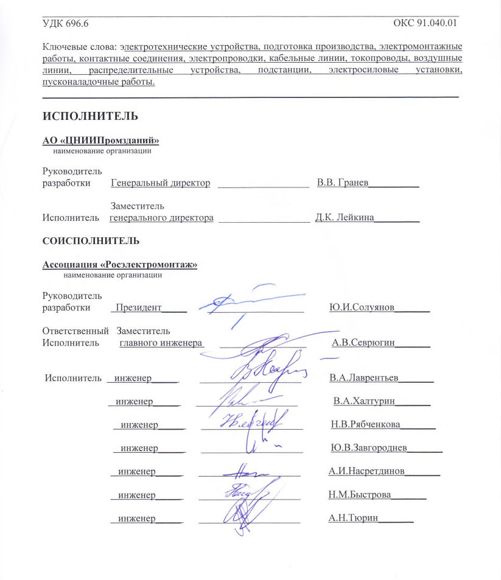

СП 76.13330.2016 «Электротехнические устройства»
О документе: разработчики, утверждение, регистрация, ключевые слова
СВОД ПРАВИЛ
СП 76.13330.2016
Издание официальное
МОСКВА 2016
1 ИСПОЛНИТЕЛЬ - Ассоциация «Росэлектромонтаж»
2 ВНЕСЕН Техническим комитетом по стандартизации ТК 465 «Строительство»
3 ПОДГОТОВЛЕН к утверждению Департаментом градостроительной деятельности и архитектуры Министерства строительства и жилищно-коммунального хозяйства Российской Федерации (Минстрой России)
4 УТВЕРЖДЕН приказом Министерства строительства и жилищно-коммунального хозяйства Российской Федерации от 16 декабря 2016 г. № 955/пр и введен в действие с 17 июня 2017 г.
5 ЗАРЕГИСТРИРОВАН Федеральным агентством по техническому регулированию и метрологии (Росстандарт). Пересмотр СП 76.13330.2011 «СНиП 3.05.06-85 Электротехнические устройства»
В случае пересмотра (замены) или отмены настоящего свода правил соответствующее уведомление будет опубликовано в установленном порядке. Соответствующая информация, уведомление и тексты размещаются также в информационной системе общего пользования на официальном сайте разработчика (Минстрой России) в сети Интернет
© Минстрой России, 2016
Настоящий нормативный документ не может быть полностью или частично воспроизведен, тиражирован и распространен в качестве официального издания на территории Российской Федерации без разрешения Минстроя России
В настоящем своде правил приведены требования, соответствующие целям Федерального закона № 384-ФЗ от 30 декабря 2009 г. «Технический регламент о безопасности зданий и сооружений», Федерального закона № 261-ФЗ от 23 ноября 2009 г. «Об энергосбережении и о повышении энергетической эффективности и о внесении изменений в отдельные законодательные акты Российской Федерации» и Федерального закона № 123 от 22 июля 2008 г. «Технический регламент о требованиях пожарной безопасности».
Документ устанавливает требования к производству электромонтажных и пусконаладочных работ.
Актуализация выполнена авторским коллективом Ассоциации «Росэлектромонтаж» (доктор техн. наук, профессор Ю.И. Солуянов , канд. техн. наук А.Н. Тюрин, инженеры Ю.А. Кутуев, А.В. Севрюгин, Н.В. Рябченкова, В.А. Лаврентьев, В.А. Халтурин, Ю.В. Завгороднев, А.И. Насретдинов, Н.М. Быстрова ).
Дата введения 2017-06-17
УДК 696.6 ОКС 91.040.01
Ключевые слова: электротехнические устройства, подготовка производства, электромонтажные работы, контактные соединения, электропроводки, кабельные линии, токопроводы, воздушные линии, распределительные устройства, подстанции, электросиловые установки, пусконаладочные работы
\_\_\_\_\_\_\_\_\_\_\_\_\_\_\_\_\_\_\_\_\_\_\_\_\_\_\_\_\_\_\_\_\_\_\_\_\_\_\_\_\_\_\_\_\_\_\_\_\_\_\_\_\_\_\_\_\_\_\_\_\_\_\_\_\_\_\_\_\_\_\_\_\_\_\_\_\_\_\_\_\_\_
ИСПОЛНИТЕЛЬ
АО «ЦНИИПромзданий»
наименование организации
Руководитель
разработки Генеральный директор \_\_\_\_\_\_\_\_\_\_\_\_\_\_\_\_\_\_ В.В. Гранев\_\_\_\_\_\_\_\_\_\_
Заместитель
Исполнитель генерального директора \_\_\_\_\_\_\_\_\_\_\_\_\_\_\_\_\_\_ Д.К. Лейкина\_\_\_\_\_\_\_\_\_
СОИСПОЛНИТЕЛЬ
Ассоциация «Росэлектромонтаж»
наименование организации
Руководитель
разработки Президент\_\_\_\_\_ \_\_\_\_\_\_\_\_\_\_\_\_\_\_\_\_\_\_\_ Ю.И.Солуянов\_\_\_\_\_\_\_
Ответственный Заместитель
Исполнитель главного инженера \_\_\_\_\_\_\_\_\_\_\_\_\_\_\_\_\_ А.В.Севрюгин\_\_\_\_\_\_\_
Исполнитель инженер\_\_\_\_\_ \_\_\_\_\_\_\_\_\_\_\_\_\_\_\_\_\_\_\_\_ В.А.Лаврентьев\_\_\_\_\_\_\_
инженер\_\_\_\_\_ \_\_\_\_\_\_\_\_\_\_\_\_\_\_\_\_\_\_\_\_ В.А.Халтурин\_\_\_\_\_\_\_
инженер\_\_\_\_\_ \_\_\_\_\_\_\_\_\_\_\_\_\_\_\_\_\_\_\_\_ Н.В.Рябченкова\_\_\_\_\_\_\_
инженер\_\_\_\_\_ \_\_\_\_\_\_\_\_\_\_\_\_\_\_\_\_\_\_\_\_ Ю.В.Завгороднев\_\_\_\_\_\_\_
инженер\_\_\_\_\_ \_\_\_\_\_\_\_\_\_\_\_\_\_\_\_\_\_\_\_\_ А.И.Насретдинов\_\_\_\_\_\_\_
инженер\_\_\_\_\_ \_\_\_\_\_\_\_\_\_\_\_\_\_\_\_\_\_\_\_\_ Н.М.Быстрова\_\_\_\_\_\_\_
инженер\_\_\_\_\_ \_\_\_\_\_\_\_\_\_\_\_\_\_\_\_\_\_\_\_\_ А.Н.Тюрин\_\_\_\_\_\_\_
1Область применения
Требования настоящих правил не распространяются на здания и сооружения, указанные в [1, статья 42, пункт 1].
2Нормативные ссылки
В настоящем своде правил использованы ссылки на следующие нормативные документы: ГОСТ 12.1.004-91Система стандартов безопасности труда. Пожарная безопасность. Общие требования
ГОСТ 12.2.007.12-88 Система стандартов безопасности труда. Источники тока химические. Требования безопасности
ГОСТ 667-73 Кислота серная аккумуляторная. Технические условия
ГОСТ 6709-72 Вода дистиллированная. Технические условия
ГОСТ 8595-83 Лития гидроокись техническая. Технические условия
ГОСТ 9285-78 (ИСО 992-75, ИСО 995-75, ИСО 2466-73) Калия гидрат окиси технический.
Технические условия
ГОСТ 9463-88 Лесоматериалы круглые хвойных пород. Технические условия
ГОСТ 9574-90 Панели гипсобетонные для перегородок. Технические условия
ГОСТ 10434-82 Соединения контактные электрические. Классификация. Общие технические требования
ГОСТ 12504-2015 Панели стеновые внутренние бетонные и железобетонные для жилых и общественных зданий. Общие технические условия
\_\_\_\_\_\_\_\_\_\_\_\_\_\_\_\_\_\_\_\_\_\_\_\_\_\_\_\_\_\_\_\_\_\_\_\_\_\_\_\_\_\_\_\_\_\_\_\_\_\_\_\_\_\_\_\_\_\_\_\_\_\_\_\_\_\_\_\_\_\_\_\_\_\_\_\_\_\_\_\_\_\_
ГОСТ 12767-94 Плиты перекрытий железобетонные сплошные для крупнопанельных зданий. Общие технические условия
ГОСТ 13015-2012 Изделия бетонные и железобетонные для строительства. Общие технические требования. Правила приемки, маркировки, транспортирования и хранения
ГОСТ 14254-2015 (IEC 60529:2013) Степени защиты, обеспечиваемые оболочками (Код IP)
ГОСТ 17441-84 Соединения контактные электрические. Приемка и методы испытаний
ГОСТ 18410-73 Кабели силовые с пропитанной бумажной изоляцией. Технические условия
ГОСТ 18690-2012 Кабели, провода, шнуры и кабельная арматура. Маркировка, упаковка, транспортирование и хранение
ГОСТ 22483-2012 (IEC 60228:2004) Жилы токопроводящие для кабелей, проводов и шнуров
ГОСТ 22687.0-85 Стойки железобетонные центрифугированные для опор высоковольтных линий электропередачи. Технические условия
ГОСТ 23118-2012 Конструкции стальные строительные. Общие технические условия
ГОСТ 23216-78 Изделия электротехнические. Хранение, транспортирование, временная противокоррозионная защита, упаковка. Общие требования и методы испытаний
ГОСТ 27584-88 Краны мостовые и козловые электрические. Общие технические условия
ГОСТ 30331.1-2013 (IEC 60364-1:2005) Электроустановки низковольтные. Часть 1. Основные положения, оценка общих характеристик, термины и определения
ГОСТ 31565-2012 Кабельные изделия. Требования пожарной безопасности
ГОСТ 31996-2012 Кабели силовые с пластмассовой изоляцией на номинальное напряжение 0,66; 1 и 3 кВ. Общие технические условия
ГОСТ IEC 60079-14-2011 Взрывоопасные среды. Часть 14. Проектирование, выбор и монтаж электроустановок
ГОСТ IEC 60079-30-2-2011 Взрывоопасные среды. Электронагреватель резистивный распределенный. Часть 30-2. Руководство по проектированию, установке и техническому обслуживанию
ГОСТ IEC 60598-2-22-2012 Светильники. Часть 2-22. Частные требования. Светильники для аварийного освещения
ГОСТ IEC 61140-2012 Защита от поражения электрическим током. Общие положения безопасности установок и оборудования
ГОСТ Р 1.2-2016 Стандартизация в Российской Федерации. Стандарты национальные Российской Федерации. Правила разработки, утверждения, обновления, внесения поправок, приостановки действия и отмены
ГОСТ Р 12.3.048-2002 Система стандартов безопасности труда. Строительство. Производство земляных работ способом гидромеханизации. Требования безопасности
ГОСТ Р 12.4.026-2015 Система стандартов безопасности труда. Цвета сигнальные, знаки безопасности и разметка сигнальная. Назначение и правила применения. Общие технические требования и характеристики. Методы испытаний
ГОСТ Р 50462-2009 (МЭК 60446:2007) Базовые принципы и принципы безопасности для интерфейса «человек-машина», выполнение и идентификация. Идентификация проводников посредством цветов и буквенно-цифровых обозначений
ГОСТ Р 50571.3-2009 (МЭК 60364-4-41:2005) Электроустановки низковольтные. Часть 441. Требования для обеспечения безопасности. Защита от поражения электрическим током
ГОСТ Р 50571-4-44-2011 (МЭК 60364-4-44:2007) Электроустановки низковольтные. Часть 4-44. Требования по обеспечению безопасности. Защита от отклонений напряжения и электромагнитных помех
ГОСТ Р 50571.5.52-2011 (МЭК 60364-5-52:2009) Электроустановки низковольтные. Часть 5-52. Выбор и монтаж электрооборудования. Электропроводки
ГОСТ Р 50571.5.54-2013 (МЭК 60364-5-54:2011) Электроустановки низковольтные. Часть 5-54. Выбор и монтаж электрооборудования. Заземляющие устройства, защитные проводники и защитные проводники уравнивания потенциалов
ГОСТ Р 50571.7.715-2014 (МЭК 60364-7-715:2011) Электроустановки низковольтные. Часть 7-715. Требования к специальным электроустановкам или местам их расположения. Осветительные установки сверхнизкого напряжения
ГОСТ Р 50571-7-753-2013 (МЭК 60364-7-753:2005) Электроустановки низковольтные. Часть 7-753. Требования к специальным электроустановкам или местам их расположения. Электроустановки с нагреваемыми полами и потолочными поверхностями
ГОСТ Р 50571.25-2001 Электроустановки зданий. Часть 7. Требования к специальным электроустановкам. Электроустановки зданий и сооружений с электрообогреваемыми полами и поверхностями
ГОСТ Р 52719-2007 Трансформаторы силовые. Общие технические условия
ГОСТ Р 52868-2007 (МЭК 61537:2006) Системы кабельных лотков и системы кабельных лестниц для прокладки кабелей. Общие технические требования и методы испытаний
ГОСТ Р 53310-2009 Проходки кабельные, вводы герметичные и проходы шинопроводов. Требования пожарной безопасности. Методы испытаний на огнестойкость
ГОСТ Р 53316-2009 Кабельные линии. Сохранение работоспособности в условиях пожара. Метод испытания
ГОСТ Р 54350-2015 Приборы осветительные. Светотехнические требования и методы испытаний
ГОСТ Р 55375-2012 Алюминий первичный и сплавы на его основе. Марки
ГОСТ Р МЭК 60598-1-2011 Светильники. Часть 1. Общие требования и методы испытаний
ГОСТ Р МЭК 60896-21-2013 Батареи свинцово-кислотные стационарные. Часть 21. Типы с регулирующим клапаном. Методы испытаний
ГОСТ Р МЭК 61056-1-2012 Батареи свинцово-кислотные общего назначения (типы с регулирующим клапаном). Часть 1. Общие требования, функциональные характеристики. Методы испытаний
ГОСТ Р МЭК 61084-1-2007 Системы кабельных и специальных кабельных коробов для электрических установок. Часть 1. Общие требования
ГОСТ Р МЭК 61084-2-1-2007 Системы кабельных и специальных кабельных коробов для электрических установок. Часть 2. Частные требования. Раздел 1. Системы кабельных и специальных кабельных коробов, предназначенные для установки на стенах и потолках
ГОСТ Р МЭК 61084-2-2-2007 Системы кабельных и специальных кабельных коробов для электрических установок. Часть 2-2. Частные требования. Системы кабельных и специальных кабельных коробов, предназначенные для установки под и заподлицо с полом
ГОСТ Р МЭК 61084-2-4-2007 Системы кабельных и специальных кабельных коробов для электрических установок. Часть 2. Частные требования. Раздел 4. Сервисные стойки
ГОСТ Р МЭК 61386.1-2014 Трубные системы для прокладки кабелей. Часть 1. Общие требования
ГОСТ Р МЭК 61534.1-2014 Системы шинопроводов. Часть 1. Общие требования
ГОСТ Р МЭК 62485-2-2011 Батареи аккумуляторные и установки батарейные. Требования безопасности. Часть 2. Стационарные батареи
СП 2.13130.2012 Системы противопожарной защиты. Обеспечение огнестойкости объектов защиты
СП 22.13330.2011 «СНиП 2.02.01-83* Основания зданий и сооружений»
СП 24.13330.2011 «СНиП 2.02.03-85 Свайные фундаменты»
СП 28.13330.2012 «СНиП 2.03.11-85 Защита строительных конструкций от коррозии»
СП 45.13330.2012 «СНиП 3.02.01-87 Земляные сооружения, основания и фундаменты»
СП 48.13330.2011 «СНиП 12-01-2004 Организация строительства»
СП 52.13330.2011 «СНиП 23-05-95* Естественное и искусственное освещение»
СП 60.13330.2012 «СНиП 41-01-2003 Отопление, вентиляция и кондиционирование воздуха»
СП 64.13330.2011 «СНиП II-25-80 Деревянные конструкции»
СП 68.13330.2011 «СНиП 3.01.04-87 Приемка в эксплуатацию законченных строительством объектов. Основные положения»
СП 70.13330.2012 «СНиП 3.03.01-87 Несущие и ограждающие конструкции»
СП 77.13330.2012 «СНиП 3.05.07-85 Системы автоматизации»
Примечание - При пользовании настоящим сводом правил целесообразно проверить действие ссылочных документов в информационной системе общего пользования - на официальном сайте федерального органа исполнительной власти в сфере стандартизации в сети Интернет или по ежегодному информационному указателю «Национальные стандарты», который опубликован по состоянию на 1 января текущего года, и по выпускам ежемесячного информационного указателя «Национальные стандарты» за текущий год. Если заменен ссылочный документ, на который дана недатированная ссылка, то рекомендуется использовать действующую версию этого документа с учетом всех внесенных в данную версию изменений. Если заменен ссылочный документ, на который дана датированная ссылка, то рекомендуется использовать версию этого документа с указанным выше годом утверждения (принятия). Если после утверждения настоящего свода правил в ссылочный документ, на который дана датированная ссылка, внесено изменение, затрагивающее положение, на которое дана ссылка, то это положение рекомендуется применять без учета данного изменения. Если ссылочный документ отменен без замены, то положение, в котором дана ссылка на него, рекомендуется применять в части, не затрагивающей эту ссылку. Сведения о действии сводов правил целесообразно проверить в Федеральном информационном фонде стандартов.
3Термины и определения
В настоящем своде правил применены следующие термины с соответствующими определениями:
- 3.1аппаратура распределения и управления
- Общий термин для коммутационных аппаратов и их комбинации с относящимися к ним устройствами управления, измерения, защиты и регулирования, а также узлов, в которых такие аппараты и устройства сочетаются с соединительными проводниками, вспомогательными устройствами, оболочками и каркасами.Источник: ГОСТ IEC 60947-1 -2014, пункт 2.1.1
- 3.2главный заземляющий зажим (шина)
- Зажим (шина), являющийся(аяся) частью заземляющего устройства установки и обеспечивающий(ая) присоединение нескольких проводников в целях заземления.Источник: ГОСТ Р 50571.5.54 -2 013, пункт 541.3.9
- 3.3дополнительное уравнивание потенциалов
- Защитное уравнивание потенциалов, предусматривающее выполнение дополнительного электрического соединения открытых проводящих частей со сторонними проводящими частями или открытых проводящих частей между собой.Источник: ГОСТ 30331.1-2013, пункт 20.8
- 3.4заземлитель
- Проводящая часть или совокупность электрически соединенных между собой проводящих частей, находящихся в электрическом контакте с локальной землей непосредственно или через промежуточную проводящую среду.Источник: ГОСТ 30331.1-2013, пункт 20.13
- 3.5заземляющий проводник
- Проводник, создающий электрическую цепь или ее часть проводящей цепи между данной точкой системы или установки, или оборудования и заземляющим электродом или заземлителем.
- Примечание
- В настоящем стандарте под заземляющим проводником понимают проводник, который соединяет заземлитель с точкой уравнивания потенциалов, как правило, с главной заземляющей шиной.Источник: ГОСТ Р 50571.5.54-2013, пункт 541.3.8
- 3.6заземляющее устройство
- Совокупность заземлителя, заземляющих проводников и главной заземляющей шины.Источник: ГОСТ 30331.1-2013, пункт 20.14
- 3.7заземляющий электрод (заземлитель)
- Проводящая часть, которая может быть погружена в землю или в специальную проводящую среду, например бетон или уголь, и находящаяся в электрическом контакте с землей.Источник: ГОСТ Р 50571.5.54-2013, пункт 541.3.3
- 3.8защитный проводник (РЕ)
- Проводник, предназначенный для целей электрической безопасности, например для защиты от поражения электрическим током
- Примечание - Понятие «защитный проводник» включает в себя
- защитный проводник уравнивания потенциалов, проводник защитного заземления и заземляющий проводник, когда их применяют для защиты от поражения электрическим током.
- 3.9защитный заземляющий проводник
- Защитный проводник, предназначенный для защитного заземления.Источник: ГОСТ Р МЭК 60050-826-2009, пункт 826-13-23
- 3.10защитный проводник уравнивания потенциалов (РВ, РВЕ, РВU)
- Защитный проводник, предназначенный для защитного уравнивания потенциалов.
- 3.11индустриальный метод монтажа
- Организация электромонтажного производства с применением комплексно-механизированных процессов и прогрессивных методов монтажа электроустановок с широким использованием укрупненных блоков электрооборудования и конструкций высокой заводской готовности.
- 3.12исполнительная документация
- Комплект рабочих документов с текстовыми и графическими материалами, с надписями о соответствии выполненных работ этим чертежам или о внесенных в них изменениях, сделанных лицами, ответственными за производство работ.
- 3.13кабельная конструкция
- Совокупность опорных конструкций (стойка, полка, кронштейн, консоль) для прокладки электрических кабелей и установки на них кабельных лотков и коробов.
- 3.14кабельная линия
- Линия для передачи электроэнергии токами промышленной частоты, состоящая из одного или нескольких, соединенных между собой без коммутационных аппаратов, параллельных силовых кабелей с соединительными и концевыми муфтами .
- кабельная электронагревательная секция
- Электронагревательная секция, в которой в качестве распределенного электронагревательного элемента используют одноили многожильный нагревательный кабель.Источник: ГОСТ Р 50571.25-2001, пункт 3.9
- 3.16кабельное изделие
- Изделие (кабель, провод, шнур), предназначенное для передачи по нему электрической энергии, электрических и оптических сигналов информации или служащее для изготовления обмоток электрических устройств, отличающееся гибкостью. [ГОСТ 31565-2012, пункт 3.1]
- 3.17кабельный лоток
- Опорная конструкция для кабелей, состоящая из протяженного основания с вертикальными бортами и не имеющая крышки.
- Примечание
- Кабельный лоток может быть перфорированным или сетчатым.Источник: ГОСТ Р МЭК 60050-826-2009, пункт 826-15-08
- 3.18кабельный лоток лестничного типа
- Опорная конструкция для кабелей, состоящая из последовательно расположенных поперечных опорных элементов, жестко прикрепленных к основным продольным опорным элементам.Источник: ГОСТ Р МЭК 60050-826-2009, пункт 826-15-09
- 3.19кабельные полки [кронштейны]
- Горизонтальные опорные конструкции для кабелей, располагаемые с промежутками, имеющие крепление только на одном конце. [ГОСТ Р МЭК 60050-826-2009, пункт 826-15-10]
- 3.20комплексная механизация работ
- Замена ручного труда на механизированный, с применением крупных механизмов, а также широкого спектра средств малой механизации и приспособлений.
- 3.21комплексное опробование
- Работы, проводимые обслуживающим персоналом заказчика с участием представителей строительной, монтажной и проектной организаций на основании акта рабочей комиссии о готовности оборудования к комплексному опробованию под нагрузкой.
- 3.22контактное соединение
- Контакт электрической цепи, предназначенный только для проведения электрического тока и не предназначенный для коммутации электрической цепи при заданном действии устройства.Источник: ГОСТ 14312-79, пункт 5
- метод
- Инструментальный способ, прием достижения какой-либо цели или решения конкретной задачи.Источник: ГОСТ 33570-2015, пункт 3.1.7
- 3.24нагревательный кабель
- Кабельное изделие, предназначенное для преобразования электрической энергии в тепловую в целях нагрева. Различают одно- и многожильный нагревательный кабель, с экранной оплеткой, обеспечивающей электрическую и механическую защиту и предотвращающей распространение электромагнитных полей, или без нее. Изоляция кабеля, как правило, двойная и подвергнута специальной обработке, делающей ее негорючей и неплавящейся. Наружный слой изоляции может быть более прочным для защиты кабеля от повреждений при механических перегрузках.Источник: ГОСТ Р 50571.25-2001, пункт 3.12
- 3.25нейтральный проводник (N)
- Проводник, электрически присоединенный к нейтрали и используемый для передачи электрической энергии. Примечание - В некоторых случаях и при определенных условиях функции нейтрального проводника и защитного проводника могут быть объединены в одном PEN-проводнике.Источник: ГОСТ 30331.1-2013, пункт 20.34
- 3.26нераспространение горения
- Способность кабеля или группы совместно проложенных кабелей самостоятельно прекращать горение после удаления источника зажигания.Источник: ГОСТ 31996-2012, пункт 3.8
- 3.27низковольтное устройство распределения и управления; НКУ
- Низковольтные коммутационные аппараты и устройства управления, измерения, сигнализации, защиты, регулирования, собранные на предприятии-изготовителе на единой конструктивной основе со всеми внутренними электрическими и механическими соединениями. 1 В настоящем стандарте сокращение НКУ используют для обозначения низковольтных комплектных устройств распределения и управления. 2 Аппараты, входящие в состав НКУ, могут быть электромеханическими или электронными. 3 По разным причинам, например по условиям транспортирования или изготовления, некоторые операции сборки допускается проводить на месте установки НКУ, а не на предприятии-изготовителе.Источник: ГОСТ Р 51321.1-2007, пункт 2.1.1
- 3.28огнестойкость
- Параметр, характеризующий работоспособность кабельного изделия, т.е. способность кабельного изделия продолжать выполнять заданные функции при воздействии и после воздействия источником пламени в течение заданного периода времени. [ГОСТ 31565-2012, пункт 3.2]
- опасная токоведущая часть
- Токоведущая часть, которая при определенных условиях может вызвать существенное поражение электрическим током.Источник: ГОСТ Р МЭК 60050-195-2005, пункт 195-06-05
- 3.30основное уравнивание потенциалов
- Защитное уравнивание потенциалов, предусматривающее выполнение электрического присоединения сторонних проводящих частей и главного защитного проводника к главной заземляющей шине.Источник: ГОСТ 30331.1-2013, пункт 20.42
- 3.31открытая проводящая часть
- Доступная для прикосновения проводящая часть оборудования, которая нормально не находится под напряжением, но может оказаться под напряжением при повреждении основной изоляции.Источник: ГОСТ Р МЭК 60050-195-2005, пункт 195-06-10
- 3.32открытая электропроводка
- Электропроводка, проложенная по поверхности стен, потолков, по фермам и другим строительным элементам зданий и сооружений, по опорам.
- 3.33пластинчатая электронагревательная секция
- Электронагревательная секция, в которой в качестве распределенного электронагревательного элемента используют нагревательную пластину.Источник: ГОСТ Р 50571.25-2001, пункт 3.11
- 3.34подготовка производства
- Комплекс организационно-технических мероприятий, при выполнении которых достигается высокая эффективность работ на базе применения современных прогрессивных технологий, комплексной механизации и индустриализации, своевременного материально-технического обеспечения работ.
- 3.35проводник
- Проводящая часть, предназначенная для проведения электрического тока определенного значения.Источник: ГОСТ Р МЭК 60050-195-2005, пункт 195-01-07
- 3.36рабочая документация
- Совокупность текстовых и графических документов, обеспечивающих реализацию принятых в утвержденной проектной документации технических решений объекта капитального строительства, необходимых для производства строительных и монтажных работ, обеспечения строительства оборудованием, изделиями и материалами и/или изготовления строительных изделий. Примечание - В состав рабочей документации входят основные комплекты рабочих чертежей, спецификации оборудования, изделий и материалов, сметы, другие прилагаемые документы, разрабатываемые в дополнение к рабочим чертежам основного комплекта.Источник: ГОСТ 21.001-2013, пункт 3.1.6
- система кабельных коробов
- Система замкнутых оболочек, состоящих из основания и съемной крышки, предназначенная для полного заключения в себя изолированных проводов, кабелей, шнуров и (или) для размещения другого электрического оборудования, включая оборудование информационных технологий.Источник: ГОСТ Р МЭК 60050-826-2009, пункт 826-15-04
- 3.38система кабельных лотков; система кабельных лестничных лотков
- Совокупность опорных конструкций, предназначенная для прокладки кабелей, состоящая из секций кабельных лотков или секций кабельных лестниц (далее - кабельных лестниц) и иных компонентов системы.Источник: ГОСТ Р 52868-2007, пункт 3.1
- 3.39система специальных кабельных коробов
- Система замкнутых оболочек некруглого сечения, не имеющая съемных или открывающихся крышек, предназначенная для прокладки изолированных проводов, кабелей и шнуров в электрических установках, допускающая их затяжку в нее и их замену.Источник: ГОСТ Р МЭК 60050-826-2009, пункт 826-15-05
- 3.40система уравнивания потенциалов
- Совокупность соединений проводящих частей, обеспечивающая уравнивание потенциалов между ними. Примечание -Заземленная система уравнивания потенциалов является частью заземляющего устройства.Источник: ГОСТ Р МЭК 60050-195-2005, пункт 195-02-22
- 3.41скрытая электропроводка
- Электропроводка , проложенная внутри конструктивных элементов зданий и сооружений (в стенах, полах, фундаментах, перекрытиях), а также по перекрытиям в подготовке пола, непосредственно под съемным полом, в полостях над непроходными подвесными потолками, внутри сборных перегородок.
- 3.42совмещенный защитный заземляющий и нейтральный проводник (PENпроводник)
- Проводник, выполняющий функции защитного заземляющего и нейтрального проводников.Источник: ГОСТ IEC 61140-2012, пункт 3.16.5
- 3.43способ
- Действие или система действий, порядок действий.
- 3.44техническое перевооружение
- Комплекс мероприятий по повышению техникоэкономического уровня действующих предприятий и отдельных производств на основе внедрения передовых технологий и оборудования.
- 3.45усиленная изоляция
- Изоляция опасных токоведущих частей, обеспечивающая степень защиты от поражения электрическим током, эквивалентную степени защиты, обеспечиваемой двойной изоляцией. Примечание - Усиленная изоляция может состоять из нескольких слоев, каждый из которых не может быть испытан отдельно как основная и дополнительная изоляция.Источник: ГОСТ Р МЭК 60050-195-2005, пункт 195-06-09
- 3.46установка распределенного электрообогрева
- Совокупность функционально связанных между собой электронагревательных секций различного типа (кабельных, пленочных, пластинчатых), электроустановочных изделий общего назначения, кабельных линий и электропроводок для внешних соединений электронагревательных элементов со шкафом управления или блоком питания, а также механических крепежных и защитных элементов.Источник: ГОСТ Р 50571.25-2001, пункт 3.5
- 3.47электронагревательная секция (нагревательная секция)
- Конструкция, состоящая из распределенного электронагревательного элемента, соединительной и концевой муфт, монтажных силовых и защитных проводов или кабелей, предназначенная для обогрева элементов здания (например, полов), сооружений, различных объектов и изделий.Источник: ГОСТ Р 50571.25-2001, пункт 3.7
- 3.48эксплуатационная документация
- Техническая документация, которая в отдельности или в совокупности с другими документами определяет правила эксплуатации и/или отражает сведения, удостоверяющие изготовителем значения основных параметров и характеристик изделия, гарантии и сведения по его эксплуатации в течение установленного срока службы.
- 3.49электропроводка
- Совокупность проводов или кабелей с относящимися к ним элементами крепления и механической защиты.
- 3.50электроустановка здания
- Совокупность взаимосвязанного электрооборудования, установленного в здании и имеющего согласованные характеристики.Источник: ГОСТ 30331.1-2013, пункт 20.109
4Общие положения
На первой стадии внутри зданий и сооружений производятся работы по монтажу опорных конструкций для установки электрооборудования и шинопроводов, для прокладки кабелей и проводов, монтажу троллеев для электрических мостовых кранов, монтажу стальных и пластмассовых труб для электропроводок, прокладке проводов скрытой проводки до штукатурных и отделочных работ, а также работы по монтажу наружных кабельных сетей и сетей заземления. Работы первой стадии следует выполнять в зданиях и сооружениях по совмещенному графику одновременно с производством основных строительных работ, при этом должны быть приняты меры по защите установленных конструкций и проложенных труб от поломок и загрязнений.
На второй стадии выполняются работы по монтажу электрооборудования, прокладке кабелей и проводов, шинопроводов и подключению кабелей и проводов к выводам электрооборудования. В электротехнических помещениях объектов работы второй стадии следует выполнять после завершения комплекса общестроительных и отделочных работ и по окончании работ по монтажу сантехнических устройств, а в других помещениях и зонах - после установки технологического оборудования, электродвигателей и других электроприемников, монтажа технологических, санитарно-технических трубопроводов и вентиляционных коробов.
На небольших объектах, удаленных от мест расположения электромонтажных организаций, работы следует производить выездными комплексными бригадами с совмещением двух стадий их выполнения в одну.
При проектировании и монтаже электрических установок должны быть учтены меры, направленные на снижение воздействия наведенных резких отклонений напряжения и электромагнитных помех. Указанные меры приведены в IEC 60364-4-44.
[ГОСТ 30331.1-2013, пункт 33.2]
Электромагнитная совместимость комплекса технических средств объекта должна быть предусмотрена в рабочей документации.
5Подготовка к производству электромонтажных работ
- размеры элементов, положение стальных закладных деталей, а также качество поверхностей и внешний вид элементов. Указанные параметры должны соответствовать ГОСТ 13015, ГОСТ 22687.0;
- наличие на поверхности железобетонных конструкций, предназначенных для установки в агрессивную среду, гидроизоляции, выполненной на предприятии-изготовителе.
- наличие паспорта предприятия-изготовителя на каждую партию изоляторов и линейной арматуры, удостоверяющего их качество;
- отсутствие на поверхности изоляторов трещин, деформаций, раковин, сколов, повреждений глазури, а также покачивания и поворота стальной арматуры относительно цементной заделки или фарфора;
- отсутствие у линейной арматуры трещин, деформаций, раковин и повреждений оцинковки и резьбы.
Мелкие повреждения оцинковки допускается закрашивать цинкосодержащими и лакокрасочными материалами.
- подготовлены инвентарные сооружения в местах размещения прорабских участков и временные базы для складирования материалов и оборудования с учетом их временного электроснабжения; сооружены временные подъездные дороги, мосты и монтажные площадки;
- устроены просеки;
- осуществлены предусмотренный проектом снос строений и реконструкция пересекаемых инженерных сооружений, находящихся на трассе ВЛ или вблизи нее и препятствующих производству работ.
5.21Подготовка трассы для прокладки кабеля в земле включает следующие мероприятия:
- из траншеи откачана вода и удалены камни, комья земли, строительный мусор;
- на дне траншеи устроена подушка из разрыхленной земли или песка;
- выполнены проколы грунта в местах пересечения трассы с дорогами и другими инженерными сооружениями, заложены трубы;
- заготовлены материалы для защиты кабеля от повреждения в местах частых раскопок (кирпич, железобетонные плиты и др.).
После прокладки кабелей в траншее и представления электромонтажной организацией акта освидетельствования скрытых работ траншею следует засыпать.
- выдержана проектная глубина заложения блоков от планировочной отметки;
- обеспечены укладка и гидроизоляция стыков железобетонных блоков и труб в соответствии с проектом;
- обеспечена чистота и соосность каналов;
- выполнены двойные крышки (нижняя с запором) люков колодцев, металлические лестницы или скобы для спуска в колодец.
Железобетонные, гипсобетонные, керамзитобетонные и монолитные панели перекрытия, внутренние стеновые панели и перегородки, железобетонные колонны и ригели заводского изготовления должны иметь каналы (трубы) для прокладки проводов, ниши, гнезда с закладными деталями для установки штепсельных розеток, выключателей, звонков и звонковых кнопок в соответствии с рабочими чертежами. Проходные сечения каналов и замоноличенных неметаллических труб не должны отличаться более чем на 15 % от указанных в рабочих чертежах.
Смещение гнезд и ниш в местах сопряжений смежных строительных конструкций не должно быть более 40 мм.
Указанные отверстия, борозды, ниши и гнезда, не оставленные в строительных конструкциях при их возведении, выполняются генподрядчиком в соответствии с архитектурностроительными чертежами.
Отверстия диаметром менее 30 мм, не поддающиеся учету при разработке чертежей и не предусмотренные в строительных конструкциях по условиям технологии их изготовления (отверстия в стенах, перегородках, перекрытиях только для установки дюбелей, шпилек и штырей различных опорно-поддерживающих конструкций), должны выполняться электромонтажной организацией на месте производства работ.
После выполнения электромонтажных работ генподрядчик обязан осуществить заделку отверстий, борозд, ниш и гнезд, обеспечивая нормируемый предел огнестойкости пересекаемой ограждающей конструкции.
6Производство электромонтажных работ
6.1Общие требования
Разборка оборудования, поступившего опломбированным с предприятия-изготовителя, запрещается.
Крепление опорных конструкций следует выполнять сваркой к закладным деталям, предусмотренным в строительных элементах, или крепежными изделиями (дюбелями, штырями, шпильками и т.п.). Способ крепления должен быть указан в рабочих чертежах.
При производстве работ электромонтажная организация должна выполнять требования ГОСТ 12.1.004 и [3]. При введении на объекте эксплуатационного режима обеспечение пожарной безопасности является обязанностью заказчика.
6.2Контактные соединения
- расположенных в земле;
- заполненных компаундом или загерметизированных;
- расположенных между холодным концом и нагревательным элементом в потолке, полу или в системе обогрева трассы;
- выполненных сваркой, пайкой или опрессовкой;
- являющихся частью оборудования в соответствии со стандартом на изделие.
[ГОСТ Р 50571.5.52-2011, пункт 526.3]
Соединения защитных проводников должны быть доступными для осмотра и испытаний за исключением соединений:
- заполненных компаундом;
- находящихся в закрытых полостях;
- в металлических трубах, коробах или сборных шин;
- выполненных сваркой;
- выполненных опресовкой.
[ГОСТ Р 50571.5.54-2013/МЭК 60364-5-54:2011, пункт 543.3.2]
В местах соединения и точках стыковки кабелей и проводников должны быть приняты меры по снижению механических напряжений. Устройства для уменьшения деформации должны быть сконструированы таким образом, чтобы избежать любого механического повреждения кабелей или проводников.
[ГОСТ Р 50571.5.52-2011, пункт 526.6]
В местах, где по условиям эксплуатации требуется наличие разборных соединений шин, они должны быть выполнены при помощи крепежных деталей. Число разборных соединений должно быть минимальным.
Монтаж контактных соединений шин между собой и с выводами электротехнических устройств рекомендуется выполнять в соответствии с требованиями, приведенными в [11], а сварку цветных металлов в электромонтажном производстве в соответствии с требованиями, приведенными в [12].
Однопроволочные провода соединять путем пайки и скрутки не допускается.
Сварка встык однопроволочных проводов не допускается.
- а) в шлейфах опор анкерно-углового типа:
- сталеалюминиевых проводов сечением 240 мм и выше - при помощи термитных патронов и опрессовкой с помощью энергии взрыва;
- сталеалюминиевых проводов сечением 500 мм и выше - при помощи прессуемых соединителей;
- проводов разных марок - болтовыми зажимами;
- проводов из алюминиевого сплава -зажимами петлевыми плашечными или соединителями овальными, монтируемыми методом обжатия; б) в пролетах:
- сталеалюминиевых проводов сечением до 185 мм и стальных канатов сечением до 50 мм - овальными соединителями, монтируемыми методом обжатия;
- стальных канатов сечением 70 - 95 мм - овальными соединителями, монтируемыми методом обжатия или опрессования с дополнительной термитной сваркой концов;
- сталеалюминиевых проводов сечением 240 - 400 мм - соединительными зажимами, монтируемыми методом сплошного опрессования и опрессования с помощью энергии взрыва;
- сталеалюминиевых проводов сечением 500 мм и более - соединительными зажимами, монтируемыми методом сплошного опрессования.
6.3Электропроводки
6.3.1 Общие требования
6.3.1.1 Правила настоящего подраздела распространяются на монтаж электропроводок силовых, осветительных и вспомогательных цепей напряжением до 1 кВ переменного и до 1,2 кВ постоянного тока, выполненных изолированными проводами и кабелями на (в) строительных конструкциях (стены, перекрытия, полы и др.) жилых, общественных и производственных зданий, а также на территориях, примыкающих к ним, и строительных площадках.
6.3.1.2 Методы монтажа электропроводки, в зависимости от типа используемого провода или кабеля, от условий внешних воздействующих факторов и от условий прокладки, должны соответствовать требованиям ГОСТ Р 50571.5.52.
6.3.1.3 Все элементы электропроводки, включая провода, кабели и арматуру, должны устанавливаться и монтироваться при температурах, указанных в соответствующем стандарте или документах изготовителя.
Требования к монтажу электропроводок жилых и общественных зданий приведены в [13], [27].
6.3.1.4 Монтаж электропроводок по условиям ограничения распространения горения должен выполняться с учетом требований ГОСТ Р 50571.5.52 - 2011 (раздел 527).
6.3.1.5 В зданиях следует применять кабели и изолированные провода с медными жилами, с учетом требований пожарной безопасности и их типа исполнения в соответствии с ГОСТ 31565.
Распределительные сети, как правило, должны выполняться кабелями и изолированными проводами с алюминиевыми жилами, если их сечение равно 16 мм² и более.
6.3.1.6 Сечения проводников должны соответствовать расчетным значениям, указанным в проектной документации, но по механической прочности должны быть не менее значений, приведенных в таблице 1.
Таблица 1
| Тип электропроводки | Тип электропроводки | Назначение цепи | Проводник | Проводник |
|---|---|---|---|---|
| Назначение цепи | Материал | Площадь поперечного сечения, мм | ||
| Стационарные электроустановки | Кабели и изолированные проводники | Силовые и осветительные сети | Медь | 1,5 |
| Стационарные электроустановки | Силовые и осветительные сети | Алюминий | В соответствии с МЭК 60228 (10) (см. примечание 1), | |
| Стационарные электроустановки | Сигнализация и цепи | Медь | 0,5 (см. примечание 2), | |
| Неизолированные проводники | Силовые цепи | Медь | 10 | |
| Силовые цепи | Алюминий | 16 | ||
| Сигнализация и цепи | Медь | 4 | ||
| Соединения с гибкими изолированными проводниками и кабелями | Соединения с гибкими изолированными проводниками и кабелями | Для специального применения | Медь | По нормам и требованиям соответствующих стандартов |
| Для любого другого применения | Медь | 0,75 |
| Схемы сверхнизкого напряжения для специального применения | 0,75 | |
|---|---|---|
| Примечания 1 Оконцеватели для алюминиевых проводников должны быть испытаны и предназначены для этого применения. | Примечания 1 Оконцеватели для алюминиевых проводников должны быть испытаны и предназначены для этого применения. | Примечания 1 Оконцеватели для алюминиевых проводников должны быть испытаны и предназначены для этого применения. |
| Примечание 2 относится также к многожильным гибким кабелям, содержащим 7 или большее количество жил. | Примечание 2 относится также к многожильным гибким кабелям, содержащим 7 или большее количество жил. | Примечание 2 относится также к многожильным гибким кабелям, содержащим 7 или большее количество жил. |
[ГОСТ Р 50571.5.52-2011, пункт 524.1, таблица 52.2]
Примечание 1 - ГОСТ 22483 идентичен МЭК 60228.
Примечание 2 - Для осветительных установок сверхнизкого напряжения ГОСТ Р 50571.7.715 идентичен МЭК 60364-7-715.
Примечание 3 -
Для систем со светильниками, подвешенными на проводах, минимальная площадь поперечного сечения проводников СНН, которые подключены к зажимам или выводам трансформаторов/преобразователей должна быть 4 мм по соображениям механической прочности.
[ГОСТ Р 50571.7.715-2014, пункт 715.524.]
6.3.1.7
Кабели, шины и другие электрические проводники, которые проходят через температурные швы, должны быть выбраны и установлены таким образом, чтобы их перемещение не вызывало повреждений электрооборудования, например использование гибкого проводного соединения.
[ГОСТ Р 50571.5.52-2011, пункт 522.8.13]
- В местах, где конструкции здания могут смещаться одна относительно другой (CBЗ), крепление проводов и кабелей и их механическая защита должны позволять такое относительное смещение, которое не подвергает провода и кабели избыточному механическому воздействию. [ГОСТ Р 50571.5.52-2011, пункт 522.15.1]
Не допускается укладка запаса кабелей и проводов в виде колец (витков).
6.3.1.8
В зданиях с гибкими или неустойчивыми конструкциями (CB4) следует применять гибкие электропроводки.
[ГОСТ Р 50571.5.52-2011, пункт 522.15.2]
- 6.3.1.9 Не допускается применение кабелей и проводов с алюминиевыми жилами для присоединения к электродвигателям, установленным на виброизолирующих опорах.
- 6.3.1.10 При монтаже электропроводки необходимо избегать перекрещиваний кабелей между собой, а также пересечений кабелей и проводов с трубопроводами и другими инженерными коммуникациями.
При сближении электропроводок с электрическими, телекоммуникационными и неэлектрическими сетями необходимо учитывать требования ГОСТ Р 50571.5.52.
- 6.3.1.11 Радиусы изгиба кабелей и проводов, исходя из условий их прокладки и выполнения соединений, ответвлений и присоединений жил, должны быть не менее указанных в стандартах, технических условиях.
- 6.3.1.12 Соединение, ответвление и оконцевание жил кабелей и проводов необходимо производить при помощи сварки, опресcовки или с использованием различного рода соединителей (сжимов, навертывающихся соединителей, резьбовых и безрезьбовых зажимов и т.п.) в соответствии с ГОСТ Р 50571.5.52-2011 (раздел 526) и с рекомендациями [14].
Места опрессовки необходимо изолировать пластмассовыми колпачками или изолирующей лентой.
Примечание - Использование соединений пайкой рекомендуется избегать, за исключением коммуникационных схем. Если такие соединения используются, то они должны быть выполнены с учетом возможных смещений, механических усилий и повышения температуры при коротких замыканиях (см. 522.6, 522.7 и 522.8).
[ГОСТ Р 50571.5.52-2011, пункт 526.2, примечание 1]
- 6.3.1.13 Прокладка кабелей и изолированных проводов в защитной оболочке сквозь строительные конструкции (стены, перегородки, перекрытия и др.) должна выполняться в отфактурованных отверстиях (проемах) с применением кабельных проходок, соответствующих ГОСТ Р 53310.
Узлы пересечения ограждающих строительных конструкций кабелями должны иметь предел огнестойкости не ниже требуемых пределов, установленных для этих конструкций.
- 6.3.1.14 Электропроводки в полостях над непроходными подвесными потолками и внутри сборных перегородок рассматриваются как скрытые и их следует выполнять кабелями, удовлетворяющими требованиям ГОСТ 31565.
За подвесными потолками и в пустотах перегородок, выполненных с использованием материалов группы горючести Г3 и Г4, электропроводки следует выполнять в обладающих локализационной способностью металлических трубах, а также в обладающих локализационной способностью металлических глухих коробах.
Локализационная способность - это способность стальной трубы выдерживать короткое замыкание в электропроводке, проложенной в ней, без прогорания ее стенок. В таблице 2 приведены значения толщины стенки стальной трубы, обеспечивающей ее локализационную способность.
Таблица 2
| Максимальное сечение жилы провода, мм | Максимальное сечение жилы провода, мм | Толщина стенки трубы, не менее, мм |
|---|---|---|
| Алюминий | Медь | Толщина стенки трубы, не менее, мм |
| До 4 | До 2,5 | 0,5 |
| 6 | - | 2,5 |
| 10 | 4 | 2,8 |
| 16; 25 | 6; 10 | 3,2 |
| 35; 50 | 16 | 3,5 |
| 70 | 25; 35 | 4,0 |
6.3.1.15 Длина проводников ответвлений от групповых линий к электроустановочным изделиям и светильникам должна приниматься равной:
- для закладных коробок под розетки и к выключателям - 50 мм плюс глубина коробки;
- для светильников с лампами накаливания - 100 мм от потолка;
- для светильников с люминесцентными лампами - 150 мм от потолка (независимо от наличия закладной коробки);
- для электроустановочных изделий открытого монтажа - 150 мм.
6.3.1.16 Крепление кабелей при прокладке должно выполняться с плотным прилеганием их к строительным основаниям. При этом расстояния между точками крепления должны составлять: а) при скрытой прокладке на горизонтальных и вертикальных участках для заштукатуриваемых пучков кабелей - не более 0,5 м; для одиночных кабелей - не более 0,9 м; б) при открытой прокладке на горизонтальных участках - не менее 0,5 м; на вертикальных участках - не менее 1м;
- в) от края коробки - 50 - 100 мм;
- г) от начала изгиба - 10 - 15 мм.
6.3.2 Монтаж электропроводки на кабельных лотках и кабельных лестницах, в кабельных и специальных кабельных коробах
6.3.2.1 Конструкция и степень защиты кабельных лотков, кабельных лестниц, кабельных и специальных кабельных коробов, а также методы монтажа электропроводки на лотках и в коробах (россыпью, пучками, многослойно, однослойно и т.п.) должны быть указаны в проектной документации с учетом расчетного метода определения допустимых токовых нагрузок и соответствовать нормативным документам по пожарной безопасности.
6.3.2.2 Системы электропроводок в кабельных или специальных кабельных коробах должны соответствовать ГОСТ Р МЭК 61084-1, ГОСТ Р МЭК 61084-2-1, ГОСТ Р МЭК 61084-22, ГОСТ Р МЭК 61084-2-4, системы электропроводок на кабельных лотках и кабельных лестницах - ГОСТ Р 52868.
6.3.2.3 Кабели должны прокладываться на лотках и в металлических коробах. Изолированные провода с защитной оболочкой допускается прокладывать в кабельных коробах, если они обеспечивают степень защиты IP4X или IPXXD по ГОСТ 14254.
6.3.2.4 В коробах изолированные провода и кабели допускается прокладывать многослойно, с упорядоченным и произвольным (россыпью) взаимным расположением.
Сумма площадей поперечных сечений (с изоляцией и оболочкой) проводов и кабелей, прокладываемых в одном коробе, не должна превышать: для глухих коробов - 35 % внутреннего поперечного сечения короба в свету; для коробов с открываемыми крышками - 40 %. Минимальное допустимое заполнение объема короба кабельными изделиями должно составлять 30%. Для кабельных изделий исполнения типа «не распространяющие горение» это требование можно не учитывать.
При заполнении кабельной трассы необходимо учитывать категорию кабелей по распространению пламени - А, В, С, D.
В стесненных условиях допускается превышение общего объема горючей массы изоляции проложенных кабелей относительно допустимой массы, соответствующей приведенной категории, при условии применения дополнительной пассивной защиты (например, огнезащитных составов и мастик).
6.3.2.5 Прокладку кабелей передачи информации и силовых кабелей в одной системе электропроводки или по одной трассе следует выполнять в соответствии с требованиями ГОСТ
Р 50571-4-44-2011 (раздел 444.6).
Кабели различного назначения (например, силовые кабели и кабели передачи информации) не должны находиться в одном пучке. Пучки кабелей различного назначения должны быть отделены друг от друга в отношении электромагнитных воздействий.
[ГОСТ Р 50571-4-44-2011, пункт 444.6.3]
При монтаже кабельной трассы коробов или лотков с кабелями разных цепей силовые сети рекомендуется размещать над кабелями вспомогательных цепей, информационных цепей и цепей, чувствительных к помехам, с учетом требований ГОСТ Р 50571-4-44.
При совместной прокладке в коробе или на лотке кабелей различного функционального назначения их следует разделять перегородкой или разносить по разным сторонам с учетом требований ГОСТ Р 50571-4-44.
6.3.2.6 Расстояния между точками крепления лотков и между опорными конструкциями должны быть указаны в проекте. При выборе расстояния между опорами необходимо принимать во внимание их несущую способность и предполагаемые нагрузки на лотки.
Лотки должны быть закреплены на поворотах, подъемах, спусках, пересечениях, ответвлениях, обходах выступов и препятствий и в местах их соединения, если они имеют разную ширину.
Кабели должны крепиться к лоткам, установленным в вертикальной плоскости и расположенным плашмя на опорных поверхностях, а также на спусках и подъемах с расстоянием между точками крепления не более 1 м.
6.3.2.7 В горизонтально проложенных коробах с крышкой, расположенной сверху, кабели и провода допускается прокладывать без крепления. При ином расположении крышки горизонтального короба крепление кабелей к коробу является обязательным. Расстояние между точками крепления должно составлять при крышке, расположенной сбоку, - не более 3 м, а при крышке, расположенной снизу, - не более 1,5 м.
При вертикальном расположении короба крепление к нему кабелей и проводов производится через 1м.
Расстояния между точками крепления коробов и между опорными конструкциями должны быть не более 3 м.
6.3.2.8 Короба должны прокладываться таким образом, чтобы не допускать скопления в них влаги. Применяемые короба для открытых электропроводок должны иметь, как правило, съемные или открывающиеся крышки.
6.3.2.9 При скрытых прокладках следует применять глухие короба.
6.3.2.10 Требования к выполнению скрытых электропроводок в коробах в полостях над непроходными подвесными потолками и внутри сборных перегородок и приведены в [27].
Уплотнения проходов электропроводки, выполненные кабелем в коробах или специальных коробах, должны удовлетворять требованиям ГОСТ Р 50571.5.52-2011 ( подраздел 527.2).
6.3.2.11 Проводники, прокладываемые в коробах и на лотках, должны иметь маркировку в начале и конце трасс лотков и коробов в пределах одного помещения, открытой установки или сооружения, а также в местах подключения их к электрооборудованию. Кабели должны иметь маркировку также на поворотах трассы и на ее ответвлениях.
6.3.2.12 Кабели и проводники не должны быть повреждены средствами фиксации.
6.3.3 Прокладка проводов на изоляторах
6.3.3.1 При прокладке на изолирующих опорах соединение или ответвление проводов следует выполнять непосредственно у изолятора, клицы, ролика или на них.
6.3.3.2 Расстояния между точками крепления вдоль трассы и между осями параллельно проложенных незащищенных изолированных проводов на изолирующих опорах должны быть указаны в проекте.
6.3.3.3 Крюки и кронштейны с изоляторами должны быть закреплены только в основном материале стен, а ролики и клицы для изолированных проводов сечением до 4 мм включительно могут быть закреплены на штукатурке или на обшивке деревянных зданий. Изоляторы на крюках должны быть надежно закреплены.
6.3.3.4 При креплении роликов глухарями под головки глухарей должны быть подложены металлические и эластичные шайбы, а при креплении роликов на металле под их основания должны быть подложены эластичные шайбы.
6.3.4 Прокладка кабелей на тросе
6.3.4.1 Кабели надлежит закреплять к несущему стальному тросу или к проволоке бандажами, скобами или клицами, устанавливаемыми на расстоянии не более 0,5 м друг от друга. Расстояние между подвесками для кабелей свыше 16 мм² должны быть не более 800 - 1000 мм.
Диаметр и марка троса, а также расстояние между анкерными и промежуточными креплениями троса определяются в рабочих чертежах.
6.3.4.2 Кабели, проложенные на тросе, в местах перехода их с троса на конструкции зданий, должны быть разгружены от механических усилий.
Вертикальные подвески на тросе должны быть расположены, как правило, в местах установки ответвительных коробок, штепсельных разъемов, светильников и т.п. Стрела провеса троса в пролетах между креплениями должна быть в пределах 1/40 - 1/60 длины пролета. Сращивание тросов в пролете между концевыми креплениями не допускается.
6.3.4.3 Для предотвращения раскачивания осветительных электропроводок на тросе должны быть установлены растяжки. Число растяжек должно быть определено в рабочих чертежах.
Во взрывоопасных зонах меры исключения раскачивания должны быть предусмотрены для каждого светильника.
6.3.4.4 Для ответвлений от специальных тросовых проводов надлежит использовать специальные коробки, обеспечивающие создание петли троса, а также запаса жил, необходимого для подсоединения отходящей линии с помощью ответвительных сжимов без разрезания магистрали.
6.3.4.5 Наличие коррозийных или загрязняющих веществ, в том числе воды, может вызвать коррозию или ухудшение состояния тросовой электропроводки. Поэтому ее части, которые могут быть повреждены, должны быть соответствующим образом защищены или выполнены из материалов, стойких к воздействию таких веществ.
6.3.4.6 Анкерные концевые конструкции должны быть закреплены к колоннам или стенам здания. Крепление их к балкам и фермам не допускается.
6.3.4.7 Трос и другие металлические части для прокладки кабелей на тросе вне помещений независимо от наличия гальванического покрытия должны иметь антикоррозийное покрытие.
6.3.5 Монтаж электропроводки по строительным основаниям и внутри основных строительных конструкций
6.3.5.1 Открытая и скрытая прокладка электропроводки не допускается при температуре ниже минус 15° С.
6.3.5.2
Электропроводка в полах должна быть соответственно защищена с целью исключения ее повреждений при нормальной эксплуатации пола.
Электропроводки, жестко закрепляемые и заделываемые в стены, должны располагаться горизонтально, вертикально или параллельно кромкам стен помещения.
[ГОСТ Р 50571.5.52-2011, пункт 522.8.7]
Электропроводки, проложенные в строительных конструкциях без крепления, допускается располагать по кратчайшему пути. Электропроводки в потолках допускается располагать по кратчайшему пути.
[ГОСТ Р 50571.5.52-2011, пункт 522.8.8]
Расстояние горизонтально проложенных проводов от плит перекрытия, декоративных и иных конструкций не должно превышать 200 мм. В случае необходимого отступления это расстояние указывается в рабочей документации.
6.3.5.3
Если электропроводка проходит через перегородку, она должна быть защищена от механических повреждений, например металлической оболочкой или применением бронированных кабелей, или при помощи трубы, или уплотнительного кольца.
[ГОСТ Р 50571.5.52-2011, пункт 522.8.14]
6.3.5.4 Для закрепления кабелей, прокладываемых в бороздах (штробах), к основанию строительных конструкций следует применять пластмассовые или оцинкованные скобы или фиксаторы или аналогичные им пластмассовые пряжки или «примораживать» кабели в отдельных местах наметом из алебастрового или цементного раствора, если иной способ крепления не предусмотрен проектом.
6.3.5.5 Стенки гнезд и ниш должны быть гладкими, ответвления кабелей, расположенные в гнездах и нишах, должны быть закрыты крышками из негорючего (НГ) материала.
Допускается применение закрытых неметаллических коробок или корпусов, соответствующих требованиям [2] и [15].
6.3.5.6 Отверстия, предназначенные для электроустановочных изделий, в стеновых панелях смежных квартир не должны быть сквозными. При невозможности соблюдения данного требования в отверстия следует заложить прокладки из негорючего звукоизолирующего материала в соответствии с рабочими чертежами (из винипора или другого негорючего звукоизолирующего материала при отсутствии указаний в рабочих чертежах).
6.3.5.7 Крепление плоских кабелей при скрытой прокладке должно обеспечивать плотное прилегание их к строительным основаниям. Расстояния между точками крепления указаны в перечислении а) подпункта 6.3.1.16.
При скрытой параллельной прокладке двух и более плоских кабелей они должны быть уложены в борозде плашмя, рядами с зазором не менее 5 мм.
При креплении кабелей способом «примораживания» их к поверхностям конструкций (кирпичным, бетонным стенам и перегородкам) расстояние между местами «примораживания» должно быть не более 250 мм.
6.3.5.8 Проводка изолированных проводов и кабелей в коробах-плинтусах должна обеспечивать раздельную прокладку силовых и слаботочных проводов.
6.3.5.9 Крепление короба-плинтуса должно обеспечивать плотное его прилегание к строительным основаниям, при этом усилие на отрыв должно быть не менее 190 Н, а зазор между коробом-плинтусом, стеной и полом - не более 2 мм. Короба-плинтусы следует выполнять из несгораемых и трудносгораемых материалов, обладающих электроизоляцион-ными свойствами.
6.3.5.10 В соответствии с ГОСТ 12504, ГОСТ 12767 и ГОСТ 9574 в панелях должны быть предусмотрены внутренние каналы или замоноличенные пластмассовые трубы и закладные элементы для скрытой сменяемой электропроводки, гнезда и отверстия для установки распаечных коробок, выключателей и штепсельных розеток.
6.3.5.11 Установку труб и коробок в арматурных каркасах следует выполнять на кондукторах по рабочим чертежам, определяющим места крепления установочных, ответвительных и потолочных коробок. Для обеспечения расположения коробок после формования заподлицо с поверхностью панелей их следует крепить к арматурному каркасу таким образом, чтобы при блочной установке коробок высота блока соответствовала толщине панели, а при раздельной установке коробок для исключения их смещения внутрь панелей лицевая поверхность коробок выступала за плоскость арматурного каркаса на 30 - 35 мм.
6.3.5.12 Каналы, внутренняя поверхность борозд (или штроб) должны на всем протяжении иметь гладкую поверхность без натеков и острых углов.
Толщина защитного слоя над каналом (трубой) должна быть не менее 10 мм.
Длина каналов между протяжными нишами или коробками должна быть не более 8 м.
6.3.6 Прокладка проводов и кабелей в стальных трубах
6.3.6.1 Системы электропроводок в стальных трубах должны соответствовать требованиям ГОСТ Р МЭК 61386.1.
Стальные трубы следует применять в тех случаях, когда механическая и термическая прочность пластмассовых труб недостаточна, а также исходя из условий обеспечения взрывопожаробезопасности установок и экономической целесообразности. В стальных трубах допускается прокладывать кабель и изолированные провода в защитной оболочке.
6.3.6.2 Применяемые для электропроводок стальные трубы не должны иметь острые режущие кромки, зазубрины. Они должны иметь внутреннюю поверхность, исключающую повреждение изоляции проводов при их затягивании в трубу и антикоррозионное покрытие наружной поверхности. Для труб, замоноличиваемых в строительные конструкции, наружное антикоррозионное покрытие не требуется. Трубы, прокладываемые в помещениях с химически активной средой, внутри и снаружи должны иметь антикоррозионное покрытие, стойкое в условиях данной среды. В местах выхода проводов из стальных труб следует устанавливать изоляционные втулки.
6.3.6.3 Стальные трубы для электропроводки, укладываемые в фундаментах под технологическое оборудование, до бетонирования фундаментов должны быть закреплены на опорных конструкциях или на арматуре. В местах выхода труб из фундамента в грунт должны быть осуществлены мероприятия, предусматриваемые в рабочих чертежах, против среза труб при осадках грунта или фундамента.
6.3.6.4 В местах пересечения трубами температурных и осадочных швов должны быть выполнены компенсирующие устройства в соответствии с указаниями в рабочих чертежах.
6.3.6.5 Расстояние между точками крепления стальных труб на горизонтальном и вертикальном участках должно быть не более чем: а) 2,5 м - при наружном диаметре труб 18 - 26 мм; б) 3,0 м - при наружном диаметре труб 30 - 42 мм; в) 4,0 м - при наружном диаметре труб 45 - 90 мм.
Крепление стальных труб электропроводки непосредственно к технологическим трубопроводам, а также их приварка непосредственно к различным конструкциям не допускаются.
6.3.6.6 При изгибании стальных и пластмассовых труб рекомендовано придерживаться нормализованных углов поворота (90°, 120°, 135°) и радиусов изгиба 200 и 400 мм, предназначенных преимущественно для открытой прокладки и прокладки в подливке пола, и радиуса изгиба 800 мм - для прокладки в фундаментах и грунте.
Радиусы изгиба труб должны быть не менее допустимых радиусов изгиба проводов и кабелей, прокладываемых в данных трубах, и не менее:
- 10-кратного наружного диаметра трубы при прокладке в бетонных массивах (как исключение допускается 6-кратный диаметр);
- 6-кратного - в остальных случаях скрытой прокладки и при открытой прокладке труб диаметром 75 мм и выше;
- 4-кратного - при открытой прокладке труб диаметром до 60 мм включительно.
При заготовке пакетов и блоков труб рекомендовано также придерживаться указанных нормализованных углов и радиусов изгиба.
6.3.6.7 Трассы открыто прокладываемых труб в сухих и влажных помещениях должны быть параллельны архитектурным линиям здания, сооружения. В помещениях сырых, особо сырых и с резким изменением температуры трубы должны прокладываться с монтажным уклоном не менее 3 мм на 1 м в сторону водосборных трубок. Места установки водосборных трубок должны быть указаны в проектной документации. Размечать трассы следует до окраски помещения.
6.3.6.8 При прокладке проводников в вертикально проложенных трубах (стояках) должно быть предусмотрено их закрепление, причем точки закрепления должны отстоять друг от друга на расстоянии, не превышающем, м:
``` для проводников до 50 мм включительно……. 30 то же, от 70 до 150 мм включительно…… 20 то же, от 185 до 240 мм включительно…… 15 ```
Закрепление проводников следует выполнять с помощью клиц или зажимов в протяжных или ответвительных коробках либо на концах труб. Клицы и зажимы должны быть изготовлены из изоляционных материалов; если клицы или зажимы металлические, в местах их установки на проводниках должны быть установлены изолирующие прокладки.
- 6.3.6.9 Трубы при скрытой прокладке в полу должны быть заглублены не менее чем на 20 мм и защищены слоем цементного раствора. Толщина заглубления может быть уменьшена при условии сохранения целостности пола. В полу разрешается устанавливать ответвительные и протяжные коробки, например для модульных проводок.
- 6.3.6.10 Расстояния между протяжными коробками (ящиками) не должны превышать, м: на прямых участках - 75, при одном изгибе трубы - 50, при двух - 40, при трех - 20.
Провода и кабели в трубах должны лежать свободно, без натяжения. Диаметр труб следует принимать в соответствии с указаниями в рабочих чертежах.
- 6.3.6.11 Затяжка проводов и кабелей в трубы производится с помощью стального «чулка», специального карабина, приспособления в виде цангового зажима или других специализированных монтажных приспособлений.
- 6.3.6.12 В конечных точках разводки провода и кабели необходимо маркировать в соответствии с проектом.
- 6.3.6.13 Соединять трубы в местах изгиба не допускается. Водогазопроводные трубы следует соединять при помощи муфт на резьбе с уплотнением подмоткой лентой ФУМ или иным уплотнением для резьбовых соединений.
6.3.6.14
Трубные системы из металла или композиционных материалов должны быть сконструированы так, чтобы доступные металлические части могли быть присоединены к заземлителю.
``` Соответствие проверяют осмотром. [ГОСТ Р МЭК 61386.1-2014 , пункт 11.1.2] ```
Доступные для прикосновения проводящие части металлической или композитной трубной системы, на которых возможно появление потенциала в случае повреждения, должны быть надежно заземлены.
``` Соответствие проверяют испытаниями по 11.2. [ГОСТ Р МЭК 61386.1-2014, пункт 11.1.3] ```
- 6.3.6.15 Одножильные (однофазные) кабели с изоляцией из сшитого полиэтилена необходимо прокладывать в одной металлической трубе.
6.3.7 Прокладка проводов и кабелей в неметаллических трубах
- 6.3.7.1 Системы электропроводок в неметаллических трубах должны соответствовать требованиям ГОСТ Р МЭК 61386.1.
Прокладывать полиэтиленовые (ПЭ) трубы рекомендуется при температуре не ниже минус 30 °С, трубы из непластифицированного поливинилхлорида (НПВХ) - минус 15 °С, трубы из полипропилена (ПП) - минус 5 °С. Следует соблюдать осторожность, так как трубы из НПВХ и ПП при отрицательной температуре становятся хрупкими.
В фундаментах пластмассовые трубы (как правило, полиэтиленовые) должны быть уложены только на горизонтально утрамбованный грунт или слой бетона.
В фундаментах глубиной до 2 м допускается прокладка поливинилхлоридных (ПВХ) труб. При этом должны быть приняты меры против механических повреждений труб при бетонировании.
6.3.7.2 Крепление прокладываемых открыто неметаллических труб должно допускать их свободное перемещение (подвижное крепление) при линейном расширении или сжатии от изменения температуры окружающей среды.
Жесткое крепление, как правило, должно устанавливаться перед вводом труб в аппараты, монтажные изделия, ответвительные и протяжные коробки, при проходе труб через стены и перекрытия, при вертикальной прокладке труб во избежание их смещения по вертикали, а также в средних точках между двумя соседними компенсаторами. Жесткое крепление труб следует выполнять металлическими скобами с прокладкой из изоляционного материала, например, картона или прессшпана, выступающей за пределы скобы на 3 - 5 мм.
Значения расстояний между точками крепления при горизонтальной и вертикальной прокладке труб представлены в таблице 3.
Таблица 3
| Наружный диаметр трубы, | Расстояние между точками крепления при горизонтальной и вертикальной прокладке, мм | Расстояние между точками крепления при горизонтальной и вертикальной прокладке, мм |
|---|---|---|
| мм | гладких труб | гофрированных труб |
| 20 | 1000 | 500 |
| 25 | 1100 | 550 |
| 32 | 1400 | 700 |
| 40 | 1600 | 800 |
| 50 | 1700 | 850 |
| 63 | 2000 | -- |
6.3.7.3 Толщина бетонного раствора над трубами (одиночными и блоками) при их замоноличивании в подготовках полов должна быть не менее 20 мм. В местах пересечения трубных трасс защитный слой бетонного раствора между трубами не требуется. При этом глубина заложения верхнего ряда должна соответствовать приведенным выше требованиям. Если при пересечении труб невозможно обеспечить необходимую глубину заложения труб, следует предусмотреть их защиту от механических повреждений путем установки металлических гильз, кожухов или иных средств в соответствии с указаниями в рабочих чертежах. Толщина может быть уменьшена при условии сохранности целостности пола.
6.3.7.4 Выполнение защиты от механических повреждений в местах пересечения проложенных в полу электропроводок в пластмассовых трубах с трассами внутрицехового транспорта при слое бетона 100 мм и более не требуется. Выход пластмассовых труб из фундаментов, подливок полов и других строительных конструкций должен быть выполнен отрезками или коленами поливинилхлоридных труб, а при возможности механических повреждений - отрезками из тонкостенных стальных труб.
В общественных, административных и других зданиях, где нагрузки на пол незначительны, допускается уменьшать толщину слоя бетона над неметаллическими трубами - до 20 мм.
6.3.7.5
Трубы, согласно их классификации, при сгибании или сжатии, или при воздействии высокой температуры, при соответствующих параметрах воздействий и температуры, во время или после установки согласно указаниям изготовителя, не должны иметь трещин и не должны быть согнуты до степени, затрудняющей затяжку изолированных проводов или кабелей или создающей возможность повреждения проложенных ранее изолированных проводов или кабелей.
[ГОСТ Р МЭК 61386.1-2014, пункт 10.1.2]
Трубные системы, предназначенные для крепления другого оборудования, должны иметь соответствующую механическую прочность, необходимую для поддержки такого оборудования, и стойкость к усилиям, требуемым для управления этим оборудованием, как во время, так и после установки.
[ГОСТ Р МЭК 61386.1-2014, пункт 10.1.3]
При выходе поливинилхлоридных труб на стены в местах возможного механического повреждения их следует защищать стальными конструкциями на высоту до 1,5 м или выполнять выход из стены отрезками тонкостенных стальных труб или «тяжелых» и «очень тяжелых» труб.
В электропомещениях или помещениях с инструктированным или квалифицированным персоналом защита не требуется.
6.3.7.6 Соединение пластмассовых труб должно быть выполнено:
- полиэтиленовых - плотной посадкой с помощью муфт, горячей обсадкой в раструб, муфтами из термоусаживаемых материалов, сваркой;
- поливинилхлоридных - плотной посадкой в раструб или с помощью муфт.
6.3.8 Монтаж вспомогательных цепей
6.3.8.1 Прокладку контрольных кабелей внешних вспомогательных цепей следует выполнять в соответствии с требованиями, приведенными в [16, гл. 2.1, 2.3], и рекомендаций, приведенных в [17].
6.3.8.2 Монтаж вспомогательных цепей необходимо производить после установки и закрепления на конструкциях всего предусмотренного технической документацией электрооборудования, аппаратов и приборов.
6.3.8.3 Маркировать аппараты следует до монтажа проводов вспомогательных цепей по схеме электрических соединений. Если монтаж сложен, то в порядке исключения маркировать аппараты можно после окончания монтажа. Провода вспомогательных цепей при этом не должны закрывать места маркировки аппаратов.
6.3.8.4 В одном контрольном кабеле допускается объединение цепей управления, измерения, защиты и сигнализации постоянного и переменного тока, а также силовых цепей, питающих электроприемники небольшой мощности (например, электродвигатели задвижек). Допускается применение общих кабелей для цепей разных присоединений, за исключением взаимно резервируемых.
6.3.8.5 Число резервных жил в контрольных кабелях и проводов в потоках определяется проектом.
6.3.8.6 Соединение контрольных кабелей с целью увеличения их длины допускается, если длина трассы превышает строительную длину кабеля. Соединение кабелей следует осуществлять на промежуточных рядах зажимов или с установкой герметичных муфт, предназначенных для данного типа кабелей.
6.3.8.7 Провода и кабели перед прокладкой необходимо проверить на обрыв жил.
6.3.8.8 В местах прохода через стальные перегородки в сборных и комплектных камерах распределительных устройств провода следует заключать в изоляционные втулки. По стенкам камер провода необходимо прокладывать в специальных нишах или коробах.
6.3.8.9 Монтаж цепей постоянного и переменного тока в пределах щитовых устройств (панели, пульты, шкафы, ящики и т.п.), а также внутренние схемы соединений приводов выключателей, разъединителей и других устройств по условиям механической прочности должны быть выполнены проводами или кабелями с медными жилами сечением не менее:
- для однопроволочных жил, присоединяемых винтовыми зажимами, - 1,5 мм² ;
- для однопроволочных жил, присоединяемых пайкой, - 0,5 мм² ;
- для многопроволочных жил, присоединяемых пайкой или под винт с помощью специальных наконечников, - 0,35 мм² . В технически обоснованных случаях допускается применение проводов с многопроволочными медными жилами, присоединяемыми пайкой, сечением менее 0,35 мм² , но не менее 0,2 мм² ;
- для жил, присоединяемых пайкой в цепях напряжением не выше 60 В (диспетчерские щиты и пульты, устройства телемеханики и т.п.), - 0,197 мм² .
6.3.8.10 Зажимы, относящиеся к разным присоединениям или устройствам, должны быть выделены в отдельные сборки зажимов.
6.3.8.11 Провода и жилы контрольных кабелей, присоединенные к сборкам (рядам) зажимов, должны иметь маркировку, соответствующую схемам. Контрольные кабели должны иметь маркировку на концах, в местах разветвления и пересечения потоков кабелей, при проходе их через стены, потолки и пр. Концы свободных жил контрольных кабелей должны быть изолированы.
6.3.8.12 Крепление и разделка кабелей в шкафах должны быть выполнены перед крайними клеммами. Заземление экрана контрольного кабеля должно выполняться к заземляющей шине шкафа.
6.3.8.13 Для заземления экранов кабелей рекомендуется использовать специальную конструкцию в виде специальных зажимов с большой площадью контакта. Ее можно расположить по всему периметру нижней части шкафа. Для большего числа кабелей допускается установка дополнительного ряда зажимов в середине, если это возможно по условиям монтажа.
Экраны контрольных и силовых кабелей следует заземлять с обоих концов.
6.3.8.14 Бирка закрепляется на кабеле ниже разделки на расстоянии не более 50 мм монтажной лентой, стяжками (хомутами). Расстояние от бандажа на кабеле до бирки должно быть не более 20 мм.
Надписи на бирках кабелей и на ПВХ-трубках рекомендуется выполнять на кабельном принтере.
6.3.8.15 Надписи на ПВХ- бирке каждого кабеля должны содержать с лицевой стороны:
- номер кабеля;
- номер шкафа начала кабеля;
- номер шкафа конца кабеля; с обратной стороны:
- тип кабеля;
- число жил кабеля;
- сечение жил кабеля;
- длина кабеля.
Размер шрифта номера кабеля должен быть на два размера больше шрифта других надписей.
6.3.8.16 Все жилы кабелей в жгутах вдоль боковины шкафов и ящиков должны быть параллельными (вытянутыми).
6.3.8.17 В местах крепления жгутов жил кабелей к боковине между жгутом и металлическими частями должна быть проложена дополнительная изоляция.
6.3.8.18 Материалы, применяемые для крепления кабелей и жгутов, должны обеспечить длительный срок эксплуатации и исключать возможность повреждения изоляции.
- 6.3.8.19 Длина жил кабелей должна быть достаточной для подключения к любой клемме ряда зажимов.
- 6.3.8.20 Концы резервных жил кабелей должны быть изолированы, и на одной из них должна быть бирка с номером кабеля.
- 6.3.8.21 Надписи на ПВХ-трубках для маркировки жил контрольных кабелей должны содержать:
- номер кабеля;
- номер жилы;
- номер клеммы шкафа, без указания номера клеммы.
Размер шрифта номера жилы должен быть на два размера больше шрифта других надписей.
- 6.3.8.22 Маркировка жил кабелей должна быть размещена таким образом, чтобы она легко считывалась. Она может быть расположена в колонку или в строку и считываться сверху вниз или слева направо.
- 6.3.8.23 Провод из жгута до клеммы должен быть прямым и горизонтальным.
- 6.3.8.24 Жилы кабеля, подключаемые к клеммам, рекомендуется оставлять с запасом длины.
- 6.3.8.25 Зачистка жил должна осуществляться специальным инструментом, исключающим их повреждение.
- 6.3.8.26 Подключение жил кабеля к рядам зажимов должно осуществляться после проверки и испытаний изоляции жил на «землю», между собой и прозвонки.
6.4Кабельные линии
6.4.1 Общие требования
- 6.4.1.1 Настоящие правила следует соблюдать при монтаже силовых кабельных линий напряжением до 220 кВ, прокладываемых во всех типах кабельных сооружений, а также в земле.
- 6.4.1.2 Маркировка, упаковка, транспортирование и хранение кабельно-проводниковой продукции, а также кабельной арматуры, применяемой на объекте, должны соответствовать требованиям ГОСТ 18690, ГОСТ 31996.
Кабельные изделия должны соответствовать требованиям пожарной безопасности по ГОСТ 31565.
6.4.1.3
Кабельные линии и электропроводка систем противопожарной защиты, средств обеспечения деятельности подразделений пожарной охраны, систем обнаружения пожара, оповещения и управления эвакуацией людей при пожаре, аварийного освещения на путях эвакуации, аварийной вентиляции и противодымной защиты, автоматического пожаротушения, внутреннего противопожарного водопровода, лифтов для транспортировки подразделений пожарной охраны в зданиях и сооружениях должны сохранять работоспособность в условиях пожара в течение времени, необходимого для выполнения их функций и эвакуации людей в безопасную зону.
[Федеральный закон от 22 июля 2008 г. № 123-ФЗ, статья 82, пункт 2]
- 6.4.1.4 Огнестойкость кабельной линии (электропроводки) определяется по ГОСТ Р 53316.
- 6.4.1.5 Перед прокладкой кабель подлежит первичному осмотру. Затем следует проводить проверку сопротивления изоляции кабеля на барабане мегаомметром.
- 6.4.1.6 Допустимая разность уровней между высшей и низшей точками расположения кабелей с бумажной пропитанной изоляцией на трассе должна соответствовать требованиям ГОСТ 18410.
\_\_\_\_\_\_\_\_\_\_\_\_\_\_\_\_\_\_\_\_\_\_\_\_\_\_\_\_
* D - наружный диаметр кабеля
6.4.1.7 Наименьшие допустимые радиусы изгиба кабелей должны быть не менее:
7,5 D* - для многожильных кабелей с пластмассовой изоляцией на напряжение до 3 кВ включительно;
10 D - для одножильных кабелей с пластмассовой изоляцией на напряжение до 3 кВ включительно;
15 D - для одножильных кабелей с пластмассовой изоляцией на напряжение от 6 до 35 кВ;
12 D - для многожильных кабелей с пластмассовой изоляцией на напряжение от 6 до 35 кВ;
15 D - для многожильных в свинцовой оболочке кабелей с пропитанной бумажной изоляцией на напряжение до 35 кВ;
25 D - для одножильных в алюминиевой или свинцовой оболочке и многожильных в алюминиевой оболочке кабелей с пропитанной бумажной изоляцией на напряжение до 35 кВ.
6.4.1.8 Кабели с пластмассовой и резиновой изоляцией разрешается прокладывать без ограничения разности уровней по трассе прокладки, в том числе и на вертикальных участках.
6.4.1.9 При прокладке кабелей следует принимать меры по защите их от механического повреждения. Допустимые усилия тяжения кабелей по трассе при прокладке не должны превышать 30 Н/мм сечения жилы - для кабелей с алюминиевыми токопроводящими жилами и 50 Н/мм - для кабелей с медными жилами.
Лебедки и другие тяговые средства необходимо оборудовать регулируемыми ограничивающими устройствами для отключения тяжения при появлении усилий выше допустимых. Протяжные устройства, обжимающие кабель (приводные ролики), а также поворотные устройства должны исключать возможность деформации кабеля.
6.4.1.10 Кабели следует укладывать с запасом по длине 1 - 2 %. В траншеях и на сплошных поверхностях внутри зданий и сооружений запас достигается путем укладки кабеля «змейкой», а по кабельным конструкциям (кронштейнам) этот запас используют для образования стрелы провеса.
Укладывать запас кабеля в виде колец (витков) не допускается, за исключением оптических кабелей.
6.4.1.11 Кабели, прокладываемые горизонтально по конструкциям, стенам, перекрытиям, фермам и т.п., следует жестко закреплять в конечных точках, непосредственно у концевых муфт, на поворотах трассы, с обеих сторон изгибов и у соединительных и стопорных муфт.
6.4.1.12 Одножильные кабели, прокладываемые по одиночным кабельным конструкциям, должны быть закреплены на каждой конструкции.
6.4.1.13 Крепление кабеля должно быть выполнено таким образом, чтобы не допускать деформацию кабеля под действием собственного веса, а также в результате механических напряжений, возникающих при тепловых изменениях и при электромагнитных взаимодействиях при коротких замыканиях.
6.4.1.14 Кабели, прокладываемые вертикально по конструкциям и стенам, должны быть закреплены на каждой кабельной конструкции.
6.4.1.15 Одножильные кабели, не объединенные в треугольник, следует прокладывать так, чтобы вокруг кабеля не было замкнутого магнитного металлического контура.
6.4.1.16 Крепление для одножильных кабелей, не объединенных в треугольник, должно быть выполнено из немагнитного материала.
При расположении фаз кабелей треугольником кабели должны скрепляться с шагом от 1 до 1,5 м.
6.4.1.17 Расстояния между опорными конструкциями принимаются в соответствии с рабочими чертежами. При прокладке силовых кабелей с алюминиевой оболочкой на опорных конструкциях с расстоянием 6000 мм должен быть обеспечен остаточный прогиб в середине пролета: 250 - 300 мм при прокладке на эстакадах и галереях, не менее 100 - 150 мм в остальных кабельных сооружениях.
6.4.1.18 Для других кабелей, прокладываемых по кабельным конструкциям, расстояние должно быть не более 800 - 1000 мм.
6.4.1.19 Кабели сечением до 16 мм² следует прокладывать в лотках или коробах. Также могут быть использованы и иные методы прокладки кабеля, указанные в рабочей документации.
6.4.1.20 Система кабельных лотков и кабельных лестниц, предназначенных для прокладки кабеля, должна удовлетворять требованиям ГОСТ Р 52868.
6.4.1.21 Расстояние между опорами кабельных лотков (лестниц) определяется согласно проектной документации на основании несущей способности кабельных конструкций и лотков.
6.4.1.22 Конструкции, на которые укладывают небронированные кабели, должны иметь исполнение, исключающее возможность механического повреждения оболочек кабелей.
В местах жесткого крепления небронированных кабелей со свинцовой или алюминиевой оболочкой на конструкциях должны быть проложены прокладки из эластичного материала (например, листовая резина, листовой поливинилхлорид); небронированные кабели с пластмассовой оболочкой или пластмассовым шлангом, а также бронированные кабели допускается крепить к конструкциям скобами (хомутами) без прокладок.
6.4.1.23 Бронированные и небронированные кабели внутри помещений и снаружи в местах, где возможны механические повреждения (передвижение автотранспорта, грузов и механизмов, доступность для неквалифицированного персонала), должны быть защищены до безопасной высоты, но не менее 2 м от уровня земли или пола и на глубине 0,3 м в земле.
6.4.1.24 Концы всех кабелей, у которых в процессе прокладки нарушена герметизация, должны быть временно загерметизированы до монтажа соединительных и концевых муфт.
6.4.1.25 Кабельные проходки через стены, перегородки и перекрытия в производ-ственных помещениях и кабельных сооружениях должны быть осуществлены через отрезки труб, короба, отфактурованные отверстия в железобетонных конструкциях или открытые проемы. Зазоры в отрезках труб, коробах и проемах после прокладки кабелей должны быть заделаны специальным материалом, удовлетворяющим требованиям ГОСТ Р 53310, СП 2.13130. Кабельные проходки должна быть выполнена таким образом, чтобы конструкция ее позволяла в процессе эксплуатации добавлять новые или менять ранее проложенные кабельные линии.
В качестве материала кабельной проходки могут быть использованы минераловатные плиты, огнестойкие герметики, терморасширяющиеся материалы или аналогичные.
Зазоры в проходах через стены допускается не заделывать, если эти стены или перегородки не нормируются в рабочей документации пределом огнестойкости.
6.4.1.26 Траншея перед прокладкой кабеля должна быть осмотрена для выявления мест на трассе, содержащих вещества, разрушительно действующие на металлический покров и оболочку кабеля (солончаки, известь, вода, насыпной грунт, содержащий шлак или строительный мусор, участки, расположенные ближе 2 м от выгребных и мусорных ям, и т.п.). При невозможности обхода этих мест кабель должен быть проложен в чистом нейтральном грунте в трубах. Размер и материал труб выбирается согласно рабочей документации. При засыпке кабеля нейтральным грунтом траншея должна быть дополнительно расширена с обеих сторон на 0,5 0,6 м и углублена на 0,3 - 0,4 м.
При прокладке в траншее взаимно резервирующих кабелей расстояние между ними должно быть не менее 1 м. Взаимно резервирующие кабели, прокладываемые в канале, должны быть разделены противопожарной перегородкой.
6.4.1.27 Ввод кабельной линии из траншеи в здания или в кабельные сооружения или в другие помещения должен быть выполнен в полиэтиленовых, асбестоцементных или иных трубах. Концы труб должны выступать из стены здания в траншею, а при наличии отмостки - за линию последней не менее чем на 0,6 м и иметь уклон в сторону траншеи.
Вводы кабельных линий в здания или сооружения должны быть загерметизированы согласно указаниям, предусмотренным проектной документации.
Внутренний диаметр труб должен быть не менее полуторакратного наружного диаметра кабеля, а для кабелей с однопроволочными жилами - не менее двукратного диаметра. Для кабелей с изоляцией из сшитого полиэтилена должны применяться трубы с внутренним диаметром не менее трехкратного наружного диаметра кабеля.
6.4.1.28 При прокладке нескольких кабелей в траншее концы кабелей, предназначенные для последующего монтажа соединительных и стопорных муфт, следует располагать со сдвигом мест соединения не менее чем на 2 м. При этом должен быть оставлен запас кабеля длиной, необходимой для проверки изоляции на влажность и монтажа муфты, а также укладки дуги компенсатора (длиной на каждом конце не менее 350 мм для кабелей напряжением до 10 кВ и не менее 400 мм для кабелей напряжением 20 и 35 кВ).
6.4.1.29 В стесненных условиях при больших потоках кабелей допускается располагать компенсаторы в вертикальной плоскости ниже уровня прокладки кабелей. Муфта при этом остается на уровне прокладки кабелей.
6.4.1.30 Кабели, проложенные в траншее, должны быть присыпаны первым слоем земли, должна быть выполнена механическая защита или уложена сигнальная лента. Сигнальная лента должна быть проложена на глубине одной трети от поверхности траншеи. В качестве механической защиты следует использовать кирпичи, плиты, трубы и иные материалы.
При применении сигнально-защитных пластиковых листов или иных средств защиты, указанных в проектной документации, использование сигнальной ленты не обязательно.
После выполнения механической защиты представителями электромонтажной и строительной организаций совместно с представителем заказчика должен быть произведен осмотр трассы и составлен акт освидетельствования скрытых работ.
6.4.1.31 Траншея должна быть окончательно засыпана и утрамбована после монтажа соединительных муфт и испытания линии повышенным напряжением.
6.4.1.32 Засыпка траншеи комьями мерзлой земли, грунтом, содержащим камни, куски металла и т.п., не допускается.
6.4.1.33 Бестраншейная прокладка с самоходного или передвигаемого тяговыми механизмами ножевого кабелеукладчика допускается для 1 - 2 бронированных кабелей напряжением до 10 кВ со свинцовой или алюминиевой оболочкой на кабельных трассах, удаленных от инженерных сооружений.
6.4.1.34 При прокладке трассы кабельной линии в незастроенной местности по всей трассе должны быть установлены опознавательные знаки на столбиках из бетона или на специальных табличках-указателях, которые размещаются на поворотах трассы, в местах расположения соединительных муфт, с обеих сторон пересечений с дорогами и подземными сооружениями, у вводов в здания и через каждые 100 м на прямых участках.
На пахотных землях опознавательные знаки должны устанавливаться не реже чем через 500 м.
6.4.1.35 Прокладка кабельных линий и кабельных перемычек на путях эвакуации не допускается.
6.4.1.36 При прокладке кабелей необходимо избегать перекрещиваний кабелей между собой, а также пересечений кабелей с трубопроводами и другими инженерными коммуникациями.
6.4.1.37 При прокладке в земле, по дну искусственных водоемов или естественных водных преград рекомендуется применять универсальные кабели, которые могут быть использованы и для монтажа на опорах ВЛ напряжением 6 - 35 кВ.
6.4.2 Прокладка в кабельных блоках и трубах
6.4.2.1 Материал и размер труб для кабельных блоков должны быть указаны в проектной документации.
Толщина стенки трубы должна обеспечивать механическую прочность при пересечении дорог, инженерных сооружений и прочих возможных механических нагрузках. В случае, когда рабочей документацией предусматриваются специальные мероприятия по защите трубы (обетонирование, защита металлическим кожухом, защита плитами и т. п.), требования по механической прочности стенки трубы допускается не выполнять.
6.4.2.2 Прокладка труб для кабельных блоков в земле должна проводиться открытым способом или проколом.
6.4.2.3 Стыки труб должны быть выполнены с помощью сварки, установки соединительных манжетов, муфт или патрубков.
Внутренний диаметр места стыка не должен быть меньше диаметра трубы.
На стыках труб должна быть выполнена гидроизоляция.
6.4.2.4 В кабельных блоках должны быть предусмотрены резервные трубы.
Количество резервных труб определяется проектной документацией.
- 6.4.2.5 Все неиспользуемые трубы должны быть закрыты заглушками с обеих сторон.
6.4.2.6 Усилие тяжения кабеля в кабельных блоках должно удовлетворять требованиям 6.4.1.9.
6.4.2.7 Механизированная прокладка трех одножильных кабелей в одну трубу должна производиться одновременно.
6.4.2.8 Полиэтиленовые трубы кабельных блоков должны быть термостойкими для прокладки в них кабелей с изоляцией из сшитого полиэтилена.
6.4.3 Прокладка в кабельных сооружениях и производственных помещениях
6.4.3.1 При прокладке в кабельных сооружениях, коллекторах и производственных помещениях кабели не должны иметь наружных защитных покровов из горючих материалов. Металлические оболочки и броня кабеля, имеющие несгораемое антикоррозионное (например, гальваническое) покрытие, выполненное на предприятии-изготовителе, не подлежат окраске после монтажа.
6.4.3.2 Кабели в кабельных сооружениях и коллекторах жилых кварталов следует прокладывать, как правило, целыми строительными длинами, избегая по возможности применения в них соединительных муфт.
Кабели, проложенные горизонтально по конструкциям на открытых эстакадах (кабельных и технологических), кроме крепления в местах согласно 6.4.1.11, должны быть закреплены во избежание смещения под действием ветровых нагрузок на прямых горизонтальных участках трассы в соответствии с указаниями, приведенными в проекте.
6.4.3.3 Кабели в алюминиевой оболочке без наружного покрова при прокладке их по оштукатуренным и бетонным стенам, фермам и колоннам должны отстоять от поверхности строительных конструкций не менее чем на 25 мм. По оштукатуренным поверхностям указанных конструкций допускается прокладка таких кабелей без зазора.
6.4.3.4 Все металлические кабельные конструкции, лотки, короба и т.п. должны быть заземлены.
6.4.3.5 Кабельные сооружения всех видов должны выполняться с учетом возможности дополнительной прокладки кабелей в размере не менее 15% количества кабелей, предусмотренного проектом. При этом полки кабельных сооружений должны быть надежно закреплены и рассчитаны на нагрузку от дополнительных кабелей.
6.4.4 Прокладка в вечномерзлых грунтах
6.4.4.1 Глубина прокладки кабелей в вечномерзлых грунтах определяется в рабочих чертежах.
6.4.4.2 Прокладка кабеля в пучинистых грунтах разрешается только при специальных условиях, предусмотренных рабочей документацией.
6.4.4.3 Каналы для прокладки кабеля должны выполняться из монолитного железобетона с последующим выполнением гидроизоляции.
6.4.4.4 Местный грунт, используемый для обратной засыпки траншей, должен быть размельчен и уплотнен. Наличие в траншее льда и снега не допускается. Грунт для насыпи следует брать из мест, удаленных от оси трассы кабеля не менее чем на 5 м. Грунт в траншее после осадки должен быть покрыт мохоторфяным слоем.
В качестве дополнительных мер против возникновения морозобойных трещин следует применять:
- засыпку траншеи с кабелем песчаным или гравийно-галечниковым грунтом;
- устройство водоотводных канав или прорезей глубиной до 0,6 м, располагаемых с обеих сторон трассы на расстоянии 2 - 3 м от ее оси;
- обсев кабельной трассы травами и обсадку кустарником.
6.4.5 Прокладка при низких температурах
- 6.4.5.1 Прокладка кабелей в холодное время года без предварительного подогрева допускается только в тех случаях, когда температура воздуха в течение 24 ч до начала работ не снижалась, хотя бы временно, ниже:
- 0 °С - для силовых бронированных и небронированных кабелей с бумажной изоляцией (вязкой, нестекающей и обеднено-пропитанной) в свинцовой или алюминиевой оболочке;
- минус 7 °С - для контрольных и силовых кабелей напряжением до 35 кВ с пластмассовой или резиновой изоляцией и оболочкой с волокнистыми материалами в защитном покрове, а также с броней из стальных лент или проволоки;
- минус 15°С -для контрольных и силовых кабелей напряжением до 10 кВ с поливинилхлоридной или резиновой изоляцией и оболочкой без волокнистых материалов в защитном покрове, а также с броней из профилированной стальной оцинкованной ленты;
- минус 20°С - для небронированных контрольных и силовых кабелей с полиэтиленовой изоляцией и оболочкой без волокнистых материалов в защитном покрове, а также с резиновой изоляцией в свинцовой оболочке.
- 6.4.5.2 Кратковременные в течение 2 - 3 ч понижения температуры (ночные заморозки) не должны приниматься во внимание при условии положительной температуры в предыдущий период времени.
6.4.5.3 При температуре воздуха ниже указанной в 6.4.5.1 кабели должны предварительно подогреваться и укладываться в следующие сроки:
| не более 1 ч | от 0 °С до минус 10 °С |
|---|---|
| не более 40 мин | от минус 10 °С до минус 20°С |
| не более 30 мин | от минус 20 °С и ниже |
- 6.4.5.4 Небронированные кабели с алюминиевой оболочкой в поливинилхлоридном шланге даже предварительно подогретые не допускается прокладывать при температуре окружающего воздуха ниже минус 20 °С.
6.4.5.5 При температуре окружающего воздуха ниже минус 40 °С прокладка кабелей всех марок не допускается.
6.4.5.6 Подогретый кабель при прокладке не должен подвергаться изгибу по радиусу меньше допустимого. Укладывать его в траншее змейкой необходимо с запасом по длине. Немедленно после прокладки кабель должен быть засыпан первым слоем разрыхленного грунта. Окончательно засыпать траншею грунтом и уплотнять засыпку следует после охлаждения кабеля.
6.4.6 Монтаж муфт кабелей напряжением до 35 кВ
6.4.6.1 Монтаж муфт силовых кабелей напряжением до 35 кВ и контрольных кабелей должен выполняться в соответствии с ведомственными технологическими инструкциями, утвержденными в установленном порядке.
- 6.4.6.2 Типы муфт и концевых заделок для силовых кабелей напряжением до 35 кВ с бумажной и пластмассовой изоляцией и контрольных кабелей, а также способы соединения и оконцевания жил кабелей должны быть указаны в проекте.
- 6.4.6.3 Расстояние в свету между корпусом муфты и ближайшим кабелем, проложенным в земле, должно быть не менее 250 мм. На крутонаклонных трассах (свыше 20° к горизонтали) устанавливать соединительные муфты, как правило, не следует. При необходимости установки на таких участках соединительных муфт они должны располагаться на горизонтальных площадках. Для обеспечения возможности повторного монтажа муфт в случае их повреждения с обеих сторон муфты должен быть оставлен запас кабеля в виде компенсатора.
- 6.4.6.4 Кабели в кабельных сооружениях следует прокладывать, как правило, без выполнения на них соединительных муфт. При необходимости применения на кабелях напряжением 6 - 35 кВ соединительных муфт каждая из них должна быть уложена на отдельной опорной конструкции и заключена в противопожарный защитный кожух для локализации пожара (изготовленный в соответствии с утвержденной нормативно-технической документацией). Кроме того, соединительная муфта должна быть отделена от верхних и нижних кабелей перегородками, имеющими класс пожарной опасности К0, а предел огнестойкости не менее ЕI 15.
- 6.4.6.5 Соединительные муфты кабелей, прокладываемых в блоках, должны быть расположены в колодцах.
- 6.4.6.6 На трассе, состоящей из проходного туннеля, переходящего в полупроходной туннель или непроходной канал, соединительные муфты должны быть расположены в проходном туннеле.
- 6.4.6.7 Кабельные соединительные муфты и концевые заделки, используемые на огнестойком кабеле, должны быть также в огнестойком исполнении.
Огнестойкость муфт и концевых заделок не должна быть меньше огнестойкости кабеля.
- 6.4.6.8 Число соединительных муфт на 1 км вновь строящейся кабельной линии должно быть не более:
- а) для кабелей напряжением 1 - 10 кВ - 5 шт.;
- б) для одножильных кабелей - 2 шт.
Большее количество муфт определяется рабочей документацией.
6.4.7 Особенности монтажа кабельных линий напряжением 110 -220 кВ
- 6.4.7.1 Рабочие чертежи кабельных линий с изоляцией из сшитого полиэтилена на напряжение 110 - 220 кВ должны быть согласованы с предприятием-изготовителем кабеля.
- 6.4.7.2 Прокладка кабеля разрешается только после окончания всех строительных работ и приемки траншеи и кабельных сооружений комиссией при наличии проекта производства работ.
- В состав комиссии должны входить представители заказчика, эксплуатирующей организации, монтажной организации и завода-изготовителя кабеля и кабельной арматуры.
- 6.4.7.3 При прокладке кабеля в трубах для каждой кабельной линии должна быть предусмотрена одна резервная труба.
- 6.4.7.4 Кабели могут быть проложены без предварительного подогрева при температуре окружающего воздуха не ниже минус 10 °С или по требованиям, изложенным в инструкции завода изготовителя. При более низких температурах прокладка допускается только после предварительного подогрева кабеля и в сжатые сроки, установленные заводом-изготовителем.
- 6.4.7.5 Усилия тяжения кабеля при прокладке должны быть рассчитаны при проектировании кабельной линии согласно инструкции завода изготовителя и учтены при заказе строительных длин кабеля.
- 6.4.7.6 Тяговая лебедка должна быть снабжена регистрирующим устройством и устройством автоматического отключения при превышении максимально допустимой величины тяжения. Регистрирующее устройство должно быть оборудовано самопишущим прибором.
Надежная телефонная, радио или иная связь должна быть установлена на время прокладки между местами расположения барабана с кабелем, лебедки, поворотами трассы, переходами и пересечениями с другими коммуникациями.
6.4.7.7 Тяжение кабеля должно осуществляться при помощи кабельного чулка, закрепленного на оболочке кабеля, или за токоведущую жилу при помощи резьбового захвата.
6.4.7.8 Кабели, проложенные на кабельных конструкциях с пролетом между ними 0,8 - 1 м, должны быть закреплены на всех опорах алюминиевыми скобами с прокладкой двух слоев резины толщиной 2 мм, если нет иных указаний в рабочей документации.
6.4.7.9 Монтаж концевых и соединительных муфт должен производиться в соответствии с инструкцией завода-изготовителя.
6.4.7.10 Заземление экрана и транспозиция должны выполняться в соответствии с указаниями рабочей документации.
6.4.8 Маркировка кабельных линий
6.4.8.1 Каждая кабельная линия должна быть промаркирована и иметь свой номер или наименование в соответствии с проектной документацией.
6.4.8.2 На открыто проложенных кабелях и на кабельных муфтах должны быть установлены бирки.
На кабелях, проложенных в кабельных сооружениях, бирки должны быть установлены не реже чем через каждые 50 - 70 м, а также в местах изменения направления трассы, с обеих сторон проходов через междуэтажные перекрытия, стены и перегородки, в местах ввода (вывода) кабеля в траншеи и кабельные сооружения.
На скрыто проложенных кабелях в трубах или блоках бирки следует устанавливать на конечных пунктах у концевых муфт, в колодцах и камерах блочной канализации, а также у каждой соединительной муфты.
На скрыто проложенных кабелях в траншеях бирки устанавливают у конечных пунктов и у каждой соединительной муфты.
6.4.8.3 Для кабелей напряжением свыше 1000 В бирки должны быть круглые, напряжением до 1000 В - квадратные, для контрольного кабеля - треугольные.
6.4.8.4 Бирки следует применять: в сухих помещениях - из пластмассы, стали или алюминия; в сырых помещениях, вне зданий и в земле - из пластмассы.
Обозначения на бирках для подземных кабелей и кабелей, проложенных в помещениях с химически активной средой, следует выполнять штамповкой, кернением или выжиганием. Для кабелей, проложенных в других условиях, обозначения допускается наносить несмываемой краской.
6.4.8.5 Бирки должны быть закреплены на кабелях пряжками или монтажной лентой с кнопкой.
6.4.8.6 При прокладке кабельной линии рекомендуется на трасcе устанавливать интеллектуальные электронные маркеры, в том числе в местах поворота трассы кабельной линии, расположения соединительных муфт и котлованов горизонтального наклонного бурения.
6.5Токопроводы напряжением до 35 кВ
6.5.1 Токопроводы напряжением до 1 кВ (шинопроводы)
6.5.1.1 Предварительную сборку магистрального шинопровода в блоки, а также сварку шин следует производить в мастерских электромонтажных предприятий или в цехах заводов изготовителей. Длина блока не должна быть более 12 м.
6.5.1.2 Секции с компенсаторами и гибкие секции магистральных шинопроводов должны быть закреплены на двух опорных конструкциях, устанавливаемых симметрично по обе стороны гибкой части секции шинопровода. Крепление шинопровода к опорным конструкциям на горизонтальных участках следует выполнять прижимами, обеспечивающими возможность смещения шинопровода при изменениях температуры. Шинопровод, проложенный на вертикальных участках, должен быть жестко закреплен на конструкциях болтами.
Для удобства съема крышек (деталей кожуха), а также для обеспечения охлаждения шинопровод следует устанавливать с зазором 50 мм от стен или других строительных конструкций здания.
Трубы или металлические рукава с проводами должны вводиться в ответвительные секции через отверстия, выполненные в кожухах шинопроводов. Трубы следует оконцовывать втулками.
6.5.1.3 Неразъемное соединение шин секций магистрального шинопровода должно быть выполнено сваркой, соединения распределительного и осветительного шинопроводов должны быть разборными (болтовыми).
Соединение секций троллейного шинопровода должно выполняться с помощью специальных соединительных деталей. Токосъемная каретка должна свободно перемещаться по направляющим вдоль щели короба смонтированного троллейного шинопровода.
6.5.1.4 Токопроводы (шинопроводы) должны соответствовать требованиям ГОСТ Р МЭК 61534.1. Шинопроводы и токопроводы должны быть выбраны и установлены в соответствии с инструкциями производителей, а также с учетом внешних воздействующих факторов.
6.5.2 Токопроводы открытые напряжением 6-35 кВ
6.5.2.1 Настоящие правила должны соблюдаться при монтаже жестких, гибких и литых токопроводов напряжением 6 - 35 кВ.
6.5.2.2 Все работы по монтажу токопроводов должны производиться с предварительной заготовкой узлов и секций блоков на заготовительно-сборочных полигонах, заводах или мастерских.
6.5.2.3 Все соединения и ответвления шин и проводов выполняются в соответствии с требованиями раздела 6.2.
6.5.2.4 В местах болтовых и шарнирных соединений должны быть обеспечены меры по предотвращению самоотвинчивания (шплинты, контргайки - стопорные, тарельчатые или пружинные шайбы). Все крепежные изделия должны иметь антикоррозионное покрытие (цинкование, пассивирование и прочее).
6.5.2.5 Монтаж опор открытых токопроводов производится в соответствии с 6.6.3.1 6.6.3.19.
- 6.5.2.6 При регулировке подвеса гибкого токопровода должно быть обеспечено равномерное натяжение всех его звеньев.
6.5.2.7 Соединения проводов гибких токопроводов следует выполнять в середине пролета после раскатки проводов до их вытяжки.
6.5.2.8 Каждый электрически непрерывный участок оболочки токопровода должен иметь зажим для присоединения заземляющего проводника.
6.5.2.9 В закрытых токопроводах с воздушной изоляцией необходимо предусматривать систему вентиляции для предупреждения образования конденсата внутри их кожухов.
6.5.2.10 Степень защиты литых токопроводов должна составлять IP 44 для внутренней установки и IP64 для наружной установки.
6.5.2.11 Cоединения элементов токопровода из алюминия и его сплавов должны выполняться дуговой сваркой в среде защитных газов, форма и размеры шва должны соответствовать требованиям конструкторской документации.
6.6Воздушные линии электропередачи
6.6.1 Рубка просек
6.6.1.1 Просека по трассе воздушной линии (ВЛ) электропередачи, провода которой поддерживаются над землей с помощью опор, изоляторов, должна быть очищена от вырубленных деревьев и кустарников. На протяжении всей просеки должны быть произведены корчевка пней или срезка их под уровень земли и рекультивация. Пригодная для дальнейшего использования древесина и дрова должны быть сложены вне просеки в штабеля.
Расстояния от проводов до зеленых насаждений и от оси трассы до штабелей сгораемых материалов должны быть указаны в проекте. Вырубка кустарника на рыхлых почвах, крутых склонах и местах, заливаемых во время половодья, не допускается.
При изменениях рельефа, на косогорах и в оврагах, просеку следует прорубать с учетом перспективной высоты насаждений. При этом, если расстояние по вертикали от верха крон деревьев до провода ВЛ более 9 м, просеку следует прорубать только под ВЛ на ширину, равную расстоянию между крайними проводами плюс по 2 м в каждую сторону.
6.6.1.2 Ширина просеки воздушной линии электропередачи с проводами с защитной изолирующей оболочкой (ВЛЗ) напряжением выше 1 кВ должна быть не менее расстояния между крайними проводами ВЛЗ при наибольшем их отклонении плюс 1,25 м в каждую сторону от них, независимо от высоты насаждений. При прохождении ВЛЗ по территории фруктовых садов, в которых деревья высотой более 4 м, расстояние от крайних проводов до деревьев должно быть не менее 2 м.
6.6.1.3 При прохождении воздушной линии электропередачи с самонесущими изолированными проводами (ВЛИ) напряжением до 1кВ по лесным массивам и зеленым насаждениям вырубка просек не требуется. При этом расстояние от проводов до деревьев и кустов при наибольшей стреле провеса СИП или наибольшем отклонении должно быть не менее 0,3 м.
После окончания монтажа места нарушения склонов на просеках должны быть засажены кустарниковыми породами.
6.6.1.4 Сжигание сучьев и других порубочных остатков следует производить в разрешенный для этого период времени.
6.6.1.5 Древесина, оставленная в штабелях на трассе ВЛ на пожароопасный период, а также оставшиеся на этот период «валы» порубочных остатков должны быть окаймлены минерализированной полосой шириной 1 м, с которой полностью следует удалить травяную растительность, лесную подстилку и прочие горючие материалы до минерального слоя почвы.
6.6.1.6 Ширина просек в насаждениях определяется проектной документацией (в ведомостях отвода земель во временное и постоянное пользование), с учетом их перспективного роста в течение 25 лет с момента ввода ВЛ в эксплуатацию.
6.6.2 Устройство котлованов и фундаментов под опоры
6.6.2.1 Устройство котлованов под фундаменты следует выполнять согласно правилам производства работ, изложенным в СП 45.13330.
6.6.2.2 Котлованы под стойки опор следует разрабатывать механизированным способом, как правило, буровыми машинами. Разработку котлованов необходимо производить до проектной отметки.
6.6.2.3 Разработку котлованов в скальных, мерзлых, вечномерзлых грунтах допускается производить взрывами на «выброс» или «рыхление» в соответствии с требованиями,
СП 76.13330.2016 приведенными в [18].
При этом должна производиться недоработка котлованов до проектной отметки на 100 200 мм с последующей доработкой отбойными молотками.
6.6.2.4 Котлованы следует осушать откачиванием воды перед устройством фундаментов.
6.6.2.5 В зимнее время разработку котлованов, а также устройство в них фундаментов следует выполнять в предельно сжатые сроки, исключающие промерзание дна котлованов.
6.6.2.6 Сооружение фундаментов на вечномерзлых грунтах осуществляется с сохранением естественного мерзлого состояния грунта в соответствии с СП 45.13330.
6.6.2.7 Сборные железобетонные фундаменты и сваи должны отвечать требованиям СП 22.13330, СП 24.13330, СП 28.13330 и проекта типовых конструкций.
При монтаже сборных железобетонных фундаментов и погружении свай следует руководствоваться правилами производства работ, изложенными в СП 45.1330.
При устройстве монолитных железобетонных фундаментов следует руководствоваться СП 70.13330.
6.6.2.8 Сварные или болтовые соединения и стыки стоек с плитами фундаментов должны быть защищены от коррозии. Перед сваркой детали стыков должны быть очищены от ржавчины. Железобетонные фундаменты с толщиной защитного слоя бетона менее 30 мм, а также фундаменты, устанавливаемые в агрессивных грунтах, должны быть защищены гидроизоляцией.
Пикеты с агрессивной средой должны быть указаны в проекте.
6.6.2.9 Обратную засыпку котлованов грунтом надлежит выполнять непосредственно после устройства и выверки фундаментов. Грунт должен быть тщательно уплотнен путем послойного трамбования.
Шаблоны, используемые для устройства фундаментов, следует снимать после засыпки не менее чем на половину глубины котлованов.
Высота засыпки котлованов должна приниматься с учетом возможной осадки грунта. При устройстве обвалования фундаментов откос должен иметь крутизну не более 1:1,5 (отношение высоты откоса к основанию) в зависимости от вида грунта.
Грунт для обратной засыпки котлованов следует предохранять от промерзания.
6.6.2.10 Допуски при монтаже сборных железобетонных фундаментов даны в таблице 4.
Таблица 4
| Отклонения | Допуски для опор | Допуски для опор |
|---|---|---|
| свободно стоящих | с оттяжками | |
| Уровней дна котлованов | 10 мм | 10 мм |
| Расстояний между осями фундаментов в плане | ±20 мм | ±50 мм |
| Отметок верха фундаментов* | 20 мм | 20 мм |
| Угла наклона продольной оси стойки фундамента | 0° 30' | ±1° 30' |
| Угла наклона оси V-образного анкерного болта | - | ±2° 30' |
| Смещение центра фундамента в плане | - | 50 мм |
|---|---|---|
| _________________ * Разность отметок должна быть компенсирована при монтаже опоры с | ||
| помощью стальных прокладок. | помощью стальных прокладок. | помощью стальных прокладок. |
6.6.3 Сборка и установка опор
- 6.6.3.1 Размер площадки для сборки и установки опоры должен приниматься в соответствии с технологической картой или схемой сборки опоры, указанной в ППР.
- 6.6.3.2 При изготовлении, монтаже и приемке стальных конструкций опор ВЛ следует руководствоваться требованиями ГОСТ 23118.
- 6.6.3.3 Тросовые оттяжки для опор должны иметь антикоррозионное покрытие. Они должны быть изготовлены и замаркированы до вывозки опор на трассу и доставлены на пикеты в комплекте с опорами.
- 6.6.3.4 Установка опор на фундаменты незавершенные и не полностью засыпанные грунтом запрещается.
- 6.6.3.5 Перед установкой опор методом поворота с помощью шарнира необходимо предусматривать предохранение фундаментов от сдвигающих усилий. В направлении, обратном подъему, следует применять тормозное устройство.
- 6.6.3.6 Гайки, крепящие опоры, должны быть завернуты до отказа и закреплены от самоотвинчивания закерниванием резьбы болта на глубину не менее 3 мм. На болтах фундаментов угловых, переходных, концевых и специальных опор надлежит устанавливать две гайки, а промежуточных опор - по одной гайке на болт.
При креплении опоры на фундаменте допускается устанавливать между пятóй опоры и верхней плоскостью фундамента не более четырех стальных прокладок общей толщиной до 40 мм. Геометрические размеры прокладок в плане должны быть не менее размеров пяты опоры. Прокладки должны быть соединены между собой и пятóй опоры сваркой.
- 6.6.3.7 При монтаже железобетонных конструкций следует руководствоваться правилами производства работ, изложенными в СП 70.13330.
- 6.6.3.8 Перед установкой железобетонных конструкций, поступивших на пикет, надлежит еще раз проверить наличие на поверхности опор трещин, раковин и выбоин и других дефектов, указанных в 5.7.
При частичном повреждении заводской гидроизоляции покрытие должно быть восстановлено на трассе путем окраски поврежденных мест антикоррозийным составом в два слоя.
- 6.6.3.9 Надежность закрепления в грунте опор, устанавливаемых в пробуренные или открытые котлованы, обеспечивается проектной глубиной заделки опор ригелями, анкерными плитами и тщательным послойным уплотнением грунта при повторной засыпке пазух котлована.
- 6.6.3.10 При установке опор на затапливаемых участках трассы, где возможны размывы грунта или воздействия ледохода, опоры должны быть укреплены (подсыпка земли, замощение, устройство банкеток, установка ледорезов).
- 6.6.3.11 При установке опор на скалистых или сланцевых грунтах опоры должны быть укреплены посредством устройства банкеток, бетонных пирамидальных основании, ряжей и других специальных закреплений.
- 6.6.3.12 Деревянные опоры и их детали должны отвечать требованиям СП 64.13330. При изготовлении и монтаже деревянных опор ВЛ следует руководствоваться правилами производства работ, изложенными в СП 70.13330.
- 6.6.3.13 Для изготовления деталей деревянных опор следует применять лесоматериалы хвойных пород по ГОСТ 9463, пропитанные антисептиком.
Качество пропитки деталей опор должно соответствовать действующим нормам.
6.6.3.14 При сборке деревянных опор все детали должны быть пригнаны друг к другу. Зазор в местах врубок и стыков не должен превышать 4 мм. Древесина в местах соединений должна быть без сучков и трещин. Зарубы, затесы и отколы должны быть выполнены на глубину не более 20 % диаметра бревна. Правильность врубок и затесов должна быть проверена шаблонами. Сквозные щели в стыках рабочих поверхностей не допускаются. Заполнение клиньями щелей или других неплотностей между рабочими поверхностями не допускается.
Отклонения от проектных размеров всех деталей собранной деревянной опоры допускаются в пределах: по диаметру - минус 1 плюс 2 см, по длине - 1 см на 1 м. Минусовый допуск при изготовлении траверс из пиленых лесоматериалов запрещается.
6.6.3.15 Отверстия в деревянных элементах опор должны быть сверлеными. Отверстие для крюка, высверленное в опоре, должно иметь диаметр, равный внутреннему диаметру нарезанной части хвостовика крюка, и глубину, равную 0,75 длины нарезанной части. Крюк должен быть ввернут в тело опоры всей нарезанной частью плюс 10 - 15 мм.
Диаметр отверстия под штырь должен быть равен наружному диаметру хвостовика штыря.
6.6.3.16 Бандажи для сопряжения приставок с деревянной стойкой опоры должны выполняться из мягкой стальной оцинкованной проволоки диаметром 4 мм. Допускается применение для бандажей неоцинкованной проволоки диаметром 5 - 6 мм при условии покрытия ее изоляционным лаком. Число витков бандажа должно приниматься в соответствии с проектом опор. При разрыве одного витка весь бандаж следует заменить новым. Концы проволок бандажа надлежит забивать в дерево на глубину 20 - 25 мм. Допускается взамен проволочных бандажей применять специальные стяжные (на болтах) хомуты. Каждый бандаж (хомут) должен сопрягать не более двух деталей опоры.
6.6.3.17 Деревянные сваи должны быть прямыми, прямослойными, без гнили, трещин и прочих дефектов и повреждений. Верхний конец деревянной сваи должен быть срезан перпендикулярно к ее оси во избежание отклонения сваи от заданного направления в процессе ее погружения.
6.6.3.18 Допуски при монтаже деревянных и железобетонных одностоечных опор даны в таблице 5.
Таблица 5
| Отклонения | Допуски для опор | Допуски для опор |
|---|---|---|
| деревянных | железобетонных | |
| Опоры от вертикальной оси вдоль и поперек оси линии (отношение отклонения верхнего конца стойки опоры к ее высоте) | 1/100 высоты опоры | 1/150 высоты опоры |
| Опоры из створа линии при длине пролета, м: до 200 | 100 мм | 100 мм |
| св. 200 | 200 мм | 200 мм |
| Траверсы от горизонтальной оси | 1/50 длины траверсы | 1/100 длины траверсы |
| Траверсы относительно линии, перпендикулярной оси ВЛ (для угловой опоры относительно биссектрисы угла поворота ВЛ) | 1/50 длины траверсы | 1/100 длины траверсы |
6.6.3.19 Допуски при монтаже железобетонных портальных опор даны в таблице 6.
Таблица 6
| Отклонения | Допуски |
|---|---|
| Опоры от вертикальной оси (отношение отклонения верхнего конца стойки опоры к ее высоте) | 1/100 высоты опоры |
| Расстояния между стойками опоры | ±100 мм |
| Выхода опоры из створа | 200 мм |
| Отметок траверс в местах крепления их к стойкам опоры | 80 мм |
| Отметок между местами сопряжения траверс (стыков) и осями болтов, служащих для крепления траверс к стойке опоры | 50 мм |
| Стоек опоры от оси трассы | ±50 мм |
| Траверсы от горизонтальной оси при длине траверсы, м: до 15 | 1/150 длины траверсы |
| св. 15 | 1/250 длины траверсы |
6.6.3.20 Допуски в размерах стальных конструкций опор даны в таблице 7.
Таблица 7
| Отклонения | Допуски |
|---|---|
| Опоры от вертикальной оси вдоль и поперек оси линии | 1/200 высоты опоры |
| Траверсы от линии, перпендикулярной оси трассы | 100 мм |
| Траверсы от горизонтальной оси (линии) при длине траверсы, м: до 15 св. 15 | 1/150 длины траверсы 1/250 длины |
| Опоры из створа линии при длине пролета, м: до 200 | 100 мм |
| от 200 до 300 | 200 мм |
|---|---|
| св. 300 | 300 мм |
| Стрелы прогиба (кривизны) траверсы | 1/300 длины траверсы |
| Стрелы прогиба (кривизны) стоек и подкосов | 1/750 длины, но не более 20 мм |
| Поясных уголков и элементов решетки (в любой плоскости) в пределах панели | 1/750 длины |
6.6.4 Монтаж изоляторов и линейной арматуры
6.6.4.1 На воздушной линии (ВЛ) электропередачи, воздушной линии электропередачи напряжением выше 1кВ с применением проводов с защитной изолирующей оболочкой (ВЛЗ) независимо от материала опор, степени загрязнения атмосферы и интенсивности грозовой деятельности следует применять изоляторы либо траверсы из изоляционных материалов.
6.6.4.2 Перед монтажом на трассе изоляторы должны быть осмотрены и отбракованы.
Сопротивление фарфоровых изоляторов ВЛ напряжением выше 1000 В должно проверяться перед монтажом мегомметром напряжением 2500 В; при этом сопротивление изоляции каждого подвесного изолятора или каждого элемента многоэлементного штыревого изолятора должно быть не менее 300 МОм.
Чистка изоляторов стальным инструментом не допускается.
Электрические испытания стеклянных и полимерных изоляторов не производятся.
6.6.4.3 На ВЛ со штыревыми изоляторами установку траверс, кронштейнов и изоляторов следует, как правило, производить до подъема опоры.
Крюки и штыри должны быть прочно установлены в стойке или траверсе опоры; их штыревая часть должна быть строго вертикальной. Крюки и штыри для предохранения от ржавчины следует покрывать изоляционным лаком.
Штыревые изоляторы должны быть прочно навернуты строго вертикально на крюки или штыри при помощи полиэтиленовых колпачков.
Допускается крепление штыревых изоляторов на крюках или штырях с применением раствора, состоящего из 40 % портландцемента марки не ниже М400 или М500 и 60 % тщательно промытого речного песка. Применение ускорителей схватывания раствора не допускается.
При армировании верхушка штыря или крюка должна быть покрыта антикоррозийным составом.
Установка штыревых изоляторов с наклоном до 45° к вертикали допускается при креплении спусков к аппаратам и шлейфам опор.
На ВЛ с подвесными изоляторами детали сцепной арматуры изолирующих подвесок должны быть зашплинтованы, а в гнездах каждого элемента изолирующей подвески поставлены замки. Все замки в изоляторах должны быть расположены на одной прямой. Замки в изоляторах поддерживающих изолирующих подвесок следует располагать входными концами в сторону стойки опоры, а в изоляторах натяжных и арматуре изолирующих подвесок -входными концами вниз. Вертикальные и наклонные пальцы должны располагаться головкой вверх, а гайкой или шплинтом вниз.
6.6.4.4 Самонесущий изолированный провод крепиться к опорам ВЛИ без применения изоляторов.
6.6.4.5 Провод с защитной изолирующей оболочкой крепиться к опорам ВЛЗ с применением изоляторов.
6.6.4.6 На опорах ответвлений от ВЛ с изолированными и неизолированными проводами следует, как правило, применять многошейковые или дополнительные изоляторы.
6.6.4.7 Подвеска на общих опорах проводов ВЛЗ напряжением 6 - 20 кВ и ВЛ напряжением до 1 кВ или ВЛИ может быть выполнена при соблюдении следующих условий:
1) провода ВЛ напряжением до 1 кВ или ВЛИ должны выполняться по расчетным условиям для проводов ВЛЗ;
2) провода ВЛЗ напряжением 6 - 20 кВ должны располагаться выше проводов ВЛ напряжением до 1 кВ или проводов ВЛИ;
3) расстояние по вертикали между ближайшими проводами ВЛЗ напряжением 6 - 20 кВ и проводами ВЛИ напряжением до 1 кВ на опоре и в пролете при температуре окружающего воздуха +15 °С без ветра должно быть не менее 0,4 м;
4) расстояние по вертикали между ближайшими проводами ВЛЗ напряжением 6 - 20 кВ и неизолированными проводами ВЛ напряжением до 1 кВ на опоре и в пролете при температуре окружающего воздуха +15 °С без ветра должно быть не менее 1,5 м;
5) крепление проводов ВЛЗ напряжением 6 - 20 кВ на изоляторах должно быть усиленным.
6.6.5 Монтаж проводов и грозозащитных тросов (канатов)
6.6.5.1 Алюминиевые, сталеалюминиевые, композитные провода и провода из алюминиевого сплава при монтаже их в стальных поддерживающих и натяжных (болтовых, клиновых) зажимах должны быть защищены алюминиевыми прокладками, медные провода медными прокладками.
Крепление проводов на штыревых изоляторах следует выполнять проволочными вязками, специальными зажимами или хомутами; при этом провод должен быть уложен на шейку штыревого изолятора с внутренней его стороны по отношению к стойке опоры. Проволочная вязка должна быть выполнена проволокой из такого же металла, что и провод. При выполнении вязки не допускается изгибание провода вязальной проволокой.
Крепление проводов к подвесным изоляторам и крепление тросов следует производить при помощи глухих поддерживающих или натяжных зажимов, допустимо применение спиральной арматуры.
Провода ответвлений от ВЛ должны иметь анкерное крепление.
Все виды механических нагрузок и воздействий на СИП с несущей жилой должна принимать эта несущая жила, а на СИП без несущей жилы - все жилы скрученного жгута.
6.6.5.2 В каждом пролете ВЛ допускается не более одного соединения на каждый провод или канат.
Не допускается соединение проводов (тросов) в пролетах пересечения ВЛ между собой на пересекающих (верхних) ВЛ, а также в пролетах пересечения ВЛ с надземными и наземными трубопроводами для транспортирования горючих жидкостей и газов и с другими инженерными сооружениями.
Провода разных марок или сечений должны соединяться только в петлях анкерных опор.
Соединение проводов (канатов) в пролете должно отвечать требованиям 6.2.6 - 6.2.9.
6.6.5.3 Крепление и соединение СИП, а также присоединение к СИП следует производить следующим образом:
1) крепление провода магистрали ВЛИ на промежуточных и угловых промежуточных опорах - с помощью поддерживающих зажимов;
2) крепление провода магистрали ВЛИ на опорах анкерного типа, а также концевое крепление проводов ответвления на опоре ВЛИ и на вводе - с помощью натяжных зажимов;
3) соединение провода ВЛИ в пролете - с помощью специальных соединительных зажимов; в петлях опор анкерного типа допускается соединение неизолированного несущего провода с помощью плашечного зажима. Соединительные зажимы, предназначенные для соединения несущего провода в пролете, должны иметь механическую прочность не менее 90 % разрывного усилия провода;
4) соединение фазных проводов магистрали ВЛИ - с помощью соединительных зажимов, имеющих изолирующее покрытие или защитную изолирующую оболочку;
5) соединение проводов в пролете ответвления к вводу не допускается;
6) соединение заземляющих проводников - с помощью плашечных зажимов или сваркой.
Ответвительные зажимы следует применять в следующих случаях:
- ответвление от фазных жил, за исключением СИП со всеми несущими проводниками жгута;
- ответвление от несущей жилы.
6.6.5.4 Крепление поддерживающих и натяжных зажимов к опорам ВЛИ, стенам зданий и сооружениям следует выполнять с помощью крюков и кронштейнов.
6.6.5.5 Опрессовку соединительных, натяжных и ремонтных зажимов следует выполнять и контролировать согласно требованиям ведомственных технологических карт, утвержденных в установленном порядке. Прессуемые зажимы, а также матрицы для опрессовки зажимов должны соответствовать маркам монтируемых проводов и канатов. Не допускается превышать номинальный диаметр матрицы более чем на 0,2 мм, а диаметр зажима после опрессовки не должен превышать диаметра матрицы более чем на 0,3 мм. При получении после опрессовки диаметра зажима, превышающего допустимую величину, зажим подлежит вторичной опрессовке с новыми матрицами. При невозможности получения требуемого диаметра, а также при наличии трещин зажим следует вырезать и вместо него смонтировать новый.
6.6.5.6 Геометрические размеры соединительных и натяжных зажимов проводов ВЛ должны соответствовать требованиям ведомственных технологических карт, утвержденных в установленном порядке. На их поверхности не должно быть трещин, следов коррозии и механических повреждений, кривизна опрессованного зажима должна быть не более 3 % его длины, стальной сердечник опрессованного соединителя должен быть расположен симметрично относительно алюминиевого корпуса зажима по его длине. Смещение сердечника относительно симметричного положения не должно превышать 15 % длины прессуемой части провода. Зажимы, не удовлетворяющие указанным требованиям, должны быть забракованы.
6.6.5.7 Термитную сварку проводов, а также соединение проводов с использованием энергии взрыва следует выполнять и контролировать согласно требованиям ведомственных технологических карт, утвержденных в установленном порядке.
6.6.5.8 При механическом повреждении многопроволочного провода (обрыв отдельных проволок) следует устанавливать бандаж, ремонтный или соединительный зажим.
Ремонт поврежденных проводов следует выполнять в соответствии с требованиями ведомственных технологических карт, утвержденных в установленном порядке.
6.6.5.9 Раскатку проводов (канатов) по земле следует, как правило, производить механизированным способом, с помощью движущихся тележек. Для опор, конструкция которых полностью или частично не позволяет применять движущиеся раскаточные тележки, допускается производить раскатку проводов (канатов) по земле с неподвижных раскаточных устройств с обязательным подъемом проводов (канатов) на опоры по мере раскатки и принятием мер против повреждения их в результате трения о землю, скальные, каменистые и другие грунты.
Раскатка и натяжение проводов и канатов непосредственно по стальным траверсам и крюкам не допускаются.
Раскатка проводов и канатов при отрицательных температурах должна производиться с учетом мероприятий, предотвращающих вмерзание провода или каната в грунт.
Перекладку проводов и канатов из раскаточных роликов в постоянные зажимы и установку распорок на проводах с расщепленной фазой следует производить непосредственно после окончания визирования проводов и канатов в анкерном участке. При этом должна быть исключена возможность повреждения верхних повивов проводов и канатов.
6.6.5.10 Монтаж проводов и канатов на переходах через инженерные сооружения следует производить в соответствии с требованиями, приведенными в [4], с разрешения организации владельца пересекаемого сооружения, в согласованные с этой организацией сроки. Раскатанные через автодороги провода и канаты надлежит защищать от повреждений путем подъема их над дорогой, закапывания в грунт или закрытия щитами. В случае необходимости в местах, где возможны повреждения проводов, должна быть выставлена охрана.
6.6.5.11 При визировании проводов и канатов стрелы провеса должны быть установлены согласно рабочим чертежам по монтажным таблицам или по кривым в соответствии с температурой провода или каната во время монтажа. При этом фактическая стрела провеса провода или каната не должна отличаться от проектной величины более чем на ± 5 % при условии соблюдения требуемых габаритов до земли и пересекаемых объектов.
Разрегулировка проводов различных фаз и канатов относительно друг друга должна составлять не более 10 % проектной величины стрелы провеса провода или каната. Угол разворота проводов в фазе должен быть не более 10°.
Визирование проводов и канатов ВЛ напряжением выше 1000 В и до 220 кВ включительно следует производить в пролетах, расположенных в каждой трети анкерного участка при его длине более 3 км. При длине анкерного участка менее 3 км визирование разрешается производить в двух пролетах: наиболее отдаленном и наиболее близком от тягового механизма.
Отклонение поддерживающих гирлянд вдоль ВЛ от вертикали не должно превышать, мм: 50 - для ВЛ напряжением 35 кВ, 100 - для ВЛ напряжением 110 кВ, 150 - для ВЛ напряжением 150 кВ и 200 - для ВЛ напряжением 220 кВ.
6.6.6 Монтаж разрядников, реклоузеров
6.6.6.1 ВЛ должна защищаться от перенапряжений защитными аппаратами, в качестве которых могут использоваться разрядники трубчатые (РТ), разрядники вентильные (РВ), разрядники магнитовентильные (РМВ), разрядники постоянного тока (РПТ), разрядник магнитный (РМ), разрядник длинно-искровой петлевой (РДИП), ограничители перенапряжения нелинейные (ОПН), искровые промежутки (ИП).
6.6.6.2 Разрядники должны быть установлены таким образом, чтобы указатели действия были отчетливо видны с земли. Установка разрядников должна обеспечивать стабильность внешнего искрового промежутка и исключать возможность перекрытия его струей воды, которая может стекать с верхнего электрода. Разрядник должен быть надежно закреплен на опоре и иметь хороший контакт с заземлением.
6.6.6.3 Разрядники перед установкой на опору должны быть осмотрены и отбракованы. Наружная поверхность разрядника не должна иметь трещин и отслоений.
6.6.6.4 После установки трубчатых разрядников на опоре следует отрегулировать величину внешнего искрового промежутка в соответствии с рабочими чертежами, а также проверить их установку с тем, чтобы зоны выхлопа газов не пересекались между собой и не охватывали элементов конструкций и проводов.
6.6.6.5 Место и способ установки реклоузеров на опорах ВЛ или на платформе, устанавливаемой между двумя опорами, определяются проектной документацией в зависимости от функционального назначения. При этом должны обеспечиваться защита ВЛ, возможность оперативных переключений в распределительной сети, автоматических отключений поврежденного участка, автоматического повторного включения линии, автоматического выделения поврежденного участка, автоматического восстановления питания на неповрежденных участках сети, технического учета электрической энергии, сбора, обработки и передачи информации о параметрах режимов работы сети и состоянии собственных элементов.
Реклоузер должен быть закреплен на опоре и присоединен к заземлению в соответствии с инструкцией по монтажу.
6.6.6.6 Размещение реклоузеров целесообразно на магистральных ВЛ в комплексе с индикаторами короткого замыкания, выключателями нагрузки и разъединителями.
6.6.7 Подвеска волоконно-оптических линий связи на воздушных линиях электропередачи
6.6.7.1 Все элементы волоконно-оптической линии связи на воздушных линиях электропередачи (ВОЛС-ВЛ) для передачи информации по оптическому кабелю (ОК), размещенному на элементах воздушных линий, должны соответствовать условиям работы ВЛ.
6.6.7.2 Допускается прокладка оптического кабеля, встроенного в фазный провод (ОКФП), в грозозащитный трос (ОКГТ). Оптический кабель допускается закреплять или навивать на грозозащитный трос или фазный провод (ОКНН). При необходимости допускается использование оптического кабеля самонесущего неметаллического (ОКСН).
6.6.7.3 Оптические кабели должны быть защищены от вибрации в соответствии с условиями их подвески и требованиями изготовителя оптического кабеля.
6.6.7.4 ОКГТ независимо от напряжения ВЛ должен быть заземлен на каждой опоре.
6.6.7.5 Соединение строительных длин ОК выполняется в специальных соединительных муфтах, которые рекомендуется размещать на анкерных опорах.
Высота расположения соединительных муфт на опорах ВЛ должна быть не менее 5 м от основания опоры.
К опорам ВЛ, на которых размещаются соединительные муфты ОК, должен быть обеспечен в любое время года подъезд транспортных средств со сварочным и измерительным оборудованием.
Если на опорах ВЛ размещаются муфты ОК, то на этих опорах должны быть нанесены следующие опознавательные знаки по ГОСТ Р 12.4.026:
- обозначение ВОЛС;
- номер муфты.
6.6.7.6 При монтаже ВОЛС на опорах ВЛ напряжением 35 - 110 кВ на пересечениях с автомобильными дорогами следует применять усиленное крепление ВОЛС.
6.7Распределительные устройства и подстанции
6.7.1 Общие требования
6.7.1.1 Требования настоящих правил следует соблюдать при монтаже открытых распределительных устройств (ОРУ) и закрытых распределительных устройств (ЗРУ), а также трансформаторных подстанций напряжением до 220 кВ . ЗРУ применяются, как правило, на напряжение до 35 кВ, ОРУ - 35 - 220 кВ.
6.7.1.2 До начала монтажа электрооборудования распределительных устройств и подстанций заказчиком должны быть поставлены:
- трансформаторное масло в количестве, необходимом для заливки полностью смонтированного маслонаполненного оборудования, с учетом дополнительного количества масла на технологические нужды;
- чистые герметичные металлические емкости для временного хранения масла;
- оборудование и приспособления для обработки и заливки масла;
- специальный инструмент и приспособления, поступающие в комплекте с оборудованием в соответствии с технической документацией предприятия-изготовителя, необходимые для ревизии и регулировки (передаются на период монтажа).
6.7.2 Ошиновка закрытых и открытых распределительных устройств
6.7.2.1 Жесткая ошиновка должна выполняться для электрических соединений между высоковольтными аппаратами ОРУ и ЗРУ напряжением 35 - 220 кВ. Жесткую ошиновку следует применять с гибкой, в виде сочетания жестких сборных шин с гибкими внутриячейковыми связями. Жесткая ошиновка, как правило, должна комплектоваться из полых алюминиевых труб класса 1915Т или аналогом сплава серии E-AIMgSi0,5 согласно ГОСТ Р 55375. Для подстанций напряжением до 35 кВ жесткая ошиновка должна выполняться из алюминиевых, медных, стальных шин круглого, трубчатого и прямоугольного сечения и поставляться на объект с комплектацией высокой заводской готовности.
6.7.2.2 Внутренний радиус изгиба шин прямоугольного сечения должен быть: в изгибах на плоскость - не менее двойной толщины шины, в изгибах на ребро - не менее ее ширины. Длина шин на изгибе штопором должна быть не менее двукратной их ширины.
Взамен изгибания на ребро допускается стыкование шин сваркой.
Изгиб шин у мест присоединений должен начинаться на расстоянии не менее 10 мм от края контактной поверхности.
Стыки сборных шин при болтовом соединении должны отстоять от головок изоляторов и мест ответвлений на расстоянии не менее чем 50 мм.
Для обеспечения продольного перемещения шин при изменении температуры следует выполнять жесткое крепление шин к изоляторам лишь в середине общей длины шин, а при наличии шинных компенсаторов - в середине участка между компенсаторами.
Отверстия проходных шинных изоляторов после монтажа шин должны быть закрыты специальными планками, а шины в пакетах в местах входа в изоляторы и выхода из них должны быть скреплены между собой.
Шинодержатели и сжимы при переменном токе более 600 А не должны создавать замкнутого магнитного контура вокруг шин. Для этого одна из накладок или все стяжные болты, расположенные по одной из сторон шины, должны быть выполнены из немагнитного материала (бронзы, алюминия и его сплавов и т.п.) либо должна быть применена конструкция шинодержателя, не образующая замкнутого магнитного контура.
6.7.2.3 Гибкие шины на всем протяжении не должны иметь перекруток, расплеток, лопнувших проволок. Стрелы провеса не должны отличаться от проектных более чем на 5%. Все провода в расщепленной фазе ошиновки должны иметь одинаковое тяжение и должны быть раскреплены дистанционными распорками.
6.7.2.4 Соединения между смежными аппаратами должны быть выполнены одним отрезком шины (без разрезания).
6.7.2.5 Трубчатые шины должны иметь устройства для гашения вибрации и компенсации температурных изменений их длины. На участках подсоединения к аппаратам шины должны быть расположены горизонтально.
6.7.2.6 Соединения и ответвления гибких проводов должны быть выполнены сваркой или опрессовкой.
Присоединение ответвлений в пролете должно быть выполнено без разрезания проводов пролета. Болтовое соединение допускается только на зажимах аппаратов и на ответвлениях к разрядникам, конденсаторам связи и трансформаторам напряжения, а также для временных установок, для которых применение неразъемных соединений требует большого объема работ по перемонтажу шин. Присоединения гибких проводов и шин к выводам электрооборудования следует выполнять с учетом компенсации температурных изменений их длины.
6.7.3 Изоляторы
6.7.3.1 До начала монтажа опорных, опорно-стержневых и проходных изоляторов необходимо их осмотреть, проверить прочность армирования, состояние изолирующего материала, отсутствие отбитых краев и сколов. Поверхность изолятора необходимо очистить, а в проходных изоляторах, кроме того, зачистить и смазать техническим вазелином поверхность токоведущего стержня или шины.
6.7.3.2 Поверхность колпачков опорных изоляторов при их установке в закрытых распределительных устройствах должна находиться в одной плоскости. Отклонение не должно составлять более 2 мм.
6.7.3.3 Оси всех стоящих в ряду опорных и проходных изоляторов не должны отклоняться в сторону более чем на 5 мм.
6.7.3.4 При установке проходных изоляторов на 1000 А и более в стальных плитах должна быть исключена возможность образования замкнутых магнитных контуров.
6.7.3.5 Монтаж гирлянд подвесных изоляторов ОРУ должен удовлетворять следующим требованиям:
- соединительные ушки, скобы, промежуточные звенья и др. должны быть зашплинтованы;
- арматура гирлянд должна соответствовать размерам изоляторов и проводов.
Сопротивление изоляции фарфоровых подвесных изоляторов должно быть проверено мегомметром напряжением 2,5 кВ до подъема гирлянд на опору.
6.7.3.6 Для усиления механической, электрической прочности и стойкости к динамическим нагрузкам в ОРУ и ЗРУ необходимо устанавливать изоляторы с полимерной изоляцией.
6.7.4 Выключатели напряжением выше 1000 В
6.7.4.1 Установку, сборку и регулировку воздушных, масляных, вакуумных и элегазовых выключателей следует производить в соответствии с монтажными инструкциями предприятийизготовителей; при сборке следует строго придерживаться маркировки элементов выключателей, приведенной в указанных инструкциях.
6.7.4.2 При сборке и монтаже воздушных выключателей должны быть обеспечены: горизонтальность установки опорных рам и резервуаров для воздуха, вертикальность опорных колонок, равенство размеров по высоте колонок изоляторов треноги (растяжек), соосность установки изоляторов. Отклонение осей центральных опорных колонок от вертикали не должно превышать норм, указанных в инструкциях предприятий-изготовителей.
6.7.4.3 Внутренние поверхности воздушных выключателей, с которыми соприкасается сжатый воздух, должны быть очищены; болты, стягивающие разборные фланцевые соединения изоляторов, должны быть равномерно затянуты ключом с регулируемым моментом затяжки.
6.7.4.4 После окончания монтажа воздушных выключателей следует проверить величину утечки сжатого воздуха, которая не должна превышать норм, указанных в заводских инструкциях. Перед включением необходимо проверить внутренние полости воздушного выключателя.
6.7.4.5 Распределительные шкафы и шкафы управления выключателями должны быть проверены, в том числе на соответствие положения блок-контактов и бойков электромагнитов, согласно документации предприятия - изготовителя. Все клапаны должны иметь легкий ход, хорошее прилегание конусов к седлам. Сигнально-блокировочные контакты должны быть установлены в соответствии с документацией предприятия - изготовителя, электроконтактные манометры должны быть проверены в лаборатории.
6.7.4.6 В шкафах приводов элегазовых и вакуумных выключателей, установленных на ОРУ, должны использоваться специальные нагревательные резисторы, включаемые при понижении температуры окружающего воздуха ниже допустимой.
6.7.4.7 При приемке под монтаж выключателей с элегазовой изоляцией необходимо проверить в комплекте поставки наличие специальной аппаратуры для обслуживания коммутационного аппарата и запаса элегаза для возможности дозаправки.
6.7.5 Разъединители, отделители и короткозамыкатели напряжением выше 1000 В
- 6.7.5.1 Установку, сборку и регулировку разъединителей, отделителей и короткозамыкателей следует производить в соответствии с инструкциями предприятийизготовителей.
6.7.5.2 При сборке и монтаже разъединителей, отделителей, короткозамыкателей должны быть обеспечены: горизонтальность установки опорных рам, вертикальность и равенство по высоте колонок опорных изоляторов, соосность контактных ножей. Отклонение опорной рамы от горизонтали и осей собранных колонок изоляторов от вертикали, а также смещение осей контактных ножей в горизонтальной и вертикальной плоскости и зазор между торцами контактных ножей не должны превышать норм, указанных в инструкциях предприятийизготовителей. Выравнивание колонок допускается с помощью металлических подкладок.
6.7.5.3 Штурвал или рукоятка рычажного привода должна иметь (при включении и отключении) направление движения, указанное в таблице 8.
Таблица 8
| Операции | Направление движения | Направление движения |
|---|---|---|
| штурвала | рукоятки | |
| Включение | По часовой стрелке | Вверх или направо |
| Отключение | Против часовой стрелки | Вниз или налево |
Холостой ход рукоятки привода не должен превышать 5°.
- 6.7.5.4 Разъединители, отделители, короткозамыкатели и их приводы устанавливают так, чтобы осевые линии, выверенные по уровню и отвесу, не отклонялись более чем на 2 мм.
- 6.7.5.5 Ножи аппаратов должны правильно (по центру) попадать в неподвижные контакты, входить в них без ударов и перекосов и при включении не доходить до упора на 3 - 5 мм.
- 6.7.5.6 При положениях ножа заземления "Включено" и "Отключено" тяги и рычаги должны находиться в положении "Мертвая точка", обеспечивая фиксацию ножа в крайних положениях.
- 6.7.5.7 Блок-контакты привода разъединителя должны быть установлены так, чтобы механизм управления блок-контактами срабатывал в конце каждой операции за 4 - 10 ° до конца хода.
- 6.7.5.8 Блокировка разъединителей с выключателями, а также главных ножей разъединителей с заземляющими ножами не должна допускать оперирования приводом разъединителя при включенном положении выключателя, а также заземляющими ножами при включенном положении главных ножей и главными ножами при включенном положении заземляющих ножей.
- 6.7.5.9 Разъединители, отделители и короткозамыкатели пантографного типа напряжением 110 - 220 кВ проходят ревизию и регулировку на заводах-изготовителях, и эта регулировка сохраняется на весь срок эксплуатации .
6.7.6 Разрядники и ограничители напряжения
6.7.6.1 До начала монтажа все элементы трубчатых, вентильных, постоянного тока разрядников и ограничителей перенапряжений (ОПН) следует подвергнуть осмотру на отсутствие трещин и сколов в фарфоре и на отсутствие раковин и трещин в цементных швах.
Перед монтажом ОПН их необходимо осмотреть на предмет отсутствия видимых повреждений. Модули одного ОПН должны иметь одинаковый серийный номер. При несоблюдении данного условия возможен выход ОПН из строя. Не допускается сборка ОПН в горизонтальном положении, а затем подъем его в вертикальное положение.
Должны быть измерены токи утечки и сопротивления рабочих элементов разрядников согласно требованиям инструкции предприятия-изготовителя.
6.7.6.2 При сборке разрядников на общей раме должна быть обеспечена соосность и вертикальность изоляторов.
6.7.6.3 После окончания монтажа кольцевые просветы в колоннах между рабочими элементами и изоляторами должны быть зашпатлеваны и закрашены.
6.7.7 Измерительные трансформаторы
6.7.7.1 При приемке под монтаж измерительных трансформаторов тока (ТТ) и трансформаторов напряжения (ТН), используемых для цепей учета электроэнергии, в обязательном порядке необходимо проверить, проводилась ли поверка данных средств измерений (СИ).
6.7.7.2 При монтаже ТТ и ТН должна быть обеспечена вертикальность их установки. Регулировку вертикальности допускается производить с помощью стальных прокладок.
6.7.7.3 Неиспользуемые вторичные обмотки ТТ должны быть закорочены на их зажимах. Неиспользуемые вторичные обмотки ТН должны быть разомкнуты. Один из полюсов вторичных обмоток ТТ и ТН должен быть заземлен во всех случаях (кроме специально оговоренных в рабочей документации).
Все вторичные обмотки ТТ должны быть всегда замкнуты на реле и приборы или закорочены. Вторичные цепи ТТ, ТН и вторичные обмотки фильтров присоединения высокочастотных каналов должны быть заземлены. В сложных схемах релейной защиты для группы электрически соединенных вторичных обмоток измерительных трансформаторов допускается выполнять заземление только в одной точке.
6.7.7.4 При работах во вторичных устройствах и цепях ТН с подачей напряжения от постороннего источника должны быть приняты меры, исключающие возможность обратной трансформации. Корпус измерительного трансформатора должен быть заземлен.
6.7.7.5 При монтаже трехфазных ТН необходимо учитывать общий порядок чередования фаз, принятый в распределительном устройстве.
6.7.7.6 При приемке под монтаж измерительных трансформаторов с элегазовой изоляцией необходимо проверить в комплекте поставки наличие запасных частей и инструментов, запаса элегаза, специальной аппаратуры для возможной дозаправки.
6.7.8 Реакторы и катушки индуктивности
6.7.8.1 Реакторы (УШР, ДГР, токоограничивающие) и катушки индуктивности перед установкой необходимо освободить от упаковки, очистить от пыли и стружек и тщательно осмотреть для выявления дефектов, препятствующих их нормальной работе: трещин и сколов у опорных изоляторов, нарушения их армировки, отбитых краев и нарушений лакового покрова, деформации витков и нарушения изоляции бетонных колонок.
6.7.8.2 Реакторы с вертикальным расположением обмоток должны располагаться следующим образом: «А» - вверху, «В» - посередине, «С» - внизу, причем направление обмоток фазы «В» должно быть противоположно направлению обмоток фаз «А» и «С».
6.7.8.3 Выводы реактора необходимо предохранять от усилий, которые могут возникнуть в линии при коротких замыканиях. Для этого шины к реактору подводят перпендикулярно обмоткам и закрепляют на расстоянии не более 350 мм от него.
6.7.8.4 Стальные конструкции, расположенные в непосредственной близости от реакторов, не должны иметь замкнутых контуров.
6.7.8.5 Токоограничивающие реакторы и выключатели не должны располагаться в соседних ячейках распределительных устройств 6 - 10 кВ. При невозможности выполнения данного требования между ячейками токоограничивающих реакторов и выключателей должны устанавливаться стационарные ферромагнитные экраны.
6.7.9 Комплектные и сборные распределительные устройства и комплектные трансформаторные подстанции
6.7.9.1 В помещениях или на площадке, где устанавливаются комплектные трансформаторные подстанции (КТП), блочные комплектные трансформаторные подстанции (БКТП), закрытые трансформаторные подстанции (ЗТП) и комплектные распределительные устройства, предназначенные для внутренней установки (КРУ) и наружной (КРУН), должны быть закончены все основные и отделочные строительные работы, подготовлены подъездные дороги, а также площадка для установки грузоподъемных механизмов и транспорта с оборудованием.
6.7.9.2 КРУН, КТП, ЗТП и БКТП наружной установки должны быть установлены на спланированной площадке на высоте не менее 0,2 м от уровня планировки с выполнением около шкафов площадки для обслуживания. В районах с высотой расчетного снежного покрова 1,0 м и выше и продолжительностью его залегания не менее 1 месяца рекомендуется установка КРУН, ЗТП и КТП наружной установки на высоте не менее 1м.
6.7.9.3 При приемке в монтаж шкафов КРУ и КТП должна быть проверена комплектность технической документации предприятия-изготовителя (паспорт, техническое описание и инструкция по эксплуатации, электрические схемы главных и вспомогательных цепей, эксплуатационная документация на комплектующую аппаратуру, ведомость запасных частей, инструментов и принадлежностей.
6.7.9.4 При монтаже КРУ, КТП, ЗТП и БКТП должна быть обеспечена их вертикальность. Допускается разность уровней несущей поверхности под распределительные комплектные устройства 1 мм на 1 м поверхности, но не более 5 мм на всю длину несущей поверхности.
6.7.9.5 В панелях и ячейках КРУ, КТП, ЗТП и БКТП должно быть смонтировано на заводах - изготовителях оборудование для подключения цепей автоматизированной системы контроля и учета энергоресурсов (АСКУЭ), автоматизированной системы управления технологическими процессами (АСУТП), релейной защиты и автоматики (РЗА) и сигнализации.
6.7.9.6 Мачтовые трансформаторные подстанции (МТП) и столбовые трансформаторные подстанции (СТП) устанавливают на одной или нескольких стойках ВЛ и обслуживают на высоте.
6.7.9.7 При ограничении габаритов РУ следует применять оборудование c элегазовой изоляцией. КРУ, КТП, ЗТП и БКТП должны соответствовать требованиям пожарной безопасности, приведенным в [2, статья 142].
6.7.9.8 Для сокращения времени проектирования, объемов монтажных и наладочных работ, затрат на обслуживание необходимо применять цифровые подстанции. Цифровые комплектные подстанции позволяют все оперативные переключения производить дистанционно с видеоконтролем операций. Поставку заказчику данных подстанций следует осуществлять со 100 %-ной заводской готовностью, включая все основные подстанционные системы АСУТП и АСКУЭ.
6.7.10 Трансформаторы силовые
6.7.10.1 Все трансформаторы силовые и автотрансформаторы (c твердой изоляцией, жидким диэлектриком, газонаполненные) могут вводится в эксплуатацию без осмотра активной части при условии выполнения требований ГОСТ Р 52719-2007 (см. разделы 9 и 11).
6.7.10.2 На двух трансформаторных подстанциях, работающих в режиме с глухозаземленной нейтралью, для исключения протекания токов нулевой последовательности по элементам защитного заземления трансформаторной подстанции не допускается заземление нейтральной точки трансформатора. Общая PEN-шина должна быть изолирована. Присоединение заземляющего проводника, соединяющего PEN-шину с заземлителем подстанции, должно осуществляться в нейтральной зоне PEN-шины, преимущественно в ее средней части (см. ГОСТ 30331.1).
6.7.10.3 Для доставки трансформаторов и автотрансформаторов на площадку монтажа должны быть готовы подъездные пути, фундаменты и маслоприемники с гравийной засыпкой для трансформаторов и автотрансформаторов с масляной изоляцией.
6.7.10.4 До транспортировки по территории подстанции необходимо выполнить пространственную ориентацию силовых трансформаторов (автотрансформаторов) относительно фундаментов в соответствии с проектом. При транспортировке на собственных катках скорость перемещения не должна превышать 8 м в минуту.
6.7.10.5 При выполнении монтажа силовых трансформаторов (автотрансформаторов) необходимость подъема колокола и ревизии активной части определяет представитель заводаизготовителя, а в случае его отсутствия - монтирующая организация на основании требований, указанных в 6.7.10.1, и следующих сопроводительных документов:
- акта осмотра трансформатора (автотрансформатора), съемных составных частей и деталей после транспортировки к месту хранения;
- акта выгрузки трансформатора (автотрансформатора) на место хранения;
- акта приема-передачи трансформатора (автотрансформатора) на хранение до передачи в монтаж;
- акта перевозки трансформатора (автотрансформатора) к месту монтажа.
6.7.10.6 В ходе подготовительных работ для трансформаторов и автотрансформаторов с масляной изоляцией должны быть приготовлены в необходимом количестве трансформаторное масло, емкости для его хранения, силикагель для термосифонных фильтров и воздухоосушителей и индикаторный силикагель.
6.7.10.7 При выполнении монтажа силовых трансформаторов (автотрансформаторов) необходимость выполнения работ по сушке (подсушке) изоляции активной части определяет представитель завода-изготовителя, а в случае его отсутствия - монтирующая организация на основании комплексного рассмотрения: условий транспортировки трансформатора (автотрансформатора), состояния после хранения, монтажа, результатов испытаний и измерений в соответствии с требованиями, указанными в 6.7.10.1.
6.7.10.8 При доставке трансформаторов и автотрансформаторов с элегазовой изоляцией должны быть предусмотрены запас элегаза и приспособления для его дозаправки.
6.7.11 Статические преобразователи
6.7.11.1 Статические преобразователи (выпрямительные агрегаты, инверторы, частотные преобразователи, источники бесперебойного питания (ИБП) и т.п.) поставляются на место монтажа блоками высокой заводской готовности, упакованными согласно требованиям ГОСТ 23216.
6.7.11.2 Место установки статических преобразователей должно иметь ровные полы или площадку.
6.7.11.3 Работы по распаковке и монтажу необходимо выполнять согласно требованиям инструкции предприятия- изготовителя.
6.7.11.4 Помещение, в котором устанавливаются статические преобразователи, должно соответствовать требованиям предприятий-изготовителей преобразователей. Монтаж, испытания и сдача в эксплуатацию статических преобразователей выполняются в соответствии с инструкциями предприятий-изготовителей.
6.7.11.5 Статические преобразователи могут быть установлены в заводских условиях в ячейках и панелях КРУ.
6.7.12 Компрессоры и воздухопроводы
6.7.12.1 Компрессоры, опломбированные заводом-изготовителем, разборке и ревизии на месте монтажа не подлежат. Компрессоры, не имеющие пломбы и поступающие на строительную площадку в собранном виде, перед монтажом подвергаются частичной разборке и ревизии в объеме, необходимом для снятия консервирующих покрытий, а также для проверки состояния подшипников, клапанов, сальников, систем маслосмазки и водяного охлаждения.
6.7.12.2 Смонтированные компрессорные агрегаты должны быть испытаны в соответствии с требованиями инструкции предприятия-изготовителя совместно с системами автоматического управления, контроля, сигнализации и защиты.
6.7.12.3 Внутренняя поверхность воздухопроводов должна быть протерта трансформаторным маслом. Допустимые отклонения линейных размеров каждого узла воздухопровода от проектных размеров не должны отличатся на 3 мм на каждый метр, но не более 10 мм на всю длину. Отклонения угловых размеров и неплоскостность осей в узле не должны превышать 2,5 мм на 1 м, но не более 8 мм на весь последующий прямой участок.
6.7.12.4 Смонтированные воздухопроводы должны быть подвергнуты продувке при скорости воздуха 10 - 15 м/с и давлении, равном рабочему (но не более 4,0 МПа), в течение не менее 10 мин и испытаны на прочность и плотность. Давление при пневматическом испытании на прочность для воздухопроводов с рабочим давлением 0,5 МПа и выше должно составлять 1,25
, но не должно отличаться на 0,3 МПа. При испытании воздухопроводов на плотность испытательное давление должно быть равно рабочему. В процессе подъема давления производится осмотр воздухопровода при достижении 30 и 60 % испытательного давления. На время осмотра воздухопровода подъем давления прекращается. Испытательное давление на прочность должно выдерживаться в течение 5 мин, после чего снижается до рабочего, при котором в течение 12 ч воздухопровод испытывается на плотность.
6.7.13 Конденсаторы и заградители высокочастотной связи
6.7.13.1 До начала монтажа заградителей высокочастотной связи подвесного типа необходимо произвести их ревизию и очистку, сборку подвесной гирлянды изоляторов.
- 6.7.13.2 Заградители опорного типа после ревизии монтируются на подготовленные металлические или железобетонные конструкции ОРУ подстанций.
6.7.13.3 При сборке и монтаже конденсаторов связи должна быть обеспечена горизонтальность установки подставок и вертикальность установки конденсаторов.
- 6.7.13.4 Высокочастотные заградители, конденсаторы связи и фильтры присоединения до начала монтажа должны пройти настройку в лаборатории.
- 6.7.13.5 При монтаже высокочастотных заградителей должна быть обеспечена вертикальность их подвески и надежность контактов в местах присоединения элементов настройки.
6.7.14 Распределительные устройства напряжением до 1000 В, щиты управления, защиты и автоматики
6.7.14.1 Щиты и шкафы должны поставляться предприятиями-изготовителями полностью смонтированными, прошедшими ревизию, регулировку и испытание в соответствии с техническим заданием .
6.7.14.2 Распределительные щиты, станции управления, щиты защиты и автоматики, а также низковольтная аппаратура распределения и управления должны быть выверены по отношению к основным осям помещений, в которых они устанавливаютcя.
Распределительные щиты, станции управления и т.п. при установке должны быть выверены по уровню и отвесу. Крепление к закладным деталям должно выполняться сваркой или разъемными соединениями. Допускается установка их без крепления к полу, если это предусмотрено рабочими чертежами. Данные щиты должны быть скреплены между собой болтами.
6.7.14.3 Распределительные щиты, низковольтная аппаратура распределения и управления и шкафы доставляются на место монтажа в заводской упаковке согласно ГОСТ 23216. В щитах и шкафах должны быть предусмотрены отсеки для оборудования, необходимого для подключения цепей РЗА, АСКУЭ, АСУТП и сигнализации. Они должны соответствовать требованиям пожарной безопасности, приведенным в [2, статья 142].
6.7.14.4 На РУ и НКУ должны быть нанесены четкие надписи, указывающие назначение отдельных цепей, панелей, аппаратов. Надписи должны быть выполнены на лицевой стороне устройства, а при двухстороннем обслуживании устройства также и на задней стороне. Распределительные устройства, как правило, должны иметь мнемосхему.
6.7.14.5 Конструкции НКУ и РУ должны давать возможность ввода кабелей снизу или сверху без нарушения степени защиты оболочки. Вводы кабелей как снизу, так и сверху вовнутрь распределительных щитов, станций управления и т.п. должны осуществляться через уплотняющие устройства, предотвращающие попадание внутрь пыли, влаги, посторонних предметов и т.п.
6.7.14.6 Кабели и аппаратура взаимно резервирующих вводов РУ и НКУ должны быть разделены посредством перегородок или ограждений со степенью защиты не менее IP2X.
6.7.14.7 В РУ должны быть установлены клеммы для подключения переносных защитных заземлений.
6.7.14.8 В пределах РУ взаимное расположение фаз и полюсов должно быть одинаковым. Шины РУ до 1000 В должны иметь цветовую окраску или цифровое обозначение согласно ГОСТ Р 50462.
6.7.14.9 Внутри панелей, щитов и шкафов, смонтированных в сухих помещениях, изолированные провода с изоляцией, рассчитанной на напряжение не менее 660 В, могут прокладываться по металлическим, защищенным от коррозии поверхностям вплотную один к другому.
6.7.14.10 В РУ и НКУ должны быть предусмотрены места для размещения заделок внешних присоединений. Если для присоединения входящих и отходящих нулевых рабочих, нулевых защитных или PEN-проводников используют зажимы, то они должны быть расположены в непосредственной близости от соответствующих зажимов фазных проводников.
6.7.14.11 В РУ и НКУ должен быть обеспечен доступ ко всем обслуживаемым аппаратам, приборам, устройствам и их зажимам. В случае невозможности подключения внешних кабелей по сечению или количеству к зажимам аппаратов, конструкция РУ должна предусматривать дополнительные зажимы или промежуточные шины с устройствами для присоединения внешних кабелей.
6.7.15 Аккумуляторные установки
6.7.15.1 Аккумуляторы должны быть установлены в соответствии с рабочими чертежами на деревянных, стальных или бетонных стеллажах или на полках вытяжных шкафов. Расстояние по вертикали между стеллажами или полками шкафа должно обеспечивать удобное обслуживание аккумуляторной батареи. Аккумуляторы могут устанавливаться в один ряд при одностороннем их обслуживании или в два ряда при двустороннем. В случае применения сдвоенных стеклянных сосудов они рассматриваются как один аккумулятор. Конструкция, размеры, покрытие и качество деревянных и стальных стеллажей приведены [19].
Внутренняя поверхность вытяжных шкафов для размещения аккумуляторов должна быть окрашена краской, стойкой к воздействию электролита.
6.7.15.2 Аккумуляторы в батарее должны быть пронумерованы крупными цифрами на лицевой стенке сосуда либо на продольном бруске стеллажа. Нумерация может быть выполнена заводской наклейкой либо кислотостойкой краской для кислотных и щелочестойкой для щелочных аккумуляторов. Первый номер в батарее, как правило, наносится на аккумуляторе, к которому подсоединена положительная шина.
6.7.15.3 Аккумуляторы должны быть изолированы от стеллажей, а стеллажи - от земли посредством изолирующих прокладок, стойких против воздействия электролита и его паров. Стеллажи для аккумуляторных батарей напряжением не выше 50 В могут устанавливаться без изолирующих подкладок.
6.7.15.4 При монтаже ошиновки в помещении аккумуляторной батареи должны выполняться следующие требования:
- шины должны быть проложены на изоляторах и закреплены в них шинодержателями; соединения и ответвления медных шин должны быть выполнены сваркой или пайкой, алюминиевых - только сваркой; сварные швы в контактных соединениях не должны иметь наплывов, углублений, а также трещин, короблений и прожогов; из мест сварки должны быть удалены остатки флюса и шлаков;
- концы шин, присоединяемые к кислотным аккумуляторам, должны быть предварительно облужены и затем впаяны в кабельные наконечники соединительных полос;
- к щелочным аккумуляторам шины должны быть присоединены с помощью наконечников, которые должны быть приварены или припаяны к шинам и зажаты гайками на выводах аккумуляторов;
- неизолированные шины по всей длине должны быть окрашены в два слоя не содержащей спирта краской, стойкой к длительному воздействию электролита, за исключением мест соединения шин, присоединения к аккумуляторам и других соединений. Неокрашенные места должны быть смазаны техническим вазелином.
6.7.15.5 Конструкция плиты для вывода шин из аккумуляторного помещения должна быть приведена в проекте.
6.7.15.6 Сосуды кислотных аккумуляторов должны быть установлены по уровню на конусных изоляторах, широкие основания которых должны быть уложены на выравнивающие прокладки из свинца или винипласта. Стенки сосудов, обращенные к проходу, должны находиться в одной плоскости.
При применении бетонных стеллажей аккумуляторные сосуды должны быть установлены на изоляторах.
6.7.15.7 Пластины в кислотных аккумуляторах открытого исполнения должны быть расположены параллельно друг к другу. Перекос всей группы пластин или наличие кривопаяных пластин не допускается. В местах припайки хвостовиков пластин к соединительным полосам не должно быть раковин, слоистости, выступов и подтеков свинца.
На кислотные аккумуляторы открытого исполнения должны быть уложены покровные стекла, опирающиеся на выступы (приливы) пластин. Размеры этих стекол должны быть на 5 - 7 мм меньше внутренних размеров сосуда. Для аккумуляторов с размерами бака свыше 400х200 мм можно применять покровные стекла из двух или более частей.
6.7.15.8 При приготовлении сернокислого электролита следует применять:
- серную кислоту в соответствии с требованиями ГОСТ 667;
- дистиллированную воду в соответствии с требованиями ГОСТ 6709 для разбавления кислоты.
Качество воды и кислоты должно быть удостоверено протоколом химического анализа кислоты и воды, проведенного в соответствии с требованиями соответствующих национальных стандартов. Химический анализ производит заказчик.
6.7.15.9 Требования по установке аккумуляторов определяются технической документацией изготовителя и регламентируются ГОСТ Р МЭК 61056-1, ГОСТ Р МЭК 62485-2, ГОСТ Р МЭК 60896-21 и другими стандартами, в т.ч. стандартами на изделия.
Аккумуляторы закрытого исполнения должны быть установлены на стеллажах, на изоляторах или изолирующих прокладках, стойких к воздействию электролита. Расстояние между аккумуляторами в ряду определяется технической документацией изготовителя, но должно быть не менее 20 мм.
6.7.15.10 Щелочные аккумуляторы должны быть соединены в последовательную цепь с помощью стальных никелированных межэлементных перемычек сечением, указанным в проекте.
Аккумуляторные щелочные батареи должны быть соединены в последовательную цепь с помощью перемычек из медного кабеля сечением, указанным в проекте.
6.7.15.11 Для приготовления щелочного электролита должна применяться готовая смесь гидрата окиси калия и гидрата окиси лития или едкого натра и гидрата окиси лития заводского изготовления и дистиллированная вода. Содержание примесей в воде не нормируется.
Допускается применение отдельно гидрата окиси калия по ГОСТ 9285 или едкого натра и гидрата окиси лития по ГОСТ 8595, дозируемых в соответствии с инструкцией предприятияизготовителя по уходу за аккумуляторами.
Поверх щелочного электролита в аккумуляторы должно быть залито вазелиновое масло или керосин.
6.7.15.12 Плотность электролита заряженных щелочных аккумуляторов должна быть 1,205 ± 0,005 г/см при температуре 293 К (20 °С). Уровень электролита кислотных аккумуля-торов должен быть не менее чем на 10 мм выше верхней кромки пластин.
Плотность калиево-литиевого электролита щелочных аккумуляторов должна составлять 1,20 ± 0,01 г/см при температуре 288 - 308 К (15 °С - 35 °С).
6.7.15.13 При строительстве новых, а также при реконструкции и капитальном ремонте действующих предприятий целесообразно применять герметизированные аккумуляторы (гелиевые). Монтаж аккумуляторной батареи следует проводить согласно инструкции по монтажу и эксплуатации изготовителя аккумуляторов.
6.7.15.14 Источники бесперебойного питания (ИБП) устанавливаются, эксплуатируются и обслуживаются в соответствии с указаниями производителя.
6.7.15.15 Монтаж аккумуляторной батареи следует проводить согласно инструкции по монтажу и эксплуатации изготовителя аккумуляторов.
6.7.15.16 Аккумуляторы должны быть взрыво- и пожаробезопасными в соответствии с требованиями ГОСТ 12.2.007.12.
6.8Электросиловые установки
6.8.1 Электрические машины
6.8.1.1 До начала монтажа электрических машин и многомашинных агрегатов общего назначения должны быть:
- проверены наличие и готовность к работе подъемно-транспортных средств в зоне монтажа электрических машин (готовность подъемно-транспортных средств должна быть подтверждена актами на их испытание и приемку в эксплуатацию);
- подобран и испытан такелаж (лебедки, тали, блоки, домкраты);
- подобран комплект механизмов, приспособлений, а также монтажных клиньев и подкладок, клиновых домкратов и винтовых устройств (при бесподкладочном способе установки).
6.8.1.2 Монтаж электрических машин следует выполнять в соответствии с инструкциями предприятий-изготовителей.
6.8.1.3 Электрические машины, прибывшие с предприятия-изготовителя в собранном виде, на месте монтажа перед установкой не должны разбираться. При отсутствии уверенности в том, что во время транспортирования и хранения машина после заводской сборки осталась неповрежденной и незагрязненной, необходимость и степень разборки машины должна быть определена актом, составленным компетентными представителями заказчика и электромонтажной организации. Работа по разборке машины и последующей сборке ее должна выполняться в соответствии с инструкцией предприятия-изготовителя.
6.8.1.4 При проведении испытаний по окончании монтажа прибывших в разобранном виде или подвергавшихся разборке электрических машин постоянного тока и электродвигателей переменного тока зазоры между сталью ротора и статора, зазоры в подшипниках скольжения и вибрация подшипников электродвигателя, разбег ротора в осевом направлении должны соответствовать указанным в технической документации предприятий-изготовителей.
6.8.1.5 Определение возможности включения машин постоянного тока и электродвигателей переменного тока напряжением выше 1000 В без сушки следует производить в соответствии с указаниями предприятия-изготовителя.
6.8.1.6 В системах распределения электроэнергии TN-S, TN-C-S электродвигатели, относящиеся к классам 1 (01) и напряжением до 1000 В, должны быть заземлены защитным проводником (РЕ) в составе питающего кабеля. Электродвигатели класса 1 напряжением до 1000 В должны быть присоединены к системе дополнительного уравнивания потенциалов электроустановки в случае необходимости. Электродвигатели класса 01 среднего напряжения (свыше 1000 В) должны быть присоединены к заземленной системе дополнительного уравнивания потенциалов электроустановки (см. ГОСТ IEC 61140).
6.8.2 Коммутационные аппараты
6.8.2.1 Коммутационные аппараты следует устанавливать в местах, указанных в рабочих чертежах, и в соответствии с инструкциями предприятий-изготовителей.
6.8.2.2 Аппараты или опорные конструкции, на которых они должны быть установлены, следует закреплять к строительным основаниям способом, указанным в рабочих чертежах (дюбелями, болтами, винтами, с помощью штырей, опорные конструкции - сваркой к закладным элементам строительных оснований и т.п.). Строительные основания должны обеспечивать крепление аппаратов без перекосов и исключать возникновение недопустимых вибраций.
6.8.2.3 Ввод проводов, кабелей или труб в аппараты не должен нарушать степень защиты оболочки аппаратов и создавать механических воздействий, деформирующих их.
6.8.2.4 При установке нескольких аппаратов в блоке должен быть обеспечен доступ для обслуживания каждого из них.
6.8.3 Электрооборудование кранов
6.8.3.1 Сборку и монтаж кранов следует проводить в соответствии с инструкциями по эксплуатации завода-изготовителя, а также в соответствии с требованиями ведомственных технологических карт, утвержденных в установленном порядке.
6.8.3.2 При подготовке и производстве работ по монтажу кранов на объекте строительства должна учитываться степень заводской электромонтажной готовности кранового оборудования, которая регламентируется ГОСТ 27584. Предприятием-изготовителем в соответствии с указанным стандартом должны быть выполнены следующие работы на кранах общего назначения:
- электромонтаж крановых кабин и грузовых тележек;
- изготовление токоподвода к грузовой тележке;
- изготовление узлов (жгутов) электропроводов с наконечниками и маркировкой концов для мостов;
- установка на мосту крана подставок и кронштейнов под электрооборудование, протяжных ящиков, коробов или труб для прокладки электропроводов;
- сборка электроаппаратуры, устанавливаемой на мосту (сопротивления, магнитные станции), в блоки с монтажом внутренних электросхем.
6.8.3.3 Работы по монтажу электрической части мостовых кранов следует выполнять на нулевой отметке до подъема моста, кабины крановщика и тележки в проектное положение.
6.8.3.4 До начала электромонтажных работ должна быть осуществлена приемка крана под монтаж от механомонтажной организации, оформленная актом. В акте должно быть оговорено разрешение на производство электромонтажных работ на кране, в том числе и на нулевой отметке.
6.8.3.5 На нулевой отметке необходимо выполнять максимально возможный объем электромонтажных работ, приступать к которым следует после надежной установки моста на выкладках и оформления разрешения механомонтажной организации. Оставшийся объем электромонтажных работ необходимо выполнять после подъема крана в проектное положение и установки его в непосредственной близости от переходной галереи, лестницы или ремонтной площадки, с которых должен быть обеспечен надежный и безопасный переход на кран. Кроме того, до производства электромонтажных работ на кране, установленном в проектное положение, должны быть:
- полностью закончены сборка и установка моста, тележки, кабины, ограждений и перил;
- главные троллеи ограждены или расположены на расстоянии, исключающем доступ к ним с любого места на кране, где могут находиться люди. Это должно обеспечиваться соответствующим расположением их или ограждением.
6.8.3.6 В местах возможного соприкосновения грузовых канатов с троллеями данного крана или крана, расположенного ярусом ниже, должны быть установлены соответствующие защитные устройства.
6.8.3.7 Главные троллеи мостового крана должны выполняться, как правило, из стали. Допускается выполнять их из алюминиевых сплавов. Применение меди и биметалла для главных троллеев должно быть обоснованно проектом.
6.8.3.8 При применении жестких троллеев необходимо предусматривать устройства для компенсации линейных изменений от температуры и осадки здания.
6.8.3.9 Для кранов напряжением до 660 В, установленных как в помещении, так и на открытом воздухе, расстояния в свету между любыми токоведущими частями троллеев разных фаз (полюсов), а также между ними и другими конструкциями, не изолированными от земли, должны быть не менее 30 мм для неподвижных одна относительно другой деталей и 15 мм для деталей, движущихся одна относительно другой. При напряжении выше 660 В эти расстояния должны быть не менее 200 и 125 мм соответственно.
Указанные расстояния должны быть обеспечены для главных троллеев крана при всех возможных передвижениях крана, его тележки и т.п.
6.8.3.10 Расстояния от главных троллеев и троллеев крана до уровня пола цеха или земли должны быть не менее:
- при напряжении до 660 В - 3,5 м, а в проезжей части - 6 м;
- при напряжении выше 660 В - во всех случаях 7 м.
Уменьшение указанных расстояний допускается при условии ограждения троллеев.
6.8.3.11 Главные троллеи крана мостового типа следует размещать со стороны, противоположенной расположению кабины управления. Исключения допускаются в случаях, когда главные троллеи недоступны для случайного прикосновения к ним из кабины управления, с посадочных площадок и лестниц.
6.8.3.12 В районах, где на открытом воздухе возможно образование на троллеях гололеда, следует предусматривать устройства или мероприятия для предупреждения или устранения гололеда.
6.8.4 Конденсаторные установки
6.8.4.1 При монтаже конденсаторных установок должна быть обеспечена горизонтальная установка каркасов и вертикальная установка конденсаторов; расстояние между дном конденсаторов нижнего яруса и полом помещения или дном маслоприемника должно быть не менее 100 мм; паспорта конденсаторов (таблички с техническими данными) должны быть обращены в сторону прохода, из которого производится их обслуживание; инвентарный (порядковый) номер конденсатора должен быть установлен с помощью заводской наклейки либо должен быть написан маслостойкой краской на стенке бака каждого конденсатора, обращенной к проходу обслуживания; расположение токоведущих шин и способы присоединения их к конденсаторам должны обеспечивать удобство смены конденсаторов во время эксплуатации; ошиновка не должна создавать изгибающих усилий в выводных изоляторах конденсаторов; заземляющая проводка должна быть расположена так, чтобы она не препятствовала смене конденсаторов во время эксплуатации.
6.8.4.2 Корпусы комплектных конденсаторных установок напряжением до 1000 В и свыше 1000 В должны быть присоединены к заземленной системе дополнительного уравнивания потенциалов электроустановки согласно ГОСТ IEC 61140.
6.9Электрическое освещение
Для освещения пожароопасных и взрывоопасных зон должны применяться светильники, отвечающие требованиям, приведенным в [2], нормативных документах по пожарной безопасности и [16]. Степень защиты светильников, установленных вне пожароопасных и взрывоопасных зон, должна соответствовать требованиям СП 52.13330.
Открытые проводящие части должны быть присоединены к защитному проводнику первичной цепи источника питания. Применение безопасного разделительного трансформатора не обязательно.
Высота установки осветительных и силовых розеток в других общественных зданиях и помещениях выбирается удобной для присоединения к ним электрических приборов в зависимости от назначения помещений и оформления интерьеров, но, как правило, не выше чем на 1 м от пола.
6.10Электрооборудование установок во взрывоопасных зонах
Выбор кабельной продукции и способа прокладки производится в зависимости от класса зон, категории и группы взрывоопасных смесей.
Трубные уплотнительные устройства должны находиться вокруг внешней металлической оплетки кабеля, где кабель залит компаундом, или вокруг каждого проводника на внешней стороне провода. Уплотняющий механизм должен быть выполнен таким образом, чтобы он не давал усадки при отвердевании и не был восприимчив к химическим соединениям, присутствующим во взрывоопасной зоне.
[ГОСТ IEC 60079-14-2011, пункт 9.4 ]
6.11Электрооборудование установок в пожароопасных зонах
6.12Защитное заземление и уравнивание потенциалов
В системах распределения электроэнергии TN заземляющее устройство электроустановки должно быть присоединено к заземленной нейтрали источника питания. В данном случае свой собственный заземлитель для заземляющего устройства электроустановки может не предусматриваться (см. ГОСТ Р 50571.5.54).
Не требуется непосредственно подключать каждый отдельный защитный проводник к главному заземляющему зажиму (шине), если они электрически связаны с ним через другие защитные проводники.
[ГОСТ Р 50571.5.54 -2013, пункт 542.4.1]
Паяные соединения или паяные детали, которые зависят исключительно от припоя, не следует применять самостоятельно, поскольку они не обеспечивают требуемую механическую прочность.
Примечание -Если применяют вертикальные электроды, должна быть обеспечена возможность контроля соединения и замены вертикального стержня.
[ГОСТ Р 50571.5.54-2013, пункт 542.3.2]
Данное требование не распространяется на нейтральные жилы и оболочки кабелей, на арматуру железобетонных конструкций, а также на заземляющие и защитные проводники, проложенные в трубах, коробах или замоноличенные в строительные конструкции.
Не не менее 6 мм для кабелей сечением жил до 10 мм
10 мм « « « « от 16 до 35 мм
``` 16 мм « « « « от 50 до 120 мм 25 мм « « « « от 150 до 240 мм ```
- защитные проводники (РЕ);
- защитные проводники основной системы уравнивания потенциалов (РВ);
- защитные проводники функционального заземления (FE), если таковое имеется и отсутствуют ограничения по присоединению его к защитному заземлению.
К магистральному проводнику или к сторонней проводящей части (СПЧ) должны быть присоединены защитные проводники дополнительной системы уравнивания потенциалов (РВ, РВЕ) электрооборудования, находящегося в пределах зоны досягаемости рукой от СПЧ или магистрального проводника.
В системах распределения электроэнергии TN к ГЗШ дополнительно должны быть присоединены защитные проводники (РЕ) или совмещенные защитные заземляющие и нейтральные проводники (PEN) линии(й) электропитания.
Токоотводы молниеприемников молниезащиты здания должны быть присоединены непосредственно к заземлителю заземляющего устройства.
Если неизолированные проводники, используемые в качестве защитных проводников, поставляют с окраской, они должны быть окрашены в желто-зеленый цвет или по всей длине каждого проводника, или в каждом отсеке или блоке, или в каждом доступном месте. Если для цветовой идентификации используют липкую ленту, то должна быть применена только двухцветная желто-зеленая лента.
[ГОСТ Р 50462-2009 (МЭК 60446:2007), пункт 5.3.2]
В тех случаях, когда защитный проводник может быть легко идентифицирован посредством его формы, конструкции или положения, например концентрическая жила, допускается не выполнять цветовое обозначение по всей его длине, однако концы или доступные места должны быть идентифицированы графическим символом комбинацией, или буквенно-цифровым обозначением «РЕ». желто-зеленой двухцветной

В системах распределения электроэнергии ТТ расстояние между заземлителями защитного заземления допускается уменьшать до 16 м. Не допускается присоединение к одному заземлителю открытых проводящих частей, защищенных разными защитными устройствами (см. ГОСТ Р 50571.3-2009, пункт 411.5.1).
6.13Установки распределенного электрообогрева
Требования данного раздела распространяются на стационарные установки распределенного электрообогрева различного назначения напряжением до 1000 В. Данные установки применяются при: обогреве помещений различного назначения; комфортном подогреве пола и других поверхностей; обогреве наружных площадок, дорог, кровель, ливнестоков, предназначенных для предотвращения накопления снега, обледенения поверхностей и образования сосулек; обогреве трубопроводов и резервуаров различного назначения, канализации, систем кондиционирования и дренажа; обогреве грунта (открытые и закрытые спортивные сооружения, газоны, теплицы); обогреве различных объектов (грунт под холодильными камерами и искусственными катками, раздвижные и подъемные ворота, дезбарьеры, антенны и пр.).
- 3 - 5 см. Нагревательный кабель должен крепиться к сетке-основе или в зажимах монтажной ленты через интервалы не более 25 см.
- силовые кабели прокладываются в трубах ниже нагревательных на расстоянии не менее 50 мм;
- силовые кабели выбираются и укладываются с учетом дополнительного нагрева (расчетная температура окружающей среды принимается равной +50 °С).
При наружной установке нагревательных кабелей на поверхности пластиковых или металлопластиковых трубопроводов обогреваемая труба должна быть обернута металлической фольгой или предварительно проклеена по дорожке обогрева алюминиевой лентой-скотчем; погонная мощность резистивного нагревательного кабеля не должна превышать в этом случае 10 Вт/м.
7Пусконаладочные работы
Общие условия охраны труда и производственной санитарии при выполнении ПНР обеспечивает заказчик.
При проведении ПНР, которые оказывают влияние на безопасность объектов капитального строительства, численный состав, уровень подготовки сотрудников пусконаладочных организаций должен соответствовать требованиям, приведенным в [9, статья 55.5] и [5].
Квалификационные характеристики персонала пусконаладочных организаций должны соответствовать требованиям, приведенным в [23].
- разработать (на основе проектной и эксплуатационной документации предприятийизготовителей) рабочую программу и проект производства ПНР, включающий мероприятия по охране труда;
- передать заказчику замечания по проекту, выявленные в процессе разработки рабочей программы и проекта производства работ;
- подготовить парк измерительной аппаратуры, прошедшей поверку (калибровку) в установленном порядке, а также подготовить испытательное оборудование и приспособления для выполнения наладочных работ.
- выдать пусконаладочной организации два комплекта электротехнической и технологической частей проекта, утвержденного к производству работ, комплект эксплуатационной документации предприятий-изготовителей, уставки релейной защиты, блокировок и автоматики, в необходимых случаях согласованные с энергосистемой;
- подать напряжение на рабочие места наладочного персонала от временных или постоянных сетей электроснабжения;
- назначить ответственных представителей по приемке ПНР;
- согласовать с пусконаладочной организацией сроки выполнения работ, учтенные в общем графике строительства;
- выделить на объекте помещения для наладочного персонала и обеспечить охрану этих помещений.
На этом этапе пусконаладочная организация обязана:
- вести контроль за ходом выполнения монтажных работ;
- выявлять несоответствия в ходе производства монтажных работ, осуществлять подготовку и передачу дефектных ведомостей заказчику и при этом вносить предложения по устранению выявленных несоответствий;
- разрабатывать рабочие программы по проведению индивидуальных испытаний электрооборудования, систем автоматизации, средств связи и телемеханики по согласованным перечням;
- осуществлять проверку выполнения монтажа коммутационных элементов вторичных цепей, технических средств релейной защиты и автоматизации (РЗА);
- осуществлять проверку выполнения монтажа автоматизированных систем управления технологическим процессом (АСУТП) в соответствии с СП 77.13330;
- производить проверку на достоверность и полноту, а при необходимости поверочный расчет уставок РЗА, средств сигнализации, технологических блокировок и технологических защит;
- подготовить рабочие места для наладочного персонала и обеспечить их инструктивнометодическими материалами, оргтехникой и рабочей документацией;
- определить методы индивидуальных испытаний электрооборудования;
- выполнить проверку смонтированного электрооборудования с подачей напряжения от испытательных схем на отдельные устройства и функциональные группы. Подача напряжения на налаживаемое электрооборудование должна осуществляться только при отсутствии электромонтажного персонала в зоне наладки и при условии соблюдения мер безопасности в соответствии с требованиями действующих правил по охране труда;
- подготовить формы протоколов испытаний и измерений.
- обеспечить временное электроснабжение в зоне производства ПНР;
- обеспечить расконсервацию и при необходимости предмонтажную ревизию электрооборудования;
- согласовать с проектными организациями вопросы по замечаниям пусконаладочной организации, выявленным в процессе изучения проекта, а также обеспечить авторский надзор со стороны проектных организаций;
- обеспечить замену отбракованного и поставку недостающего электрооборудования;
- обеспечить поверку (калибровку) и ремонт (или замену) электроизмерительных приборов, монтируемых на объекте;
- обеспечить устранение дефектов электрооборудования и монтажа, выявленных в процессе производства ПНР.
На этом этапе пусконаладочная организация производит настройку параметров, уставок защиты и характеристик электрооборудования, опробование схем управления, защиты и сигнализации, а также электрооборудования на холостом ходу для подготовки к индивидуальным испытаниям технологического оборудования.
Поэлементной проверке должны подлежать:
- схемы питания устройств РЗА;
- технические средства РЗА (элементы защит и автоматики, такие как средства измерения, токовые реле, коммутационные устройства, электрические цепи и пр.);
- уставки срабатывания защит и уставки выдержки времени.
В ходе проведения индивидуальных испытаний устройств РЗА должны быть опробованы алгоритмы действия всех защит, автоматического повторного включения (АПВ) и автоматического включения резервного питания, определенных рабочим проектом, путем подачи тестовых сигналов срабатывания без воздействия на отключение электрооборудования или участка электрической сети.
- проверку подключения в соответствии с материалами проектной и рабочей документации систем питания, включая резервное; вспомогательных цепей низковольтных комплектных устройств (НКУ) и аппаратуры распределения управления; сетевых систем, систем мониторинга состояния оборудования и прочих элементов программно-технического обеспечения;
- проверку правильности включения и работы счетчиков электроэнергии;
- загрузку прикладного базового и алгоритмического обеспечения;
- испытания систем питания, включая резервное с опробованием автоматического включения резерва (АВР);
- проверку и испытания систем сетевого обеспечения;
- проверку систем самодиагностики технических средств;
- проверку подсистем сбора, обработки и отображения информации в соответствии с базой данных путем имитации значений технологических параметров, включая измерительные каналы от первичных измерительных приборов (ПИП) полевого уровня;
- проверку работоспособности контроллеров;
- проверку выходных команд управления путем имитации их результирующих значений.
Индивидуальные испытания АСУТП необходимо проводить с учетом специфики объекта управления и используемых средств автоматики.
В случае выполнения совмещенных работ электромонтажная и пусконаладочная организации совместно разрабатывают план мероприятий по обеспечению безопасности при производстве работ и график совмещенного производства работ.
Целью проведения поузловых испытаний является подготовка технологических узлов или функционально технологической зоны (участка сети) к комплексным испытаниям электроустановки в виде пробных пусков электроустановки в целом.
В основу функциональных испытаний электрооборудования должен быть положен принцип комплексного обеспечения готовности технологического узла (участка технологической схемы) в полном объеме и в соответствии с требованиями проектной, рабочей и заводской документации.
Функциональным испытаниям технологического узла должны подвергаться все электрооборудование, а также технологические (алгоритмические) функции РЗА и автоматизированных систем, испытываемого участка технологической схемы после проведения индивидуальных испытаний, подтвержденных протоколами.
Для испытаний технологического узла должны быть выполнены следующие обязательные условия:
- завершены строительные и монтажные работы в зоне проведения испытаний;
- успешно завершены индивидуальные испытания оборудования и технических средств РЗА и систем автоматизации;
- согласованы и выставлены все уставки релейных защит, блокировок, АВР и сигнализации;
- решены все вопросы по организационному, техническому, материальному и метрологическому обеспечению производства ПНР и проведению испытаний оборудования технологического участка схемы;
- эксплуатационный персонал подготовлен к работам по программе производства ПНР и испытаний;
- созданы все необходимые условия по охране труда при производстве электромонтажных и наладочных работ;
- проведена проверка готовности всех средств измерений.
Окончание ПНР на третьем этапе оформляется актом технической готовности электрооборудования для комплексного опробования.
Включение энергоустановок в работу по проектной схеме для ПНР и опробования технологического оборудования проводится после их временного допуска в эксплуатацию в соответствии с требованиями Федеральной службы по экологическому, технологическому и атомному надзору.
Запрещается включение энергоустановок в работу по временным схемам или с оборудованием, не прошедшим индивидуальные и функциональные испытания.
На этом этапе должны выполняться ПНР по настройке взаимодействия электрических схем и систем электрооборудования в различных режимах. В состав указанных работ входят:
- обеспечение взаимных связей, регулировка и настройка характеристик и параметров отдельных устройств и функциональных групп электроустановки с целью обеспечения на ней заданных режимов работы;
- опробование электроустановки по полной схеме на холостом ходу и под нагрузкой во всех режимах работы для подготовки к комплексному опробованию технологического оборудования.
АПриложение А (справочное). ПОРЯДОК ПРОИЗВОДСТВА ПУСКОНАЛАДОЧНЫХ РАБОТ
1 К пусконаладочным работам относится комплекс работ, выполняемых в период подготовки и проведения индивидуальных испытаний и комплексного опробования оборудования*.
2 Под периодом индивидуальных испытаний (далее - индивидуальное испытание) понимается период, включающий монтажные и пусконаладочные работы, обеспечивающие выполнение требований, предусмотренных рабочей документацией, стандартами и техническими условиями, необходимыми для проведения индивидуальных испытаний отдельных машин, механизмов и агрегатов с целью подготовки оборудования к приемке рабочей комиссией для комплексного опробования.
3 Под периодом комплексного опробования оборудования (далее -комплексное опробование) понимается период, включающий пусконаладочные работы, выполняемые после приемки оборудования рабочей комиссией для комплексного опробования, и проведение самого комплексного опробования до приемки объекта в эксплуатацию приемочной комиссией.
4 Работы, выполняемые в период освоения проектной мощности после приемки приемочной комиссией объекта в эксплуатацию, не входят в комплекс пусконаладочных работ и осуществляются заказчиком в порядке, установленном соответствующими инструкциями и указаниями.
5 До начала индивидуальных испытаний осуществляются пусконаладочные работы по электротехническим устройствам, автоматизированным системам управления, санитарнотехническому и теплосиловому оборудованию, выполнение которых обеспечивает проведение индивидуальных испытаний технологического оборудования.
Индивидуальные испытания указанных устройств, систем и оборудования проводят согласно требованиям, приведенным в сводах правил по производству соответствующего вида монтажных работ.
6 В период комплексного опробования выполняют проверку, регулировку и обеспечение совместной взаимосвязанной работы оборудования в предусмотренном проектом технологическом процессе на холостом ходу с последующим переводом оборудования на работу под нагрузкой и выводом на устойчивый проектный технологический режим, обеспечивающий выпуск первой партии продукции в объеме, установленном на начальный период освоения проектной мощности объекта.
До начала комплексного опробования оборудования должны быть задействованы автоматизированные и другие средства противоаварийной и противопожарной защиты.
7 Объем и условия выполнения пусконаладочных работ, в том числе продолжительность периода комплексного опробования оборудования, численность необходимого эксплуатационного персонала, количество топливно-энергетических ресурсов, материалов и сырья, определяются отраслевыми правилами приемки в эксплуатацию законченных строительством предприятий, объектов, цехов и производств.
8 Генеральная и субподрядная организации в период комплексного опробования оборудования на эксплуатационных режимах обеспечивают дежурство своего инженернотехнического персонала для оперативного привлечения соответствующих работников к устранению выявленных дефектов строительных и монтажных работ.
\_\_\_\_\_\_\_\_\_\_\_\_\_\_\_\_\_\_
* Здесь понятие «оборудование» охватывает всю технологическую систему объекта, т. е. комплекс технологического и всех других видов оборудования и трубопроводов, электротехнические, санитарнотехнические и другие устройства и системы автоматизации, обеспечивающую выпуск первой партии продукции, предусмотренной проектом.
9 Состав пусконаладочных работ и программа их выполнения должны соответствовать техническим условиям предприятий-изготовителей оборудования, правилам по охране труда и технике безопасности, пожарной безопасности, правилам органов государственного надзора.
10 Выявляемые в процессе пуска, наладки и комплексного опробования оборудования дополнительные, не предусмотренные проектной документацией, работы выполняют заказчик или по его поручению строительные и монтажные организации согласно документации, оформленной в установленном порядке.
11 Дефекты оборудования, выявленные в процессе индивидуальных испытаний и комплексного опробования оборудования, а также пусконаладочных работ, должны быть устранены заказчиком (или предприятием-изготовителем) до приемки объекта в эксплуатацию.
12 Работы и мероприятия, выполняемые в период подготовки и проведения комплексного опробования оборудования, указанные в п. 6, осуществляются по программе и графику, разработанным заказчиком или по его поручению пусконаладочной организацией и согласованным с генеральным подрядчиком и субподрядными монтажными организациями и при необходимости - с шеф-персоналом предприятий-изготовителей оборудования.
13 Комплексное опробование оборудования осуществляется эксплуатационным персоналом заказчика с участием инженерно-технических работников генерального подрядчика, проектных и субподрядных монтажных организаций, а при необходимости - и персонала предприятий-изготовителей оборудования.
БПриложение Б (справочное). (город, населенный пункт)
(заказчик)
\_\_\_\_\_\_\_\_\_\_\_\_\_\_\_\_\_\_\_\_\_\_\_\_\_\_\_\_\_\_\_
(объект)
А К Т
СДАЧИ - ПРИЕМКИ ПУСКОНАЛАДОЧНЫХ РАБОТ
Комиссия в составе: от заказчика \_\_\_\_\_\_\_\_\_\_\_\_\_\_\_\_\_\_\_\_\_\_\_\_\_\_\_\_\_\_\_\_\_\_\_\_\_\_\_\_\_ (Ф. И. О., должность) \_\_\_\_\_\_\_\_\_\_\_\_\_\_\_\_\_\_\_\_\_\_\_\_\_\_\_\_\_\_\_\_\_\_\_\_\_\_\_\_\_\_\_\_\_\_\_\_\_\_\_\_\_\_\_\_\_\_\_\_\_\_\_\_\_\_\_\_\_\_\_\_ \_\_\_\_\_\_\_\_\_\_\_\_\_\_\_\_\_\_\_\_\_\_\_\_\_\_\_\_\_\_\_\_\_\_\_\_\_\_\_\_\_\_\_\_\_\_\_\_\_\_\_\_\_\_\_\_\_\_\_\_\_\_\_\_\_\_\_\_\_\_\_\_ от \_\_\_\_\_\_\_\_\_\_\_\_\_\_\_\_\_\_\_\_\_\_\_\_\_\_\_\_\_\_\_\_\_\_\_\_\_\_\_\_\_\_\_\_\_\_\_\_\_\_\_\_\_\_\_\_\_\_\_\_\_\_\_\_\_\_\_\_ \_\_\_\_\_\_\_\_\_\_\_\_\_\_\_\_\_\_\_\_\_\_\_\_\_\_\_\_\_\_\_\_\_\_\_\_\_\_\_\_\_\_\_\_\_\_\_\_\_\_\_\_\_\_\_\_\_\_\_\_\_\_\_\_\_\_\_\_\_\_\_\_ (Ф. И.О., должность) \_\_\_\_\_\_\_\_\_\_\_\_\_\_\_\_\_\_\_\_\_\_\_\_\_\_\_\_\_\_\_\_\_\_\_\_\_\_\_\_\_\_\_\_\_\_\_\_\_\_\_\_\_\_\_\_\_\_\_\_\_\_\_\_\_\_\_\_\_\_\_\_ установила следующее:
1. В соответствии с договором № \_\_\_\_\_\_\_ от '\_\_\_\_' \_\_\_\_\_\_\_\_\_\_\_\_\_20\_\_ г., заключенным между \_\_\_\_\_\_\_\_\_\_\_\_\_\_\_\_\_\_\_\_\_\_\_\_\_\_\_\_\_\_\_\_\_\_\_\_\_\_\_\_\_\_\_\_\_\_\_\_\_\_\_\_\_ \_\_\_\_\_\_\_\_\_\_\_\_\_\_\_\_\_\_\_\_\_\_\_\_\_\_\_\_\_\_\_\_\_\_\_\_\_\_\_\_\_\_\_\_\_\_\_\_\_\_\_\_\_\_\_\_\_\_\_\_\_\_\_\_\_\_\_\_\_\_\_\_ и \_\_\_\_\_\_\_\_\_\_\_\_\_\_\_\_\_\_\_\_\_\_\_\_\_\_\_\_\_\_\_\_\_\_\_\_\_\_\_\_\_\_\_\_\_\_\_\_\_\_\_\_\_\_\_\_\_\_\_\_\_\_\_\_\_\_\_\_\_\_ выполнены пусконаладочные работы электроустановок \_\_\_\_\_\_\_\_\_\_\_\_\_\_\_\_\_\_\_\_\_\_\_\_\_\_\_\_\_\_\_\_\_\_\_\_\_\_\_\_\_\_\_\_\_\_\_\_\_\_\_\_\_\_\_\_\_\_\_\_\_\_\_\_\_\_\_\_\_\_\_\_ (наименование объекта, электроустановки) \_\_\_\_\_\_\_\_\_\_\_\_\_\_\_\_\_\_\_\_\_\_\_\_\_\_\_\_\_\_\_\_\_\_\_\_\_\_\_\_\_\_\_\_\_\_\_\_\_\_\_\_\_\_\_\_\_\_\_\_\_\_\_\_\_\_\_\_\_\_\_\_
2. Работы выполнены на следующих электроустановках \_\_\_\_\_\_\_\_\_\_\_\_\_\_ \_\_\_\_\_\_\_\_\_\_\_\_\_\_\_\_\_\_\_\_\_\_\_\_\_\_\_\_\_\_\_\_\_\_\_\_\_\_\_\_\_\_\_\_\_\_\_\_\_\_\_\_\_\_\_\_\_\_\_\_\_\_\_\_\_\_\_\_\_\_\_\_ \_\_\_\_\_\_\_\_\_\_\_\_\_\_\_\_\_\_\_\_\_\_\_\_\_\_\_\_\_\_\_\_\_\_\_\_\_\_\_\_\_\_\_\_\_\_\_\_\_\_\_\_\_\_\_\_\_\_\_\_\_\_\_\_\_\_\_\_\_\_\_\_ \_\_\_\_\_\_\_\_\_\_\_\_\_\_\_\_\_\_\_\_\_\_\_\_\_\_\_\_\_\_\_\_\_\_\_\_\_\_\_\_\_\_\_\_\_\_\_\_\_\_\_\_\_\_\_\_\_\_\_\_\_\_\_\_\_\_\_\_\_\_\_\_ \_\_\_\_\_\_\_\_\_\_\_\_\_\_\_\_\_\_\_\_\_\_\_\_\_\_\_\_\_\_\_\_\_\_\_\_\_\_\_\_\_\_\_\_\_\_\_\_\_\_\_\_\_\_\_\_\_\_\_\_\_\_\_\_\_\_\_\_\_\_\_\_ \_\_\_\_\_\_\_\_\_\_\_\_\_\_\_\_\_\_\_\_\_\_\_\_\_\_\_\_\_\_\_\_\_\_\_\_\_\_\_\_\_\_\_\_\_\_\_\_\_\_\_\_\_\_\_\_\_\_\_\_\_\_\_\_\_\_\_\_\_\_\_\_ \_\_\_\_\_\_\_\_\_\_\_\_\_\_\_\_\_\_\_\_\_\_\_\_\_\_\_\_\_\_\_\_\_\_\_\_\_\_\_\_\_\_\_\_\_\_\_\_\_\_\_\_\_\_\_\_\_\_\_\_\_\_\_\_\_\_\_\_\_\_\_\_ \_\_\_\_\_\_\_\_\_\_\_\_\_\_\_\_\_\_\_\_\_\_\_\_\_\_\_\_\_\_\_\_\_\_\_\_\_\_\_\_\_\_\_\_\_\_\_\_\_\_\_\_\_\_\_\_\_\_\_\_\_\_\_\_\_\_\_\_\_\_\_\_
3. Работы выполнялись в период с ' \_\_\_\_' \_\_\_\_\_\_\_\_\_\_\_ 20\_\_г. по ' \_\_\_\_' \_\_\_\_\_\_\_\_\_\_\_ 20\_\_г.
4. Результаты пусконаладочных работ приведены в представленной технической документации в составе:
\_\_\_\_\_\_\_\_\_\_\_\_\_\_\_\_\_\_\_\_\_\_\_\_\_\_\_\_\_\_\_\_\_\_\_\_\_\_\_\_\_\_\_\_\_\_\_\_\_\_\_\_\_\_\_\_\_\_\_\_\_\_\_\_\_\_\_\_\_\_\_\_\_
\_\_\_\_\_\_\_\_\_\_\_\_\_\_\_\_\_\_\_\_\_\_\_\_\_\_\_\_\_\_\_\_\_\_\_\_\_\_\_\_\_\_\_\_\_\_\_\_\_\_\_\_\_\_\_\_\_\_\_\_\_\_\_\_\_\_\_\_\_\_\_\_\_\_\_\_\_\_\_\_\_\_\_\_\_\_\_\_\_\_\_\_\_\_\_\_\_\_\_\_\_\_\_\_\_\_\_\_
\_\_\_\_\_\_\_\_\_\_\_\_\_\_\_\_\_\_\_\_\_\_\_\_\_\_\_\_\_\_\_\_\_\_\_\_\_\_\_\_\_\_\_\_\_\_\_\_\_\_\_\_\_\_\_\_\_\_\_\_\_\_\_\_\_\_\_\_\_\_\_\_\_\_\_\_\_\_\_\_\_\_\_\_\_\_\_\_\_\_\_\_\_\_\_\_\_\_\_\_\_\_\_\_\_\_\_\_
\_\_\_\_\_\_\_\_\_\_\_\_\_\_\_\_\_\_\_\_\_\_\_\_\_\_\_\_\_\_\_\_\_\_\_\_\_\_\_\_\_\_\_\_\_\_\_\_\_\_\_\_\_\_\_\_\_\_\_\_\_\_\_\_\_\_\_\_\_\_\_\_\_\_\_\_\_\_\_\_\_\_\_\_\_\_\_\_\_\_\_\_\_\_\_\_\_\_\_\_\_\_\_\_\_\_\_\_
\_\_\_\_\_\_\_\_\_\_\_\_\_\_\_\_\_\_\_\_\_\_\_\_\_\_\_\_\_\_\_\_\_\_\_\_\_\_\_\_\_\_\_\_\_\_\_\_\_\_\_\_\_\_\_\_\_\_\_\_\_\_\_\_\_\_\_\_\_\_\_\_\_\_\_\_\_\_\_\_\_\_\_\_\_\_\_\_\_\_\_\_\_\_\_\_\_\_\_\_\_\_\_\_\_\_\_\_
\_\_\_\_\_\_\_\_\_\_\_\_\_\_\_\_\_\_\_\_\_\_\_\_\_\_\_\_\_\_\_\_\_\_\_\_\_\_\_\_\_\_\_\_\_\_\_\_\_\_\_\_\_\_\_\_\_\_\_\_\_\_\_\_\_\_\_\_\_\_\_\_\_\_\_\_\_\_\_\_\_\_\_\_\_\_\_\_\_\_\_\_\_\_\_\_\_\_\_\_\_\_\_\_\_\_\_\_
\_\_\_\_\_\_\_\_\_\_\_\_\_\_\_\_\_\_\_\_\_\_\_\_\_\_\_\_\_\_\_\_\_\_\_\_\_\_\_\_\_\_\_\_\_\_\_\_\_\_\_\_\_\_\_\_\_\_\_\_\_\_\_\_\_\_\_\_\_\_\_\_\_\_\_\_\_\_\_\_\_\_\_\_\_\_\_\_\_\_\_\_\_\_\_\_\_\_\_\_\_\_\_\_\_\_\_\_
\_\_\_\_\_\_\_\_\_\_\_\_\_\_\_\_\_\_\_\_\_\_\_\_\_\_\_\_\_\_\_\_\_\_\_\_\_\_\_\_\_\_\_\_\_\_\_\_\_\_\_\_\_\_\_\_\_\_\_\_\_\_\_\_\_\_\_\_\_\_\_\_\_\_\_\_\_\_\_\_\_\_\_\_\_\_\_\_\_\_\_\_\_\_\_\_\_\_\_\_\_\_\_\_\_\_\_\_
\_\_\_\_\_\_\_\_\_\_\_\_\_\_\_\_\_\_\_\_\_\_\_\_\_\_\_\_\_\_\_\_\_\_\_\_\_\_\_\_\_\_\_\_\_\_\_\_\_\_\_\_\_\_\_\_\_\_\_\_\_\_\_\_\_\_\_\_\_\_\_\_\_\_\_\_\_\_\_\_\_\_\_\_\_\_\_\_\_\_\_\_\_\_\_\_\_\_\_\_\_\_\_\_\_\_\_\_\_
5. Электрооборудование узлов, перечисленных в п. 2 данного акта, опробо- вано в рабочих режимах, пусконаладочные работы считаются законченными. При введении электрооборудования в эксплуатацию должны быть учтены замечания, приведенные в технической документации.
6. Дополнительные замечания: \_\_\_\_\_\_\_\_\_\_\_\_\_\_\_\_\_\_\_\_\_\_\_\_\_\_\_\_\_\_\_\_\_\_\_\_\_\_\_\_
\_\_\_\_\_\_\_\_\_\_\_\_\_\_\_\_\_\_\_\_\_\_\_\_\_\_\_\_\_\_\_\_\_\_\_\_\_\_\_\_\_\_\_\_\_\_\_\_\_\_\_\_\_\_\_\_\_\_\_\_\_\_\_\_\_\_\_\_\_\_\_\_\_\_\_\_\_\_\_\_\_\_\_\_\_\_\_\_\_\_\_\_\_\_\_\_\_\_\_\_\_\_\_\_\_\_\_\_
\_\_\_\_\_\_\_\_\_\_\_\_\_\_\_\_\_\_\_\_\_\_\_\_\_\_\_\_\_\_\_\_\_\_\_\_\_\_\_\_\_\_\_\_\_\_\_\_\_\_\_\_\_\_\_\_\_\_\_\_\_\_\_\_\_\_\_\_\_\_\_\_\_\_\_\_\_\_\_\_\_\_\_\_\_\_\_\_\_\_\_\_\_\_\_\_\_\_\_\_\_\_\_\_\_\_\_\_
\_\_\_\_\_\_\_\_\_\_\_\_\_\_\_\_\_\_\_\_\_\_\_\_\_\_\_\_\_\_\_\_\_\_\_\_\_\_\_\_\_\_\_\_\_\_\_\_\_\_\_\_\_\_\_\_\_\_\_\_\_\_\_\_\_\_\_\_\_\_\_\_\_\_\_\_\_\_\_\_\_\_\_\_\_\_\_\_\_\_\_\_\_\_\_\_\_\_\_\_\_\_\_\_\_\_\_\_
\_\_\_\_\_\_\_\_\_\_\_\_\_\_\_\_\_\_\_\_\_\_\_\_\_\_\_\_\_\_\_\_\_\_\_\_\_\_\_\_\_\_\_\_\_\_\_\_\_\_\_\_\_\_\_\_\_\_\_\_\_\_\_\_\_\_\_\_\_\_\_\_\_\_\_\_\_\_\_\_\_\_\_\_\_\_\_\_\_\_\_\_\_\_\_\_\_\_\_\_\_\_\_\_\_\_\_\_
\_\_\_\_\_\_\_\_\_\_\_\_\_\_\_\_\_\_\_\_\_\_\_\_\_\_\_\_\_\_\_\_\_\_\_\_\_\_\_\_\_\_\_\_\_\_\_\_\_\_\_\_\_\_\_\_\_\_\_\_\_\_\_\_\_\_\_\_\_\_\_\_\_\_\_\_\_\_\_\_\_\_\_\_\_\_\_\_\_\_\_\_\_\_\_\_\_\_\_\_\_\_\_\_\_\_\_\_
\_\_\_\_\_\_\_\_\_\_\_\_\_\_\_\_\_\_\_\_\_\_\_\_\_\_\_\_\_\_\_\_\_\_\_\_\_\_\_\_\_\_\_\_\_\_\_\_\_\_\_\_\_\_\_\_\_\_\_\_\_\_\_\_\_\_\_\_\_\_\_\_\_\_\_\_\_\_\_\_\_\_\_\_\_\_\_\_\_\_\_\_\_\_\_\_\_\_\_\_\_\_\_\_\_\_\_\_
\_\_\_\_\_\_\_\_\_\_\_\_\_\_\_\_\_\_\_\_\_\_\_\_\_\_\_\_\_\_\_\_\_\_\_\_\_\_\_\_\_\_\_\_\_\_\_\_\_\_\_\_\_\_\_\_\_\_\_\_\_\_\_\_\_\_\_\_\_\_\_\_\_\_\_\_\_\_\_\_\_\_\_\_\_\_\_\_\_\_\_\_\_\_\_\_\_\_\_\_\_\_\_\_\_\_\_\_
Сдал: Принял:
\_\_\_\_\_\_\_\_\_\_\_\_\_\_\_/\_\_\_\_\_\_\_\_\_\_\_\_\_\_\_\_\_/ \_\_\_\_\_\_\_\_\_\_\_\_\_/\_\_\_\_\_\_\_\_\_\_\_\_\_\_\_\_\_/
(Подпись) (Ф. И.О.) (Подпись) (Ф. И.О.)
' \_\_\_' \_\_\_\_\_\_\_\_\_\_\_\_\_\_\_ 20\_\_ г. ' \_\_\_' \_\_\_\_\_\_\_\_\_\_\_\_\_\_\_ 20\_\_ г.
Библиография
- [1] Федеральный закон от 30 декабря 2009 г. № 384-ФЗ «Технический регламент о безопасности зданий и сооружений»
- [2] Федеральный закон от 22 июля 2008 г. № 123-ФЗ «Технический регламент о требованиях пожарной безопасности»
- [3] Постановление Правительства Российской Федерации от 25 апреля 2012 г. №390 «Правила противопожарного режима в Российской Федерации»
- [4] Постановление Правительства Российской Федерации от 24 февраля 2009 г. № 160 «Правила установления охранных зон объектов электросетевого хозяйства и особых условий использования земельных участков, расположенных в границах таких зон»
- [5] Постановление Правительства Российской Федерации от 24 марта 2011г. № 207 «О минимально необходимых требованиях к выдаче саморегулируемыми организациями свидетельств о допуске к работам на особо опасных и технически сложных объектах капитального строительства, оказывающим влияние на безопасность указанных объектов»
- [6] РД 11-05-2007 Порядок ведения общего и (или) специального журнала учета выполнения работ при строительстве, реконструкции, капитальном ремонте объектов капитального строительства
- [7] РД 11-02-2006 Требования к составу и порядку ведения исполнительной документации при строительстве, реконструкции, капитальном ремонте объектов капитального строительства и требования, предъявляемые к актам освидетельствования работ, конструкций, участков сетей инженерно-технического обеспечения
- [8] И 1.13-07 Инструкция по оформлению приемо-сдаточной документации по электромонтажным работам
- [9] Гражданский кодекс Российской Федерации
- [10] Федеральный закон от 29 декабря 2004 г. № 190-ФЗ «Градостроительный кодекс Российской Федерации»
- [11] И 1.08-08 Инструкция по проектированию и монтажу контактных соединений шин между собой и с выводами электротехнических устройств
- [12] И 1.10-07 Инструкция по сварке цветных металлов в электромонтажном производстве
- [13] И 1.05-13 Инструкция по монтажу электропроводок жилых и общественных зданий
- [14] И 1.09-10 Инструкция по соединению изолированных жил проводов и кабелей
- [15] Технический регламент Таможенного союза ТР ТС 004/2011 «О безопасности низковольтного оборудования»
- [16] ПУЭ Правила устройства электроустановок, издание 7.
- [17] И 1.06-08 Инструкция по монтажу вспомогательных цепей
- [18] Федеральные нормы и правила в области промышленной безопасности «Правила безопасности при взрывных работах»
- [19] ТУ 45-87 4Д0.610236 Стеллажи деревянные и металлические для стационарных установок аккумуляторов. Технические условия
- [20] И 1.01-11 Инструкция по монтажу электрооборудования силовых и осветительных сетей взрывоопасных зон
- [21] И 1.02-09 Инструкция по монтажу электрооборудования в пожароопасных зонах
- [22] И 1.03-08 Инструкция по устройству сетей защитного заземления и уравнивания потенциалов в электроустановках
- [23] Квалификационный справочник должностей руководителей, специалистов и других служащих организаций электроэнергетики, утвержденный постановлением Минтруда Российской Федерации от 29 января 2004 г. № 4
- [24] РД 34.45-51.300-97 Объем и нормы испытаний электрооборудования
- [25] Технический регламент Таможенного союза ТР ТС 012/2011 «О безопасности оборудования для работы во взрывоопасных средах»
- [26] СНиП 12-04-2002 Безопасность труда в строительстве. Часть 2. Строительное производство
- [27] СП 31-110-2003 Проектирование и монтаж электроустановок жилых и общественных зданий
- [28] СП 41-103-2000 Проектирование тепловой изоляции оборудования и трубопроводов \_\_\_\_\_\_\_\_\_\_\_\_\_\_\_\_\_\_\_\_\_\_\_\_\_\_\_\_\_\_\_\_\_\_\_\_\_\_\_\_\_\_\_\_\_\_\_\_\_\_\_\_\_\_\_\_\_\_\_\_\_\_\_\_\_\_\_\_\_\_\_\_\_\_\_\_\_\_\_\_\_